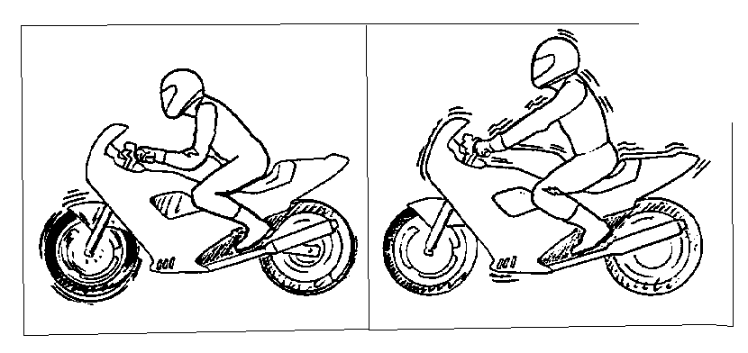
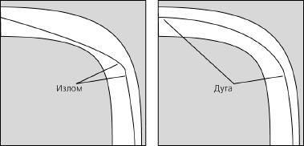
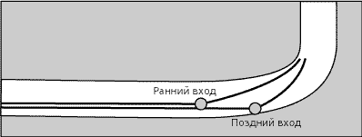

{% include JB/setup %}
{% raw %}
<div>

<p></p>
<h2><b>Twist of the wrist II </b></h2>
<p><b> </b></p>
<p><b> ПРЕДИСЛОВИЕ </b></p>
<p></p>
<p>Все мои достижения в мотогонках основаны на информации, 
изложенной в этой книге. Книга написана, чтобы донести до вас эту 
информацию и научить вас использовать ее при вождении мотоцикла. </p>
<p>Многое покажется вам избыточным для повседневного вождения, но 
смею заверить, большинство приемов применимы не толь на треке, но 
и на улице. </p>
<p></p>
<p>Часто советы людей только вызывают головную боль. Поэтому 
Кейт в своей книге учит вас думать самостоятельно. Более семи лет 
мы работали вместе безо всяких записей. Теперь у вас есть книга, 
значит, вам будет полегче. </p>
<p></p>
<p>Никому не хочется думать, что паника может взять над ним верх. </p>
<p>Вы должны рассматривать ее как некий барьер, который вам нужно 
преодолеть. Все реакции, приводящие к панике, перечислены в книге. </p>
<p>С ними сталкиваются все водители. Теперь вы сможете распознать их 
и понять, что именно они - причина всех ваших ошибок. </p>
<p></p>
<p>Я вожу мотоцикл более двадцати лет и все еще учусь. Не спешите. Я видел много торопыг, никто из них не 
продвинулся далеко. Вы должны принять все идеи этой книги, привыкнуть к ним. Не важно, сколько времени это 
займет. Потому что если вы этого не сделаете, вы не сможете идти дальше. </p>
<p><b> </b></p>
<p><b>          Дуг Чандлер. </b></p>
<p><b> </b></p>
<p><b>ПРЕДИСЛОВИЕ АВТОРА </b></p>
<p></p>
<p>10 лет, прошедших с момента выхода в свет первого тома этой книги, были восхитительными для </p>
<p>мотоциклистов. Та книга стала моей первой попыткой создать <b>технологию</b> вождения. Я знал, что она </p>
<p>существует, требовалось лишь найти ее. Первый том разошелся по всему миру, потому что он предлагал </p>
<p>водителю работать и думать самостоятельно, это был очень полезный первый шаг. <b>Но Twist of the wrist II</b> предлагает более реальную технологию вождения, обращается к самой сути проблем водителя. Позвольте мне </p>
<p>разъяснить понятие <b>"реальная технология вождения" </b>. </p>
<p></p>
<p><b>Технология против советов </b></p>
<p><b> </b></p>
<p>Для начала давайте, определим различные категории информации, которые вы получаете. Их четыре, 
запомните их. Любая информация о вождении вашего мотоцикла попадает в одну из них. </p>
<p><b> </b></p>
<p><b>Вредные советы </b></p>
<p><b> </b></p>
<p>•  "Никогда не узнаешь, быстро ли ты едешь, пока не разложишься" </p>
<p>•  "Подожди, пока все затормозят, и досчитай до двух" </p>
<p><b> </b></p>
<p><b>Дружеские советы </b></p>
<p><b> </b></p>
<p>•  "Береги себя" </p>
<p>•  "Старайся ездить плавно" </p>
<p><b> </b></p>
<p><b>Полезные советы </b></p>
<p><b> </b></p>
<p>•  "Постарайся объехать в повороте ту кочку" </p>
<p>•  "Попробуй пройти этот отрезок на повышенной передаче" </p>
<p><b> </b></p>
<p><b>Реальная технология </b></p>
<p><b> </b></p>
<p>•  "Всегда используйте более позднюю точку входа в поворот для поворотов с уменьшающимся радиусом" </p>
<p>•  "Если вы будете в повороте то добавлять газ, то сбрасывать - это приведет к усиленной работе подвески, уменьшит сцепление с дорогой и заставит мотоцикл распрямить траекторию". </p>
<p><b> </b></p>
<p><b> </b></p>
<p><b> </b></p>
<p><b> </b></p>
<p></p>
<p>1</p>
<p><b>Реальные решения </b></p>
<p><b> </b></p>
<p>Настоящая технология имеет широкую область применения и всегда решает проблемы. Она включает в 
себя осознание водителем своих действий и понимании связи между этими действиями и требованиями к 
динамике мотоцикла. Контр-рулений - и идеальный пример такой технологии, (см. гл. 12 для объяснения контр
руления). </p>
<p></p>
<p>Практически все учатся ездить, не имея ни малейшего понятия о контр-рулении. Но как толь водитель 
понимает и принимает его, оно открывает обширное поле для совершенствования в любой ситуации требующей 
руления. Контрруление идеально сочетает, требован и я и желания водителя с требованиями и желаниями байка. </p>
<p>Это я и называю <b>технологией. </b> Надеюсь, вы видите разницу между ней и дружескими или полезными советами. </p>
<p></p>
<p>Я не хочу сказать, что следует пренебрегать советами. Они очень полезны, когда нужно применить 
технологию к конкретной ситуации. Тогда подсказка или совет становятся полезным инструментом. Но я слышал 
много советов от людей, искренне пытающихся помочь, и почти все они оказывались бесполезными. </p>
<p><b> </b></p>
<p><b>Открытие </b></p>
<p><b> </b></p>
<p>Для настоящего мотоциклиста вождение - всегда открытие и вызов. Так было на протяжении 100 лет, с 
момента возникновения мотоцикла, и так будет, пока мотоциклы существуют. Настоящий водитель каждую 
поездку принимает как ценный опыт. Приключение прячется в каждом повороте, каждом прохвате, каждом 
откруте. В мире много вещей, которые со временем становятся скучными и привычными. Изучение и применение 
новых технологий позволит избежать этого. Перед вами откроются новые двери. </p>
<p><b> </b></p>
<p><b>Принятие технологии </b></p>
<p><b> </b></p>
<p>Шопенгауэр сказал: "Истина проходит три стадии. Сперва над ней смеются. Потом ее жестко возражают. И, наконец, принимают как очевидность". <b>Технология вождения</b> прошла все три стадии. </p>
<p></p>
<p>Проходя серию эсок на моем 20 0-кубовом Ducati в 1960-м году, я открыл контрруление. Я испугался. Это 
казалось полным бредом, и я никогда не упоминал о нем до 1970 года, боялся, что меня примут за идиота. </p>
<p><b>Контрруления</b> было понято только в 1973-м году, во время международной конференции по безопасному </p>
<p>вождению, проходившей в Сан-Франциско. Именно там доктор Гарри Нарт и группа исследователей фирмы </p>
<p>Honda независимо представили документацию, разъясняющую как работает контрруление, и как его 
осмысленное использование помогает водителю избегать неприятностей. </p>
<p></p>
<p>Эти исследования дали каждому возможности для совершенствования. Но я помню и жесткие возражения, 
высказанные в мой адрес, когда я пытался рассказать об этой технологии гонщикам с 20-летним стажем. </p>
<p></p>
<p>Аналогично, долгое время считалось, что применять передний тормоз очень и очень опасно. Даже 
продавцы мотоциклов стращали этим новичков. Кое-где при обсуждении этого вопроса дело доходило до драки. </p>
<p>Теперь "все знают" что львиная доля в торможении приходится именно на передний тормоз. </p>
<p></p>
<p>В 1976-м году я заявил, что гонщики могут улучшить свои результаты, просто изучив теоретические основы 
вождения мотоцикла. Я издал несколько коротких бюллетеней, состоящих в основном из полезных советов, и они 
помогли многим людям. Однако мои друзья гонщики резко критиковали меня, когда узнали, что мои ученики часто 
сидят в классе, разглядывая графики и диаграммы. Тем не менее, мои ученики стали резко улучшать свои 
результаты, проходя круг в среднем на 7 секунд быстрее, чем до занятий. До тех пор, пока молодой журналист и 
гонщик Джон Ульрих не прошел мой курс и не опубликовал отчете нем в 1977-м, никто даже и слушать ничего не 
хотел. Теперь они говорят, что это история. </p>
<p></p>
<p>В этой книге вы найдете еще несколько ключей к разгадке эффективного управления мотоциклом. </p>
<p></p>
<p><b>Кейт Код </b></p>
<p><b> </b></p>
<p><b> </b></p>
<p><b> </b></p>
<p><b> </b></p>
<p><b> </b></p>
<p><b> </b></p>
<p><b> </b></p>
<p><b> </b></p>
<p><b> </b></p>
<p><b> </b></p>
<p><b> </b></p>
<p><b> </b></p>
<p></p>
<p>2</p>
<p></p>
<p></p>
<p><b>В В Е Д Е Н И Е </b></p>
<p><b> </b></p>
<p><b>Машина против человека </b></p>
<p></p>
<p>С момента покупки моего первого мотоцикла в 1957 году, мотостроение развивалось потрясающими 
темпами. Байки становились легче и быстрее, шины - прилипчивее, подвески - надежнее. Но, судя по 20000 
студентов, которых я обучил за 13 лет в Калифорнийской школе Супербайка, все они сталкиваются с теми же 
проблемами, что и 20 лет назад. Наши учебные мотоциклы стали ездить на 20 миль в час быстрее, но время 
прохождения круга сократилось всего на 1-2 секунды. Если вспомнить, что за это время скорости в спорте 
выросли на 8-10 секунд на круге, то появляются интересные вопросы и ответы  на них. </p>
<p></p>
<p></p>
<p><b> </b></p>
<p><b> </b></p>
<p><b> </b></p>
<p><b> </b></p>
<p><b> </b></p>
<p><b> </b></p>
<p><b>Возможности машин давно </b></p>
<p><b>превзошли возможности гонщиков. </b> </p>
<p></p>
<p></p>
<p></p>
<p></p>
<p></p>
<p></p>
<p></p>
<p></p>
<p></p>
<p><b>Что мешает </b></p>
<p></p>
<p>Что же мешает водителям использовать все эти замечательные достижения мотостроения? (Только </p>
<p>улучшение сцепных свойств шин дает улучшение времени круга в среднем на 3 секунды.) Где находятся барьеры </p>
<p>и как их преодолеть? (Что-то же мешает огромному количеству людей.) Может надо сосредоточиться на </p>
<p>постижении приемов вождения? (Гонщик 90-хумеет гораздо больше своего коллеги из 80-х.) Возможно, стоит </p>
<p>проводить больше времени на трассе? (Мой опыт говорит, что результаты не зависят напрямую от времени, проведенного в седле.) Возможно дело в мотивировке каждого конкретного гонщика? (Опять же, знавал я </p>
<p>одаренных и мотивированных спортсменов, не достигших больших результатов.) Невеселая картина </p>
<p>вырисовывается для начинающих гонщиков, не так ли? (Подождите-ка секундочку.) </p>
<p><b> </b></p>
<p><b>Мастерство на 75 процентах </b></p>
<p></p>
<p>Я заметил, что 95% моих учеников достигают небывалой уверенности в управлении мотоциклом после 
нескольких часов занятий в классе и на треке, а большинство из них могут освоить очень сложные приемы 
вождения всего за два дня - 
происходит за этими 75 процентами? Я думаю, все согласятся, что потом вступает в действие инстинкт 
самосохранения, обычно называемый страхом. Как только основные приемы вождения освоены, появляется 
кнопка "Паника", и каждый нажимает ее при подходе к 
это и мешает достичь поставленных целей, подрывает самоуважение и лишает уверенности в своих силах. </p>
<p></p>
<p><b>  </b></p>
<p><b> </b></p>
<p><b> </b></p>
<p><b> </b></p>
<p><b> </b></p>
<p><b> </b></p>
<p><b>Инстинкт самосохранения не только  </b></p>
<p><b>разом тратит всё ваше внимание, он  </b></p>
<p><b>ещё и провоцирует ошибки вождения </b></p>
<p><b>               </b></p>
<p><b> </b></p>
<p><b> </b></p>
<p><b> </b></p>
<p><b> </b></p>
<p><b> </b></p>
<p></p>
<p>3</p>
<p><b>ВАШИ 10$ </b></p>
<p><b> </b></p>
<p></p>
<p> <i> </i>В первом томе книги я ввел понятие "десяти долларов". Смысл его в том, что </p>
<p></p>
<p>каждый имеет <b>определенное и неизменное количество внимания</b>, которое </p>
<p>Начните с раннего торможения, 
потом наметьте траекторию для 
тратит в процессе вождения на любые производимые за рулем действия - 
быстрого входа в поворот. </p>
<p>переключение передач, отслеживание потока, закладывание мотоцикла в поворот </p>
<p>Привыкнете к скорости, а потом 
или напевание про себя песенки. Если все ваше внимание исчерпано, начинается 
постепенно увеличивайте её. </p>
<p><b>паника</b>. Например, вы так боитесь врезаться во что-то, что сосредотачиваете <b>все </b></p>
<p></p>
<p></p>
<p><b>ваше внимание</b>  на этом объекте, и его (внимания, то есть) просто не остается на </p>
<p></p>
<p>выполнение других действий, в результате вы врезаетесь. <b>Все водители, </b></p>
<p></p>
<p><b>независимо от подготовки, время от времени тратят все $10 своего внимания, </b></p>
<p>Некоторые повороты требуют </p>
<p><b>что приводит к проявлениям инстинкта самосохранения - панике и страху. </b> В </p>
<p>всего вашего внимания, и вам </p>
<p>хочется затормозить. Ни в коем </p>
<p>этой книге я попытаюсь научить вас обманывать ваш страх (или отодвигать предел, </p>
<p>случае, ведь торможение тоже </p>
<p>за которым он возникает) и тем самым <b>устранить главную причину всех проблем </b></p>
<p>требует внимание </p>
<p><b>- кнопку "Паника" </b> Тратьте ваши<b> внимание</b> обдуманно и не давите на <b>кнопку</b> со </p>
<p>всей силы. </p>
<p></p>
<p> <i>Эта книга - замечательный инструмент, который поможет вам понять, что именно нажимает на </i></p>
<p> <i>кнопку "Паника". Чтение и тренировки помогут вам отодвинуть барьер, за которым срабатывает эта кнопка </i></p>
<p> <i>и позволит вам получать удовольствие от возросших скоростей </i></p>
<p></p>
<p><b>Донни Грин </b>(Пятикратный чемпион в классе 250 куб. см и инструктор Калифорнийской школы супербайка с </p>
<p>шестилетним стажем).Он добавил свои комментарии к этой книге). <b> </b></p>
<p><b> </b></p>
<p><b> </b></p>
<p><b> </b></p>
<p><b> </b></p>
<p><b> </b></p>
<p><b> </b></p>
<p><b> </b></p>
<p><b> </b></p>
<p><b> </b></p>
<p><b> </b></p>
<p><b> </b></p>
<p><b> </b></p>
<p><b> </b></p>
<p><b> </b></p>
<p><b> </b></p>
<p><b> </b></p>
<p><b> </b></p>
<p><b> </b></p>
<p><b> </b></p>
<p><b> </b></p>
<p><b> </b></p>
<p><b> </b></p>
<p><b> </b></p>
<p><b> </b></p>
<p><b> </b></p>
<p><b> </b></p>
<p><b> </b></p>
<p><b> </b></p>
<p><b> </b></p>
<p><b> </b></p>
<p><b> </b></p>
<p><b> </b></p>
<p><b> </b></p>
<p><b> </b></p>
<p><b> </b></p>
<p><b> </b></p>
<p><b> </b></p>
<p><b> </b></p>
<p><b> </b></p>
<p><b> </b></p>
<p><b> </b></p>
<p></p>
<p>4</p>
<p></p>
<p><b>Г Л А В А    П Е Р В А Я </b></p>
<p><b> </b></p>
<p><b>ВРАГ </b></p>
<p><b>Инстинкт самосохранения </b></p>
<p></p>
<p>Инстинкт самосохранения всегда заставляет нас действовать автоматически. Мы так устроены, что не 
можем осмысленно контролировать его проявления. Например, мы не можем сдержаться от моргания, когда что
то внезапно появляется в поле нашего зрения. Однако проявления инстинкта самосохранения (ПИС) не всегда 
полезны, а часто даже вредны. Например, человек может застыть (еще одно ПИС) или, напротив, начать 
действовать неадекватно. Однажды я стал свидетелем такой ситуации. Гонщик упал в девятом повороте трассы 
Riverside Raceway. В этом месте поворот профилирован (т.е. его внешняя бровка находится выше внутренней, как на велотреке) и вдоль внешней бровки идет забор высотой в 5 футов. Гонщик упал совсем рядом с 
внутренней бровкой, в 10 футах от газона. Вскочив, он ринулся через всю трассу, по которой неслись другие 
гонщики. Ему в тот момент казалось, что так будет безопаснее. </p>
<p><b> </b></p>
<p><b>Устройства самосохранения </b></p>
<p></p>
<p>Многие устройства и приспособления для гонок сделаны с учетом ПИСов. Например, ткань на ладони 
гоночной перчатки выбирается более прочной, поскольку человек при падении невольно выставляет руки вперед 
- это 
резкое и сильное торможение, еще одно ПИС. Более "липкие" шины помогают уменьшить последствия от резкого 
наклона мотоцикла в повороте или слишком сильного торможения. </p>
<p><b> </b></p>
<p><b>Ошибки самосохранения </b></p>
<p></p>
<p>Рано или поздно, каждого из нас ПИСы приводят вас к аварии. Но самое главная проблема в том, что они </p>
<p>являются прямой или косвенной причиной ВСЕХ ошибок вождения. По сути, они <b>разрушают</b>  вождение. Для </p>
<p>мотоциклистов это особенно верно. ПИСы полностью меняют действия водителя. Рассмотрим, например, такой </p>
<p>распространенный ПИС, как сброс/добавление газа в повороте. Мой опрос среди 8000 водителей показал, что </p>
<p><b>никто из них</b>  не собирается сбрасывать газ в повороте, и, более того, все они собираются его добавлять. Но </p>
<p>ПИС заставляет их передумать. <b>Сброс газа в повороте - это ПИС №1</b>. Исследования показывают, что этот ПИС </p>
<p>случается всегда, как только кнопка "Паника" нажата. Кнопка же нажимается по многим причинам, например: </p>
<p></p>
<p>•  "еду слишком быстро" </p>
<p>•  "зашел в поворот слишком широко" </p>
<p>•  "слишком сильно наклонился" </p>
<p>•  "похоже, дорога скользкая" </p>
<p></p>
<p>Неровности полотна, другие участники движения тоже заставляют водителя сбросить газ. Водитель обычно 
понимает, что не следует сбрасывать газ сразу после того, как он это сделал (знакомо, не так ли?), что является 
еще одним доказательством неконтролируемости инстинкта самосохранения. </p>
<p></p>
<p></p>
<p><b>                                            </b></p>
<p><b> </b></p>
<p><b>ПИСы первым делом действуют на руки, </b></p>
<p><b>влияя тем самым на руление, торможение, </b></p>
<p><b>управление газом и воздействия на прочие </b></p>
<p><b>органы управления, сосредоточенные на руле. </b></p>
<p><b> </b></p>
<p><b> </b></p>
<p><b> </b></p>
<p><b> </b></p>
<p><b>ПИСы</b> </p>
<p><b> </b></p>
<p>Враг силен, но его немного: </p>
<p></p>
<p><b>1. </b>Сброс газа </p>
<p><b>2. </b>Сжимание руля </p>
<p><b>3. </b>Сужение поля зрения или бегающие глаза </p>
<p><b>4. </b>Внимание зафиксировано на одном объекте </p>
<p><b>5. </b>Руление в сторону объекта, на котором зафиксировано внимание </p>
<p><b>6. </b>Отсутствие руления или неэффективное (медленное или слишком раннее) руление </p>
<p><b>7. </b>Ошибки торможения (недотормаживание или перетормаживание) </p>
<p></p>
<p>5</p>
<p></p>
<p>Каждый из нас сталкиваемся со всеми этими ПИСами. Можем ли мы ими управлять? Возьмем, к примеру, 
сжимание руля. Вы замечаете, что вцепились в руль изо всех сил после того, как это произошло, или вы делаете 
это намеренно? Случалось ли вам нарочно сужать поле зрение или заставлять себя сфокусировать внимание на 
чем-то одном? Ставили ли вы себе целью сблокировать колесо при торможении? </p>
<p></p>
<p>Итак, в результате реальной или мнимой опасности, наше тело начинает действовать помимо нашей воли, пытаясь уменьшить или избежать повреждений. <b> Но ни один ПИС не соответствует ни конструкции мотоцикла,</b> <b>ни приемам вождения. </b> В следующих главах мы научимся побеждать их. </p>
<p></p>
<p> <i>Здорово, что враг наконец-то назван по имени. Возможно, теперь водитель сможет не идти на поводу у </i></p>
<p> <i>ПИСов, а пресекать их в зародыше, пока они не стали причиной неприятностей. Должен сознаться, что и у </i></p>
<p> <i>меня случаются ПИСы, и это после 13 лет вождения. Словно чертик из коробочки они продолжают </i></p>
<p> <i>выскакивать у меня из-за плеча. Теперь вы сможете бороться с ними. </i></p>
<p></p>
<p>ДГ </p>
<p><b> </b></p>
<p><b> </b></p>
<p><b> </b></p>
<p><b> </b></p>
<p><b> </b></p>
<p><b> </b></p>
<p><b> </b></p>
<p><b> </b></p>
<p><b> </b></p>
<p><b> </b></p>
<p><b> </b></p>
<p><b> </b></p>
<p><b> </b></p>
<p><b> </b></p>
<p><b> </b></p>
<p><b> </b></p>
<p><b> </b></p>
<p><b> </b></p>
<p><b> </b></p>
<p><b> </b></p>
<p><b> </b></p>
<p><b> </b></p>
<p><b> </b></p>
<p><b> </b></p>
<p><b> </b></p>
<p><b> </b></p>
<p><b> </b></p>
<p><b> </b></p>
<p><b> </b></p>
<p><b> </b></p>
<p><b> </b></p>
<p><b> </b></p>
<p><b> </b></p>
<p><b> </b></p>
<p><b> </b></p>
<p><b> </b></p>
<p><b> </b></p>
<p><b> </b></p>
<p><b> </b></p>
<p><b> </b></p>
<p><b> </b></p>
<p><b> </b></p>
<p><b> </b></p>
<p><b> </b></p>
<p><b> </b></p>
<p><b> </b></p>
<p><b> </b></p>
<p><b> </b></p>
<p></p>
<p>6</p>
<p></p>
<p><b>Г Л А В А    В Т О Р А Я </b></p>
<p><b> </b></p>
<p><b>УПРАВЛЕНИЕ ГАЗОМ </b></p>
<p><b>Правило номер один </b></p>
<p></p>
<p>Возможно, ли отучиться от такого ПИСу, как добавление-сброс газа? Что происходит с байком в результате 
этой распространенной ошибки? Какие конструктивные особенности мотоцикла находятся в противоречии с этим 
ПИСом? Что позволит избавиться от него? Что выигрывает водитель, научившийся бороться с этим ПИСом? </p>
<p>Ответы на эти вопросы вы найдете в следующих пяти главах. </p>
<p></p>
<p><b>Пойми газ </b></p>
<p></p>
<p>Управление газом - очень тонкая штука, со своими правилами и стандартами. Способы управления газом    
находятся в прямой зависимости от конструктивных особенностей вашего байка и позволяют ему действовать 
максимально эффективно. Осознание особенностей конструкции байка и их взаимодействия с манерой вождения 
- первый шаг в борьбе с ПИСами, мешающими водителю. </p>
<p><b> </b></p>
<p><b>Сцепление с дорогой </b></p>
<p><b> </b></p>
<p></p>
<p>При прохождении поворотов главное, о чем заботится гонщик, это сцепление </p>
<p></p>
<p>шин с дорожным полотном. Давайте рассмотрим пятна 1013 контакта и на </p>
<p></p>
<p>основании этого поймем, какова идеальная развесовка в повороте. По грубым </p>
<p></p>
<p>Настоящее ускорение и есть 
прикидкам, 40 процентов веса должны приходится на переднее колесо и 60% - на 
окончание поворота. </p>
<p>заднее. У гоночных мотоциклов на заднее колесо приходится до 70% веса, </p>
<p>поскольку они испытывают большие ускорения. В зависимости от конкретной </p>
<p>модели мотоцикла, соотношение 40/60 может немного меняться. Задача водителя, </p>
<p>поддерживать идеальную развесовку с помощью виртуозного использования газа. </p>
<p>Как же этого добиться? </p>
<p></p>
<p><b>Распределение нагрузки в  </b></p>
<p><b>повороте соответствует </b></p>
<p><b>площадям </b></p>
<p><b>контактных пятен - примерно 40% </b></p>
<p><b>впереди и 60% сзади. Вы можете </b></p>
<p><b>регулировать загрузку с помощью </b></p>
<p><b>газа. </b></p>
<p><b> </b></p>
<p><b>Легкое касание </b></p>
<p></p>
<p></p>
<p>Развесовка большинства аппаратов в статике или при прямолинейном </p>
<p></p>
<p>равномерном движении составляет 50/50 (+- 5%). Таким образом, нам нужно </p>
<p>Вы можете попробовать рулить 
пораньше, разгрузив перёд и 
переместить от 10 до 20 процентов веса спереди назад. Значит, нужно придать 
зайдя пошире но это повредит 
мотоциклу ускорение от 0,1 до 0,2 д. Для этого нужно повысить обороты с 4000 до 
вашему времени на прямой. </p>
<p>6000 на пятой передаче (речь идет об аппаратах не ниже 600 куб. см). <b>Не слишком </b></p>
<p></p>
<p><b>сильное ускорение - но этого достаточно. </b></p>
<p></p>
<p></p>
<p></p>
<p>В повороте открывайте газ 
Часто водитель не может точно отследить, насколько он увеличивает 
пораньше слегка ускорьтесь к 
обороты, причем, как правило, он ошибается в меньшую сторону. В результате 
середине. </p>
<p>мотоцикл либо распрямляет траекторию в повороте, либо начинается боковое </p>
<p>скольжение, и тут водитель совершает еще одну ошибку - сбрасывает газ. </p>
<p><b> </b></p>
<p><b>Правило номер ОДИН </b></p>
<p></p>
<p></p>
<p><b>Как только вы начали добавлять газ, вы должны добавлять его, </b></p>
<p>Не стоит пытаться достичь </p>
<p><b>равномерно, плавно и постоянно вплоть до окончания поворота. </b></p>
<p>скорости, которая вам </p>
<p>представляется правильной такие </p>
<p></p>
<p>попытки не приводят ни к чему </p>
<p>Как только гонщик достиг идеальной развесовки (т.е. переместил 10% 20% 
хорошему. </p>
<p>веса спереди назад) любые изменения развесовки <b>приводят к ухудшению </b></p>
<p></p>
<p><b>сцепления с дорогой. </b> Как только байк наклонен для поворота, любые изменения </p>
<p></p>
<p>Никогда не играйте ручкой газа в 
развесовки - одновременные ли (например, на изломе дороги, который влияет сразу 
повороте. </p>
<p>на оба колеса) или поочередные (при открытии/закрытии газа, вес вперед/вес </p>
<p>назад) -изменяют идеальною развесовку системы шины/мотоцикл. </p>
<p></p>
<p></p>
<p><b> </b></p>
<p></p>
<p>7</p>
<p><b>Водительское мастерство </b></p>
<p></p>
<p></p>
<p>Для успешного использования правила №1, водитель должен понимать и 
Все люди разные, поэтому 
чувствовать потребности мотоцикла. </p>
<p>настройки и траектория другого </p>
<p>гонщика не подойдет вам. Для </p>
<p><b>помогает ему работать правильно. </b></p>
<p>начала привыкнете к своему </p>
<p></p>
<p>байку. </p>
<p>Очевидно, что любые задержки, помехи, открытия-закрытия газа усложняют </p>
<p></p>
<p>достижение идеала. В этом и кроется основной вред ПИС №1 - оно <b>немедленно</b>   </p>
<p>Не дергайте ручку газа в 
повороте, это приведет к загрузки 
ухудшает сцепление байка с дорогой. Чем быстрее вы едете, тем сильнее эффект. </p>
<p>передка. </p>
<p>Достижение и поддержание развесовки 40/60 - главная цель всех ваших действий с 
ручкой газа. </p>
<p></p>
<p><b>Потери </b></p>
<p></p>
<p></p>
<p>Даже если вы не сорвете свой бак в занос в результате неправильного 
Нет ничего страшного, если вы 
использования газа в повороте, вы потеряете время. В среднескоростных 
зайдете в поворот медленнее, 
чем это возможно.  Вы можете 
поворотах (40-80 миль/час) каждое добавление/сброс/добавление газа стоит вам 
начать ускорение пораньше и 
0,1 с (или длины байка, если говорить о дистанции), если вы хороший гонщик. Для 
наверстаете упущенное при 
всех остальных эта потеря еще больше. В высокоскоростных поворотах проигрыш 
разгоне после поворота. </p>
<p>по времени увеличивается, поскольку сопротивление воздуха вносит больший </p>
<p>вклад в замедление мотоцикла. </p>
<p><b> </b></p>
<p><b>Курсы выживания </b></p>
<p></p>
<p>ПИС №1 - самое главное ПИС. Уличное вождение зачастую терпимо к ПИСу №1. У водителя формируется </p>
<p>ошибочное представление, что можно позволить себе сбросить газ в повороте. Однако следует четко понимать, что <b>правило №1 работает почти всегда, на любой скорости, оно верно для 99% всех поворотов и </b></p>
<p><b>дорожных условий. </b> Исключения редки - длинные спуски, повороты с уменьшающимся радиусом, повороты с </p>
<p>отрицательным профилем (велотрек наоборот) и повороты с неровностью посередине. Но даже тогда вы не </p>
<p>закрываете газ, просто на время перестаете его добавлять. </p>
<p></p>
<p>Допустим, вы вошли в поворот и внезапно поняли, что дорожное покрытие скользкое. Если вы сбросите газ, вы переместите 70-80% веса байка на переднее колесо, которое конструктивно можете нести только 35-40%. </p>
<p>Конечно, добавление газа не гарантирует вам отсутствие неприятностей. Но спросите себя, в каком случае 
вероятность падения выше? Представим еще более грубую ошибку - использование в скользком повороте 
переднего тормоза. Очевидно, что в этом случае падение почти неминуемо. Но ведь закрывая газ вы двигаетесь 
именно в этом направлении! </p>
<p></p>
<p><b>Газуй! </b></p>
<p></p>
<p>Итак, похоже, старое правило гонщиков "Сомневаешься? Газуй!" имеет право на существование. </p>
<p></p>
<p>Яркий пример - происшествие с Дугом Чандлером на Sears Point Raceway в 1989 году. Он тогда 
пилотировал свой 750-кубовый суперспорт по сухой трассе. Его задняя покрышка была настолько изношена, что 
срывалась в занос просто от сброса газа. В какой-то момент заднее колесо стало заносить так, что оно оставило 
30-ти футовый след резины на асфальте трассы. Если бы Дуг сбросил газ - хайсайда не избежать. Но опыт 
мотокроссмена подсказал ему, что надо газовать. Дуг добавил газа, это привело к вобблингу, но, в конце концов, мотоцикл выровнялся, Дуг остался в седле и на первом месте. Добавление газа было единственным   решением. </p>
<p>А что сделали бы вы? </p>
<p></p>
<p><b>Контрольные вопросы </b></p>
<p></p>
<p><b>1. </b>Что такое ПИС№1? </p>
<p><b>2. </b>Что такое правильная работа газом? </p>
<p><b>3. </b>Соответствует ли она конструктивным особенностям мотоцикла? </p>
<p><b>4. </b>Как часто ваша правая рука закрывает газ без разрешения? </p>
<p></p>
<p> <i>Поскольку у каждого байка свои особенности, важно научиться чувствовать его поведение в повороте. </i></p>
<p> <i>Эта глава поможет вам научиться правильной развесовке. Иногда хочется открутить по полной, и мне </i></p>
<p> <i>тоже, чего уж греха таить, но выигрывает тот, кто следует советам этой книги. Ведь ПИС №1 стоит вам </i></p>
<p> <i>не просто времени на круге, может стоит места в пелетоне. </i></p>
<p></p>
<p>ДГ </p>
<p></p>
<p><b> </b></p>
<p><b> </b></p>
<p></p>
<p>8</p>
<p></p>
<p><b>Г Л А В А    Т Р Е Т Ь Я </b></p>
<p><b> </b></p>
<p><b>УПРАВЛЕНИЕ ГАЗОМ </b></p>
<p><b>Подвески и сцепление с дорогой </b></p>
<p></p>
<p></p>
<p>С инженерной точки зрения, сцепление с дорогой зависит главным образом от 
Используйте большинство хода 
подвесок. Как водитель может улучшить подвески своего мотоцикла? Так ли 
передней подвески и примерно 
75% задней. Но если вы делаете 
необходимо ставить на свой байк чемпионскую вилку и амортизаторы? Возможно 
перед слишком мягкий,  зад 
ли эффективное управление на заводских подвесках? И что такое "эффективное 
станет заносить. </p>
<p>управление"? </p>
<p></p>
<p>На самом деле, мотоцикл управляется отлично. Не ерзает, не "воблит", не колбасится, не рыскает, не 
дергается - в общем, он стабилен. Совершенные подвески и грамотный водитель могут поддерживать байк в 
стабильном состоянии при любых дорожных условиях. </p>
<p><b>с дорогой</b>. Не больше и не меньше. </p>
<p></p>
<p>Нет ничего хуже, чем <b>неожиданное</b> скольжение или <b>угроза</b> такого скольжения (непредсказуемое </p>
<p>сцепление). Тут то <b>ПИСы</b> и берут верх над большинством водителей. Давайте взглянем поподробнее на </p>
<p>подвески и постараемся понять, <b>как водителю добиться их эффективной работы с помощью ручки газа. </b> </p>
<p></p>
<p><b>Диапазон работы подвесок </b></p>
<p><b> </b></p>
<p>Хорошая подвеска отличается от плохой как <b>узлами</b> (пружинами, амортизаторами и их весом) так и </p>
<p><b>геометрическими параметрами</b> (углом наклона вилки, выносом, положением двигателя). Управление газом </p>
<p>оказывает воздействие на оба компонента. </p>
<p></p>
<p></p>
<p><b> </b></p>
<p><b> </b></p>
<p><b>Ничто не заменит грамотно настроенные подвески. </b></p>
<p><b>Задача водителя - обеспечить им наилучший </b></p>
<p><b>рабочий диапазон с помощью правильного </b></p>
<p><b>использования газа. </b></p>
<p></p>
<p><b> </b></p>
<p><b> </b></p>
<p><b> </b></p>
<p></p>
<p><b>Подвески лучше всего работают в среднем диапазоне </b>(примерно в </p>
<p>В длинных поворотах стоит 
центральной трети хода). Как полностью сжатая, так и полностью "вытянутая" 
увеличить усилие отбоя, тогда 
переднее колесо останется на 
подвеска плохо отслеживают дорогу. Резкое торможение и сильное ускорение - 
дороге. Но не переборщите иначе 
идеальные примеры. При торможении передок сильно загружается и вяло 
оно станет скакать на каждой 
реагирует на неровности трассы. (Замечание - именно это является главной 
кочке. </p>
<p>причиной блокировки переднего колеса. Колесо не "прописывает" неровности или </p>
<p></p>
<p>И слишком мягкие и слишком 
делает это слишком медленно). При сильном ускорении передок разгружается, что 
жесткие пружины приводят к 
приводит к рысканью и отрыву. В центральной же трети хода подвески идеально 
чаттеру. </p>
<p>отслеживают полотно. </p>
<p></p>
<p><b>Диапазон работы гонщика </b></p>
<p><b> </b></p>
<p></p>
<p>Подвески накладывают ограничения на стиль езды. Водитель должен 
Все просто - сброс газа сжимает 
стараться держать подвески в середине хода, тогда мотоцикл сделает остальную 
переднюю подвеску и байк 
рулится быстрее. Открытие газа 
работу сам. </p>
<p>увеличивает угол наклона и байк </p>
<p>или сбрасываете газ, подвеска отслеживает не дорогу, а изменение развесовки. </p>
<p>рулится тяжелее. </p>
<p>Делать два дела одновременно - не ее работа. </p>
<p><b> </b></p>
<p><b>Настройка подвесок. </b></p>
<p><b> </b></p>
<p>Характеристики подвесок можно настроить под конкретную трассу и под конкретный стиль вождения. <b>Но вы </b></p>
<p><b>не избавитесь от основной проблемы</b>. Просто байк станет лучше соответствовать ситуации. На гоночных </p>
<p>мотоциклах изменяют поведение подвесок в предельных режимах, <b>смещая</b> тем самым диапазон их лучшей </p>
<p>работы, чтобы добиться выигрыша при прохождении конкретного круга. </p>
<p></p>
<p></p>
<p></p>
<p></p>
<p>9</p>
<p>Чаттер переднего колеса (чаттер: вибрации колес из-за частой потери/восстановления сцепления с 
дорогой) - хороший пример трудностей с настройкой. На некоторых байках чаттер проявляется на низких 
скоростях, и гонщик решает, что уже достиг предела работы подвесок. Но с увеличением скорости прохождения 
круга чаттер вдруг пропадает, с тем, чтобы проявиться, когда скорость станет еще выше. Обычные мотоциклы, как правило, настраиваются на некоторые усредненные условия, для лучшего прохождения "любимых" поворотов 
водителя. </p>
<p><b> </b></p>
<p><b>Водительские настройки </b></p>
<p><b> </b></p>
<p>Лучший инструмент для настройки подвесок - ручка газа. На любом мотоцикле именно грамотное 
применение ручки газа позволяет идеально контролировать развесовку в повороте. Очевидно, 
открытие перемещает вес назад, закрытие - вперед. При весе системы водитель-мотоцикл в 600 фунтов, вы 
легким движением правой руки перебрасываете 150 фунтов спереди назад и наоборот. </p>
<p><b>ключ к настройке подвесок. </b> </p>
<p><b> </b></p>
<p><b>Ручка газа как элемент подвески </b></p>
<p><b> </b></p>
<p>Гонщик может постоянно настраивать подвески и так ничего и не добиться. Ничто ему не поможет, если он 
резко заходит в поворот сбросив газ, ждет почти до конца кривой, а потом газует изо всех сил, превышая 10-20% 
идеальной разницы в развесовке. Такой стиль никогда не позволит подвеске работать в идеальном диапазоне. </p>
<p>Особенно это верно для простых среднескоростных поворотов на 90 градусов, требующих от 2-х до 3-х секунд на 
их прохождение. Гонщиков, исповедующих стиль, описанный выше, часто можно видеть в боксах, возящихся с 
настройками. Они уделяют большое внимание таким диапазонам работы подвесок, которые почти недостижимы в 
гонке. </p>
<p></p>
<p>В1989 году Джон Косински порвал как грелку 250-кубовый класс в Америке, установив рекорд круга, </p>
<p><b>простоявший много лет</b>. Он признался мне тогда, что почти не трогал подвески, пять гонок подряд! Просто он </p>
<p>умел пользоваться ручкой газа. </p>
<p><b> </b></p>
<p><b>Газ и задняя подвеска </b></p>
<p><b> </b></p>
<p>Большинство мотоциклистов не понимают простой вещи: чем сильнее газуешь, тем менее податливой 
становится задняя подвеска, и тем сильнее 
опускается. Это не так. (Простая проверка - упритесь передним колесом в стену и потихоньку отпускайте 
сцепление при включенной передаче задок поднимется). </p>
<p></p>
<p>Повторю правило газа №1: <b>как только вы начали добавлять газ, вы должны добавлять его </b></p>
<p><b>равномерно, плавно и постоянно вплоть до окончания поворота. </b> В этом случает правило идеально </p>
<p>сочетается с нетривиальным фактом, описанный выше. Идеальная развесовка 40/60 не только обеспечивает </p>
<p>лучшее сцепление с дорогой, но и позволяет подвескам работать в лучшем диапазоне. </p>
<p></p>
<p></p>
<p>Резкий "открут" делает заднюю подвеску жесткой и ухудшает сцепление. Это </p>
<p></p>
<p>проблема для большинства из нас. Однако лучшие гонщики нашли способ обратить </p>
<p></p>
<p>Большинство парней закрывают 
ситуацию себе на пользу. Для 500-кубового байка для Гран-при (и даже для 
газ, но чтобы поймать байк нужно 
хорошего супербайка) при уменьшении сцепления колесо начинает прокручиваться. </p>
<p>просто перестать его добавлять. </p>
<p>Что же делают мастера? Они используют это для выхода из поворота. Подвеска 
становится мягче, поскольку потеря сцепления облегчает задок. Все то же самое - 
но на другом уровне. </p>
<p></p>
<p>Этот фантастический стиль выглядит отлично, но и базовый метод работает. Чем раньше вы открываете 
газ и чем плавнее вы его добавляете, тем меньшее ускорение вам требуется, чтобы достичь нужной скорости на 
выходе из поворота, и тем лучше работает задняя подвеска. Водитель получает более прогнозируемое 
сцепление с дорогой. И это работает для всех стилей вождения, не только для гонок. </p>
<p><b> </b></p>
<p><b>Страховка от сноса </b></p>
<p><b> </b></p>
<p>Плавное добавление газа особенно полезно, когда заднее колесо начинает сносить. При условии, что вы не </p>
<p>пожадничали с газом, вы можете избежать большего сноса или хайсайда просто перестав добавлять газ. Байк </p>
<p>начнет замедляться плавно, а не резко, как при закрытии газа, и мягко войдет в зацепление с дорогой. Главное </p>
<p>препятствие на пути грамотных действий - <b>ПИС №1. </b> </p>
<p></p>
<p>(Очевидно, состояние шин, угол наклона, настройки подвесок, сам гонщика являются значимыми </p>
<p>факторами. Я не призываю вас верить мне на слово. Понаблюдайте, как мастера борются с небольшими </p>
<p>сносами, закрывают ли они газ, или вы продолжаете слышать как мотор ревет на постоянных или даже более </p>
<p>высоких оборотах?) </p>
<p></p>
<p>10</p>
<p><b>Почему? </b></p>
<p><b> </b></p>
<p>Посмотрите на конструкцию мотоцикла. Когда задок начинает сносить и вы закрываете газ, вы 
перемещаете вес с заднего колеса. Это приводит к более сильному сносу и загружает передок, часто настолько, что его тоже начинает сносить. </p>
<p><b> </b></p>
<p><b>Еще одна проблема сброса газа </b></p>
<p><b> </b></p>
<p>При сбросе газа сжимаются обе подвески. Если вы закроете ручку в середине поворота, ваш клиренс 
уменьшится как спереди, так и сзади, причем немедленно. ПИС №1 тут как тут - стоит водителю услышать, как 
бай скребет по асфальту, он закрывает газ еще сильнее, байк скребет сильнее, возможно даже одно колесо 
отрывается от дороги. ПИС№1 мешает снова. </p>
<p><b> </b></p>
<p><b>Каково же главное правило при использовании газа? </b></p>
<p><b> </b></p>
<p><b>Как только вы начали добавлять газ, вы должны добавлять его равномерно, плавно и постоянно </b></p>
<p><b>вплоть до окончания поворота </b>(повторите про себя 1000 или 2000 раз). <b> </b></p>
<p></p>
<p> <i>Большинство стандартных подвесок может быть настроено даже для гонок. Дорогой тюнинг не нужен. </i></p>
<p> <i>И потом, особенно круто победить парней с навороченными деталями. Так или иначе, тюнинговые подвески </i></p>
<p> <i>сами по себе не сделают вас быстрее. Они могут быть даже опасными в медленных поворотах. Ни байк, ни </i></p>
<p> <i>шины не любят этого. Как только вы поняли правило №1 и научились его применять, как только вы сможете </i></p>
<p> <i>добиться прокручивания заднего колеса плавным добавлением газа, ваш байк станет управляться идеально. </i></p>
<p></p>
<p>ДГ <i> </i></p>
<p><b> </b></p>
<p><b> </b></p>
<p><b> </b></p>
<p><b> </b></p>
<p><b> </b></p>
<p><b> </b></p>
<p><b> </b></p>
<p><b> </b></p>
<p><b> </b></p>
<p><b> </b></p>
<p><b> </b></p>
<p><b> </b></p>
<p><b> </b></p>
<p><b> </b></p>
<p><b> </b></p>
<p><b> </b></p>
<p><b> </b></p>
<p><b> </b></p>
<p><b> </b></p>
<p><b> </b></p>
<p><b> </b></p>
<p><b> </b></p>
<p><b> </b></p>
<p><b> </b></p>
<p><b> </b></p>
<p><b> </b></p>
<p><b> </b></p>
<p><b> </b></p>
<p><b> </b></p>
<p><b> </b></p>
<p><b> </b></p>
<p><b> </b></p>
<p><b> </b></p>
<p><b> </b></p>
<p><b> </b></p>
<p><b> </b></p>
<p><b> </b></p>
<p><b> </b></p>
<p></p>
<p>11</p>
<p></p>
<p><b>Г Л А В А    Ч Е Т В Ё Р Т А Я </b></p>
<p><b> </b></p>
<p><b>УПРАВЛЕНИЕ ГАЗОМ </b></p>
<p><b>Идеальная траектория для каждого </b></p>
<p></p>
<p></p>
<p>Каждый из нас проходит повороты по той или иной траектории. Но что такое </p>
<p></p>
<p>идеальная траектория? Если вы найдете ее, как вам ее удержать? Что может </p>
<p>Самое трудное - так настроить 
байк, чтобы он хорошо держал 
помешать вам выбрать и использовать идеальную траекторию? </p>
<p>траекторию и сбрасывал скорость </p>
<p></p>
<p>перед поворотами и в тоже время </p>
<p>На самом деле, на все эти вопросы существует простой ответ, вытекающий из 
ехал быстро, когда нужно. </p>
<p>Правила газа №1. По сути, это одно и то же. <b>Траектория, которая позволяет </b></p>
<p><b>применить Правило газа №1 и есть идеальная траектория. </b> Та, что не позволяет </p>
<p>- не идеальная. </p>
<p></p>
<p><b> </b></p>
<p><b> </b></p>
<p><b> </b></p>
<p><b> </b></p>
<p><b>Не важно, какую траекторию вы выбрали, </b></p>
<p><b>главное - грамотное управление газом </b></p>
<p><b> </b></p>
<p><b> </b></p>
<p><b> </b></p>
<p><b> </b></p>
<p><b> </b></p>
<p><b> </b></p>
<p><b>Различные приемы </b></p>
<p><b> </b></p>
<p>Я вовсе не хочу ввести вас в заблуждение. Идеальной траектории для каждого не существует и не может 
существовать. Различные траектории являются результатом работы гонщика, его частного видения задачи, его 
сильный и слабых сторон, возможностей его мотоцикла, и, конечно, пороговых значений его ПИСов. </p>
<p></p>
<p>Кроме того, состояние дорожного покрытия может пагубно сказываться на сцеплении с дорогой, и это 
внесет коррективы в траекторию. Чтобы справиться со всеми этими выбоинами, буграми и заплатками можно (
комбинацию всех трех способов. Самый трудный способ - третий, поскольку он подразумевает преодоление 
инстинкта самосохранения. </p>
<p></p>
<p>Во время соревнований гонщики поначалу всегда жалуются на трассу, мол она стала хуже, чем в прошлом 
году. Первое время они замечают только ухудшения. Однако, как правило, они устанавливают личные рекорды к 
концу соревнований. </p>
<p><b> </b></p>
<p><b>Найти траекторию </b></p>
<p><b> </b></p>
<p><b>Всякий раз, когда вы закрываете газ в повороте или открываете его недостаточно быстро, вы </b></p>
<p><b>теряете время и ухудшаете устойчивость мотоцикла. </b> Вход в поворот является определяющим моментом. </p>
<p>Хорошим примером являются повороты с уменьшающимся радиусом. Если вы входите в такой поворот как в 
обычный, вам 
идеальна. </p>
<p></p>
<p>Давайте не путать повороты с двумя апексами и повороты с уменьшающимся радиусом. В повороте с 
двумя апексами вы должны сбросить газ посередине, чтобы снова повернуть байк. Это позволит вам 
и 
ровный газ" и "использовать неправильную траекторию" - одно и то же. Конечно, ведь этим вы нарушаете 
Правило №1. </p>
<p><b> </b></p>
<p><b> </b></p>
<p><b> </b></p>
<p><b> </b></p>
<p><b> </b></p>
<p><b> </b></p>
<p><b> </b></p>
<p></p>
<p>12</p>
<p></p>
<p><b> </b></p>
<p><b> </b></p>
<p><b> </b></p>
<p><b> </b></p>
<p><b> </b></p>
<p><b> </b></p>
<p><b> </b></p>
<p><b> </b></p>
<p><b> </b></p>
<p><b> </b></p>
<p><b>Поворот с уменьшающимся радиусом и  </b></p>
<p><b>поворот с двумя апексами - разные вещи. </b></p>
<p><b>Управлением газом поможет вам в обоих  </b></p>
<p><b>случаях. </b></p>
<p><b> </b></p>
<p><b> </b></p>
<p><b> </b></p>
<p><b> </b></p>
<p><b> </b></p>
<p><b> </b></p>
<p><b> </b></p>
<p><b> </b></p>
<p><b> </b></p>
<p><b> </b></p>
<p><b> </b></p>
<p><b>Траектория определяется газом </b></p>
<p></p>
<p><b>Траектория определяется газом, или рулите для газа, хорошая траектория позволяет правильно </b></p>
<p><b>использовать газ. </b> Других определений идеальной траектории не существует. </p>
<p><b> </b></p>
<p><b>Не зависай на ровном газу </b></p>
<p></p>
<p>Если вы не открываете газ в повороте, вы замедляетесь. Даже если вы открываете его недостаточно 
быстро, вы теряете свои мили в час! Многие водители считают, что открытие газа приводит к ускорению 
мотоцикла. Это не так, Попробуйте вот что. Оседлайте свой дорожный мотоцикл, зайдите на нем в поворот, откройте газ и посмотрите на спидометр (делайте это в безопасном месте, вроде пустой трассы). Если вы 
наклоняете байк сильнее, ваша скорость падает. Вам нужно газовать даже для того, чтобы поддерживать 
развесовку 50/50, так что для идеальной развесовки 40/60 вам нужно газовать еще сильнее. </p>
<p><b> </b></p>
<p><b>Держи траекторию </b></p>
<p></p>
<p></p>
<p>Что нужно, чтобы мотоцикл держал траекторию? Сброс газа загружает </p>
<p></p>
<p>передок, что приводит к уменьшению наклона байка и к распрямлению траектории. </p>
<p>Повторенье - мать ученья. Не 
сбрасывай газ, а плавно 
Слишком сильно открытие газа делает то же самое. (Замечание: если вам кажется, 
увеличивай 
что при закрытии газа байк едет к внутренней стороне поворота, это значит, что вы 
сами бессознательно рулите его туда, состояние шин и подвески тоже может 
способствовать этому). </p>
<p></p>
<p><b>Единственный надежный способ держать траекторию - это поддерживать развесовку 40/60 с </b></p>
<p><b>помощью газа. </b> Это очень нужно вашему байку, это идеальное состояние   для него, это способ добиться </p>
<p>стабильности мотоцикла в сочетании со стабильностью траектории. Хотите ли вы использовать предсказуемую </p>
<p>траекторию? Хотите ли вы знать, куда именно едет байк? Замечаете ли вы его небольшие рысканья? Самое </p>
<p>главное - приводят ли эти рысканья к ПИСам? </p>
<p></p>
<p>Интересный факт - "вошел слишком быстро" и "еду слишком широко" 
вас делать то, что как разделать не нужно - сбрасывать газ, что приводит к распрямлению траектории. <b>включает</b> ПИС №1. Он заставляет </p>
<p><b> </b></p>
<p><b>Исключения </b></p>
<p></p>
<p>Существует исключение из Правила №1 - повороты, проходимые на высшей передаче на полном газу. </p>
<p>Первый поворот на Brainerd International Raceway - хороший пример. Вы входите в него после прямого отрезка, длиной в одну милю. На современных серийных мотоциклах, объемом в 600 или 750 куб. см или на 250-ках Гран </p>
<p>При этот поворот проходится на полном газу. Что же вам делать? Вы не можете открыть газ, ручка повернута до </p>
<p>отказа. Что произойдет, если вы начнете сбрасывать/добавлять газ в середине или второй трети такого </p>
<p></p>
<p>13</p>
<p></p>
<p>поворота? Траектория немедленно распрямиться, байк начнет прыгать и потеряет стабильность. (Этот поворот- </p>
<p>один из самый захватывающих поворотов в Америке. Мотоцикл Гран При 250 куб см проходит его на 6-й </p>
<p>передаче, при13000 оборотах, скорость на выходе -159 миль/ч). Вот вам интересный вопрос, немного не по теме. </p>
<p>На какой передаче проходить поворот №1 в Brainerd? Нужно ли достигать максимума оборотов к концу прямой, ведь для этого мы и переключаем передачи. Только не на 6ООках, 750ках и 250ках Гран При. Если вы наклонили 
байк, он набирает примерно 500 оборотов за счет того, что уменьшился диаметр шины и, соответственно, понизилось передаточное соотношение. Так что если максимум оборотов достигнут к концу прямой, в повороте 
вы упретесь в ограничитель и не сможете поддерживать развесовку 40/60. Решение - используйте коробку 
передач, а не газ. Нужно войти в поворот с меньшими, чем обычно оборотами, чтобы мотор смог тянуть и в 
повороте, и мотоцикл был бы стабильным. </p>
<p></p>
<p></p>
<p></p>
<p><b> </b></p>
<p><b> </b></p>
<p><b> </b></p>
<p><b>Диаметр колеса изменяется с наклоном байка что влияет на </b></p>
<p><b>обороты двигателя в повороте </b></p>
<p><b> </b></p>
<p><b> </b></p>
<p><b> </b></p>
<p><b> </b></p>
<p><b> </b></p>
<p><b>Главный секрет? </b></p>
<p><b> </b></p>
<p>На первый взгляд, все вышеизложенное производит впечатление главного секрета вождения. На самом же 
деле, это всего лишь основы, учиться вам придется в каждом повороте. Помните, что наклон мотоцикла сильно 
понижает передаточное число. Если вы выберете слишком низкую передачу при входе в поворот, то, наклонив 
байк, вы упретесь в ограничитель оборотов и не сможете равномерно ускориться. Мотоцикл, конечно, замедлится 
под действием угловых сил и сопротивления ветра. В повороте №1 трассы Brainerd гонщик вынужден понижать 
передачу на выходе, чтобы поддерживать нужные обороты. Главный секрет - не упереться в ограничитель 
оборотов посреди поворота. </p>
<p></p>
<p>Вот вам другая сторона медали. Допустим, на выходе из поворота вы глянули на тахометр и увидели, что 
он уперся в красную черту. Надо переключиться повыше - скажете вы себе. А вот и не надо. Ведь сейчас вы 
выровняете мотоцикл, он начнет ехать на широком радиусе шины и обороты упадут. Если вы переключитесь 
слишком рано, вы не сможете хорошо ускориться на выходе - придется ждать, пока мотор наберет обороты. </p>
<p></p>
<p>А вот вам супер-секрет из класса 500. Задача - выйти из поворота с максимальным числом оборотов. В 
этом случае, гонщик срывает заднее колесо в юз, обороты увеличиваются, срабатывает ограничитель, который 
не дает колесу раскрутиться слишком сильно и привести к хайсайду. Мощность падает плавно, и гонщик может 
позволить ехать на ограничителе какое-то время безнаказанно. Единственный минус - нужно переключиться, пока 
мотоцикл не выровнялся. Как вам такой уровень мастерства? </p>
<p><b> </b></p>
<p><b>Другие исключения </b></p>
<p><b> </b></p>
<p>Есть и другие повороты, в которых Правило газа №1 не работает. Это повороты с отрицательным 
профилем (велотрек наоборот), повороты с изломом посередине, повороты с переменным радиусом и повороты 
под гору. Хорошие примеры можно найти на Sears Point и Road America. Вам нужно на миг ил и два 
приостановить добавление газа (не сбрасывать!), или на выходе вы будете ехать слишком быстро и слишком 
широко и не сможете как следует ускориться. </p>
<p><b> </b></p>
<p><b>Траектория мощности </b></p>
<p><b> </b></p>
<p>Параметры мотора и настройка подвески сильно определяют траекторию. На 500ках вы можете пройти 
поворот помедленнее, чтобы потом наверстать при ускорении. На 125ках вы не можете жертвовать скоростью в 
повороте никогда. Если из-за подвески байк проходит повороты медленнее, вам придется дольше ехать в 
наклоне и осторожничать с газом в середине поворота, чтобы избежать слишком широкой траектории. </p>
<p></p>
<p>Возможно, вы заметили, что некоторые гонщики поднимают байк быстро в самом конце поворота, другие же 
делают это постепенно, на протяжении большей дистанции. Причина в медленном рулении. Гонщик жадничает с 
газом, слишком рано кладет байк и ему приходится дольше ехать в наклоне, чтобы не вылететь с трассы. </p>
<p>Возможно, ему просто нравится управлять именно так. (Естественно, чем раньше вы выпрямляете мотоцикл, тем 
меньше он испытывает сопротивление со стороны угловой силы, и тем лучше вы ускоряетесь). </p>
<p></p>
<p>14</p>
<p><b>Конец поворота </b></p>
<p><b> </b></p>
<p>Давайте выясним, где кончается поворот. Каждый поворот имеет точку, за которой он кончается. Эта точка 
зависит от гонщика и мотоцикла. Определение - если вы можете делать с газом что угодно, если ваше внимание 
больше не занято поворотом, если вы снова храбры, если вы уверены, что в следующий раз у вас получится еще 
лучше, значит поворот закончился. </p>
<p></p>
<p><b>Важно - </b>вы можете выбирать траекторию, но она должна подчиняться <b>Правилу №1. </b> </p>
<p></p>
<p> <i>Трасса одинакова для всех, лучшие гонщики просто быстрее к ней привыкают. В трудных случаях вы </i></p>
<p> <i>должны придумать план, который должен учитывать и ПИСы. Я всегда сначала прохожу повороты в уме,</i> <i>потом выезжаю на трассу и делаю это по-настоящему. Я представляю, как поведет себя байк, и как поведу </i></p>
<p> <i>себя я в идеальном повороте. Время строить планы и время их осуществлять. </i></p>
<p></p>
<p>ДГ </p>
<p> <i> </i></p>
<p><b> </b></p>
<p><b> </b></p>
<p><b> </b></p>
<p><b> </b></p>
<p><b> </b></p>
<p><b> </b></p>
<p><b> </b></p>
<p><b> </b></p>
<p><b> </b></p>
<p><b> </b></p>
<p><b> </b></p>
<p><b> </b></p>
<p><b> </b></p>
<p><b> </b></p>
<p><b> </b></p>
<p><b> </b></p>
<p><b> </b></p>
<p><b> </b></p>
<p><b> </b></p>
<p><b> </b></p>
<p><b> </b></p>
<p><b> </b></p>
<p><b> </b></p>
<p><b> </b></p>
<p><b> </b></p>
<p><b> </b></p>
<p><b> </b></p>
<p><b> </b></p>
<p><b> </b></p>
<p><b> </b></p>
<p><b> </b></p>
<p><b> </b></p>
<p><b> </b></p>
<p><b> </b></p>
<p><b> </b></p>
<p><b> </b></p>
<p><b> </b></p>
<p><b> </b></p>
<p><b> </b></p>
<p><b> </b></p>
<p><b> </b></p>
<p><b> </b></p>
<p><b> </b></p>
<p><b> </b></p>
<p><b> </b></p>
<p><b> </b></p>
<p><b> </b></p>
<p><b> </b></p>
<p></p>
<p>15</p>
<p><b>Г Л А В А    П Я Т А Я </b></p>
<p><b> </b></p>
<p><b>УПРАВЛЕНИЕ ГАЗОМ </b></p>
<p><b>Когда? </b></p>
<p><b> </b></p>
<p>Правильное управление газом помогает подвескам шинам работать в оптимальном диапазоне и 
обеспечивает предсказуемую траекторию. Но когда нужно начинать применять Правила №1? В какой части 
поворота вам нужнее все эти замечательные вещи? </p>
<p><b> </b></p>
<p><b>Уличное вождение </b></p>
<p><b> </b></p>
<p>При обычном движении водитель, как правило катится 2/3 поворота и только потом начинает откручивать 
газ. В обычных условиях городского вождения мотоцикл прощает вам качение в повороте со сброшенным газом. </p>
<p>Большинство начинающих водителей привыкают к такому способу, как утки к воде, поскольку он не вызывает 
нажатие кнопок "слишком быстро вхожу в поворот" и "слишком широко вхожу в поворот", которые заставляют 
срабатывать ПИС №1. Однако, при чуть более энергечином вождении, такой метод не дает водителю в полной 
мере воспользоваться преимуществами правильного управления газом. </p>
<p><b> </b></p>
<p>К чему приводит сброс газа </p>
<p><b> </b></p>
<p><b>1. </b>Вес перемещается вперед, загружая переднее колесо и разгружая заднее, сцепление с дорогой </p>
<p>ухудшается. </p>
<p><b>2. </b>Подвески не работают в своем идеальном диапазоне, байк слишком сильно реагирует на неровности </p>
<p>покрытия. </p>
<p><b>3. </b>Мотоцикл острее откликается на руль, дрожание усиливается. </p>
<p><b>4. </b>Байк стремится наружу поворота, не держит траекторию. </p>
<p><b>5. </b>Клиренс уменьшается. </p>
<p><b>6. </b>Падает скорость. </p>
<p></p>
<p><b>Когда</b> нужно начинать газовать? Это зависит от того, <b>где, в какой части траектории</b>,   вам нужна </p>
<p>правильная работа мотоцикла. Чем раньше вы начнете, тем раньше вы получите все преимущества. Чем позже - </p>
<p>тем больше вы будете "жалеть газ" на выходе из поворота. (Термин "жалеть газ" я услышал в Skip Barber car school и использую его здесь, поскольку он очень точно отражает ситуацию.) </p>
<p><b> </b></p>
<p><b>Когда? </b></p>
<p><b> </b></p>
<p>Если при входе в поворот задок </p>
<p><b>Как можно скорее. </b> Открывайте газ на самой ранней стадии поворота. Это не </p>
<p>начинает чуть-чуть сносить вы </p>
<p>значит в точке апекса, или перед апексом, или сразу после апекса, это значит<b> как </b></p>
<p>достигли предела. Чтобы </p>
<p>выровнить мотоцикл добавьте </p>
<p><b>можно скорее. </b> </p>
<p>газ. </p>
<p></p>
<p><b>Как? </b></p>
<p></p>
<p>Вот вам несколько подсказок. Обычно, водители не открывают газ, пока не закончат руление. И это </p>
<p>правильно. Во время руления очень трудно точно дозировать газ. Так что, если вы хотите управлять газом </p>
<p>безошибочно - <b>сперва закончите руление, а потом откручивайте ручку. </b> </p>
<p></p>
<p>При скоростном прохождении поворотов даже люфты механизмов мотоцикла (цепи, коробки передач, 
подвески) становятся заметными и раздражающими. Резкое и грубое открытие газа создает похожий эффект. </p>
<p>Изменение распределения с70/30 до идеального 40/60 должно выполняться максимально плавно, чтобы не 
нарушить стабильность мотоцикла и сцепление с дорогой. </p>
<p><b> </b></p>
<p><b>Планирование </b></p>
<p><b> </b></p>
<p>Что удерживает вас от максимально раннего открытия ручки? Две простые вещи - (
об этом и (
основной план. <b>1</b>) вы просто не думали </p>
<p></p>
<p>Справиться сочень сильным ПИСом №1, который заставляет сбрасывать газ, можно и должно практикой и 
только практикой. Упростить для себя его приручение можно пониманием простой вещи. </p>
<p></p>
<p><b>Если вы не потеряли сцепление с дорогой, войдя в поворот, достижение развесовки 40/60 не </b></p>
<p><b>ухудшит сцепление, а стабилизирует его. </b></p>
<p></p>
<p></p>
<p>16</p>
<p>Посмотрите еще раз на список того, к чему приводит сброс газа. Добавляя газ вы не добавляете новых 
вредных сил, вы боретесь с ними. </p>
<p><b> </b></p>
<p><b>Десятая </b></p>
<p></p>
<p></p>
<p>В терминах времени и пространства, когда вы открываете газ с опозданием </p>
<p></p>
<p>на 0,1 с. вы проигрываете более одного корпуса, если проходите поворот на </p>
<p>На 500ках вы должны 
выпрямляться как можно раньше, 
скорости 60 миль/ч. Если быть точным - 8,8 футов (60 миль/час=88 футов/с, 120 
чтобы как следует ускорится. </p>
<p>миль/час=17б футов/с). </p>
<p>Опоздание на пару десятых и </p>
<p></p>
<p>потеряете полсекунды на прямой. </p>
<p>Чтобы лучше понять, что такое 0,1 с, дважды щелкните пальцами как можно 
Поверните байк нацельтесь на 
выход из поворота и газуйте 
быстрее. Между щелчками пройдет 0,1-0,2 с. А теперь спросите себя, сколько 
Скорость прохождения поворота 
драгоценных десятых вы потратили, закладывая байк в поворот? Совсем нетрудно 
для 500ток не так важна, как для 
потерять 0,5 с (два щелчка с ленцой) и вы уже в 44-х футах позади соперника. </p>
<p>других байков. </p>
<p></p>
<p>Это не значит, что вы потеряли 0,5 с. на круге, это значит, что ваш мотоцикл 
не ехал как надо эти полсекунды. </p>
<p><b> </b></p>
<p><b>Сотая </b></p>
<p><b> </b></p>
<p>При увеличении скорости на1 милю в час (60 вместо 59) один 150-футовый поворот (расстояние 
замеряется от прямого положения байка на входе, да прямого же положения на выходе) дает вам выигрыш во 
времени круга на 0,03 с. вы обгоняете соперника, чья скорость 59 миль в час, на 2,6 фута или на треть корпуса. </p>
<p>Если на трассе 9 поворотов, даже если вы не быстрее его на прямых, вы обгоните его на 24 фута за круг, то есть 
на 3 корпуса! На длинном (1280 футов) скоростном (120 миль/ч) повороте вы выиграете 0,06 с или от половины 
до целого корпуса. Как говорят старые гонщики - "в быстрых поворотах езжай побыстрее". Есть и другая 
поговорка - "не гони в медленных поворотах". Судя по цифрам, приведенным выше, в этом есть смысл,. Чтобы 
выиграть полкорпуса в медленном повороте, вам нужно пройти его на 5 миль/ч. быстрее соперника. Лучше не 
пытайтесь! </p>
<p></p>
<p><b>Пора </b></p>
<p><b> </b></p>
<p>Постарайтесь нацелиться на 
Когда вы медлите с открытием газа и достижением развесовки 40/60, вы 
выход уже к середине поворота. </p>
<p>уменьшаете вашу скорость в повороте, ухудшаете контроль и увеличиваете время </p>
<p>Это даст вам больше свободы 
при управлении газом. </p>
<p>прохождения круга. </p>
<p> <i> </i></p>
<p> <i>Я стараюсь открывать газ как раз перед тем, как байк достигнет максимального угла наклона. Это </i></p>
<p> <i>позволяет ему легче ложиться в поворот. Правая рука работает как регулятор адреналина. </i></p>
<p></p>
<p>ДГ </p>
<p> <i> </i></p>
<p><b> </b></p>
<p><b> </b></p>
<p><b> </b></p>
<p><b> </b></p>
<p><b> </b></p>
<p><b> </b></p>
<p><b> </b></p>
<p><b> </b></p>
<p><b> </b></p>
<p><b> </b></p>
<p><b> </b></p>
<p><b> </b></p>
<p><b> </b></p>
<p><b> </b></p>
<p><b> </b></p>
<p><b> </b></p>
<p><b> </b></p>
<p><b> </b></p>
<p><b> </b></p>
<p><b> </b></p>
<p><b> </b></p>
<p><b> </b></p>
<p></p>
<p>17</p>
<p></p>
<p><b>Г Л А В А    Ш Е С Т А Я </b></p>
<p><b> </b></p>
<p><b>УПРАВЛЕНИЕ ГАЗОМ </b></p>
<p><b>Силы </b></p>
<p></p>
<p>Приводят ли к панике слишком большие силы? Слишком большая скорость, или ускорение, или 
замедление, слишком сильная центробежная сила и так далее? Привычные величины никого не напрягают. Что 
будет, если вы научитесь контролировать эти силы на более высоком уровне? Станете ли вы ездить лучше? </p>
<p>Лучший контроль <b>сил</b> при езде на мотоцикле повышает порог срабатывания <b>ПИСов</b>. </p>
<p><b> </b></p>
<p><b>Немного больше, чем нужно </b></p>
<p><b> </b></p>
<p>Неуверенность может вызвать как большое значение силы, так и большое количество сил, действующих 
одновременно. В одном из университетов провели интересный эксперимент. На кожу добровольцев 
одновременно воздействовали теплом (не таким сильным, чтобы обжечься), холодом (слабым, чтобы не 
замерзнуть) и электричеством (но не таким, чтобы ударило). Все испытуемые чувствовали 
движении вы подвергаетесь воздействию большого количества сил. С каждой по отдельности можно справиться. </p>
<p>Но что если все они действуют одновременно? </p>
<p></p>
<p>У каждого существует значение скорости, при котором он может контролировать все действующие силы и 
при этом не пересекать пороговых значений для ПИСов. Вот почему многие гонщики очень грамотно ездят при 
скоростях около 75% от своих лучших достижений и совершают много ошибок при 80 и выше процентах. Ниже 
следует хороший пример. </p>
<p><b> </b></p>
<p><b>Чарджинг </b></p>
<p><b> </b></p>
<p></p>
<p>В высокоскоростных поворотах, чарджинг - самая распространенная ошибка. </p>
<p>Если входите в поворот медленно 
Гонщик на подходе к повороту держит газ полностью открытым, затем резко его 
и ускоряетесь, вы можете, 
столкнутся с нестабильностью. </p>
<p>закрывает или даже оттормаживается, пытаясь сбросить лишнюю скорость. Но при </p>
<p>Передок попытается подломиться 
таком стиле вождения с
или перестанет отслеживать 
поскольку самые большие резервы для улучшения времени кроются именно в 
дорогу. Тоже самое будет и на 
скоростных поворотах, чарджинг становится 
высоких скоростях, так что 
входите медленнее. </p>
<p></p>
<p><b>Как победить чарджинг </b></p>
<p></p>
<p></p>
<p><b>1. </b>Подъезжайте к повороту на скорости, при которой вы себя <b>уверенно</b>. </p>
<p></p>
<p>Допустим, поворот проходится на 6-й передаче и горячие парни подлетают к </p>
<p></p>
<p></p>
<p>нему при 13 000 оборотах. Держите на 3000 или даже 4000 ниже. Газ </p>
<p></p>
<p>держите постоянным. </p>
<p></p>
<p><b>2. </b>Как только повернете, открывайте газ, добиваясь развесовки 40/60. </p>
<p></p>
<p>Поскольку скорость для вас комфортна, вы не запаникуете, но байк будет 
Никогда не используйте чарджинг 
в поворотах. </p>
<p>вести себя стабильно. </p>
<p><b>3. </b>В следующий раз сделайте то же самое, но держите обороты на несколько </p>
<p>сотен выше. В зависимости от мотоцикла, каждая 1000 оборотов даст </p>
<p>прирост скорости 10-15 миль/ч. на шестой передаче. Соответственно, 500 </p>
<p>оборотов - 5-7,5 миль/ч. 100 оборотов -1-1,5 миль/ч. </p>
<p><b>4. </b>Повторяйте шаг 1-3, пока не достигнете предела собственных возможностей </p>
<p>или возможностей байка. Вы повысите скорость без срабатывания ПИСов. </p>
<p></p>
<p></p>
<p><b> </b></p>
<p><b> </b></p>
<p><b> </b></p>
<p><b>При чарджинге вы слишком поздно </b></p>
<p><b>открываете газ. (слева) </b></p>
<p><b>Хладнокровное прохождение поворота может </b></p>
<p><b>казаться медленным, на самом деле оно </b></p>
<p><b>гораздо быстрее </b></p>
<p></p>
<p></p>
<p></p>
<p></p>
<p></p>
<p></p>
<p>18</p>
<p><b>Правильный чарджинг </b></p>
<p><b> </b></p>
<p>Для медленных поворотов, следует изменить тренировку: </p>
<p></p>
<p><b>1. </b>Приближайтесь к повороту на полном газу, но начинайте сбрасывать газ намного <b>раньше</b>, чем при </p>
<p>чарджинге, и делайте это плавно и равномерно. </p>
<p><b>2. </b>Резко откройте газ и тут же начинайте его плавно добавлять. Постепенно усложняйте задачу и вы </p>
<p>улучшите результаты самым безопасным и контролируемым способом. </p>
<p></p>
<p></p>
<p>"Петля" на Road America, "карусель" на Sears Point, поворот №9 в Laguna – </p>
<p></p>
<p>вот только несколько примеров успешной работы этого метода. <b>В большинстве </b></p>
<p>Когда байк хорошо держит дорогу, </p>
<p>вам проще выбрать правильную </p>
<p><b>случаев гонщик понимает, что ему никогда не приходится сбрасывать газ </b></p>
<p>скорость, чем когда он начинает </p>
<p><b>полностью. </b> Или он сбрасывает газ, но только на мгновение, чтобы обозначить </p>
<p>рыскать из-за резкого закрытия </p>
<p>точку начала поворота. Тормоза переходят в разряд воспоминаний. <b> ПИС побежден </b></p>
<p>газа. </p>
<p><b>грамотной работой с газом и пониманием потребностей мотоцикла. </b> </p>
<p><b> </b></p>
<p><b>Будь настороже </b></p>
<p><b> </b></p>
<p>В каждом повороте, как только вам захочется сбросить газ или затормозить, насторожитесь и спросите 
себя, а не достигну ли я лучших результатов, если буду грамотно управлять газом? Чарджинг может обмануть 
ПИС №1, но он противоречит конструкции байка и ухудшает результаты. </p>
<p></p>
<p><b>Правило газа №2: в поворотах, требующих быстрого входа, рассчитывайте сброс газа также </b></p>
<p><b>тшательно, как и добавление. </b></p>
<p></p>
<p>Как это правило сочетается с конструкцией подвесок, развесовкой и сцеплением с дорогой? </p>
<p><b> </b></p>
<p><b>Оценка сил </b></p>
<p><b> </b></p>
<p></p>
<p><b>Мы используем множество сил, возникающих при движении мотоцикла; </b></p>
<p>Ваше внимание </p>
<p><b>фактически мы оцениваем наши действия по ним. </b> Силы, возникающие при </p>
<p>сосредотачивается на скорости. </p>
<p>Но в повороте вы должны 
торможении, разгоне, повороте и т.д. очень важны для вождения. Мы получаем от 
сосредоточиться на обратной 
них информацию о наших действиях. Но на примере чарджинга мы видим, что и они 
связи с байком. </p>
<p>могут нас обмануть. </p>
<p><b> </b></p>
<p><b>Распознавание сил </b></p>
<p><b> </b></p>
<p>Многие не могут отделить ощущения от большой перегрузки (примерно в 1 G), возникающей при 
торможении или в повороте, и от столь необходимого для развесовки слабого (0,1-0,2 G) ускорения. </p>
<p></p>
<p><b>Правильное управление газом вызывает наименьшую силу из всех, которые действуют на байк в </b></p>
<p><b>повороте. </b>Когда ваши скорости возрастут, и вы научитесь открывать газ пораньше, вы поразитесь какой слабо </p>
<p>влияет на мотоцикл открытие газа в повороте. </p>
<p></p>
<p>Вам, наверное, кажется, что отслеживать в повороте легкое ускорение, вместо огромной скорости или 
центробежной силы, довольно трудно. Возможно, вы даже думаете, что это просто неправильно. Не волнуйтесь, все правильно. Просто мы говорим о том, что хочется байку, а не гонщику. </p>
<p><b> </b></p>
<p><b>Силы в работе </b></p>
<p><b> </b></p>
<p>В каждом повороте действуют много разных сил, и все их нужно отслеживать. Замедление при торможении, сила тяги двигателя, сила сопротивления воздуха, сила, возникающая при наклоне байка, сила сцепления и 
центробежная сила, потом ускорение, сопротивление ветра. Как в том эксперименте, каждая из них в отдельности 
не создает проблем, но когда одновременно действуют две или больше... </p>
<p></p>
<p>При вождении вы имеет дело именно с силами. Правильное управление газом помогает контролировать их 
и, кроме того, помогает победить ПИСы. А правильный подбор скорости для входа в поворот делает жизнь 
немного легче и для вас и для байка. </p>
<p><b> </b></p>
<p><b>Скорость заставляет срабатывать ПИСы, грамотное управление газом помогаете ними бороться. </b></p>
<p><b> </b></p>
<p> <i>Кейт 10 лет бился со мной, пытаясь научить правильно, использовать газ в быстрых поворотах. </i></p>
<p> <i>Плавный сброс и последующее столь же плавное открытие помогают справиться со многими проблемами - </i></p>
<p> <i>вроде сброса газа и торможения. Конечно, поначалу мне было трудно отслеживать действующие на меня </i></p>
<p> <i>силы по отдельности. Теперь это намного проще и ни одна из них не отвлекает все мое внимание. Еще одна </i></p>
<p> <i>простая, но полезная вещь - знать все силы, замедляющие мотоцикл. Каждую из них можно использовать по </i></p>
<p> <i>отдельности, а иногда и все вместе. </i></p>
<p></p>
<p>ДГ </p>
<p></p>
<p>19</p>
<p><b>Г Л А В А     С Е Д Ь М А Я </b></p>
<p><b> </b></p>
<p><b>ПОСАДКА ВОДИТЕЛЯ </b></p>
<p><b>Человек создает больше проблем, чем может вынести мотоцикл </b></p>
<p><b> </b></p>
<p>Если бы мотоцикл мог говорить, он попросил бы водителя никогда на него не садиться. Как неопытный 
пассажир создает проблемы водителю, пытаясь, например, помочь наклонить байк в повороте, так и сам 
водитель создает проблемы мотоциклу. </p>
<p><b> </b></p>
<p><b>Водительская технология </b></p>
<p><b> </b></p>
<p>Наблюдение - большинство начинающих гонщиков пытаются свешиваться и рулить одновременно. Это 
грубая ошибка, которая приводит к рысканью байка при входе в поворот. Одна из основных причин, по которой 
свешивание так хорошо работает, заключается в том, что ваше тело находится низком и стабильном положении в 
момент заныривания байка в поворот. </p>
<p></p>
<p>Правильный способ: </p>
<p></p>
<p><b>1. </b>Займите позицию задолго то начала руления, как правило, прямо перед сбросом газа или торможением. </p>
<p><b>2. </b>Приготовьтесь к торможению, но постарайтесь устроиться поудобнее, чтобы вам не пришлось изменять </p>
<p>ваше положение до самого конца поворота. </p>
<p><b>3. </b>Закрепитесь на байке, прижав внешний ботинок или всю ногу к раме. Можно также прижимать колено к </p>
<p>баку или использовать руку, расположив ее поверх бака. Можно использовать все сразу. </p>
<p><b>4. </b>Начинайте рулить. Вы в повороте! </p>
<p><b> </b></p>
<p><b>Стабильность </b></p>
<p><b> </b></p>
<p></p>
<p>В эсках, когда повороты следуют один за другим, грубой ошибкой является 
В эсках вы пытаетесь рулить 
руление, 
быстро.  Лучше делайте это 
медленно и плавно, так, чтобы 
невозможно избежать рысканья байка в этот момент. Но если вы еще и пытаетесь 
руление пришлось на тот момент, 
рулить, одновременно используя руль как опору для переноса тела, вы добавляете 
когда вы в седле. </p>
<p>проблем своему мотоциклу. </p>
<p></p>
<p>Руление в момент свешивания и руление в момент переноса тела с одной стороны на другую, заставляют 
срабатывать ваши ПИСы и плохо воздействуют на мотоцикл. В следующих 4-х главах я попытаюсь объяснить 
вам, как с минимальными усилиями управлять мотоциклом. </p>
<p></p>
<p> <i>Не сидите в седле как мешок, лучше помогите подвеске. Используйте ноги как дополнительные </i></p>
<p> <i>амортизаторы. </i></p>
<p></p>
<p>ДГ </p>
<p> <i> </i></p>
<p><b> </b></p>
<p><b> </b></p>
<p><b> </b></p>
<p><b> </b></p>
<p><b> </b></p>
<p><b> </b></p>
<p><b> </b></p>
<p><b> </b></p>
<p><b> </b></p>
<p><b> </b></p>
<p><b> </b></p>
<p><b> </b></p>
<p><b> </b></p>
<p><b> </b></p>
<p><b> </b></p>
<p><b> </b></p>
<p><b> </b></p>
<p><b> </b></p>
<p><b> </b></p>
<p><b> </b></p>
<p><b> </b></p>
<p><b> </b></p>
<p></p>
<p>20</p>
<p><b>Г Л А В А    В О С Ь М А Я </b></p>
<p><b> </b></p>
<p><b>ПОСАДКА ВОДИТЕЛЯ </b></p>
<p><b>Руки </b></p>
<p></p>
<p></p>
<p>Становятся ли ваши предплечья сильнее от вождения мотоцикла? Устают ли </p>
<p></p>
<p>ваши руки от долгого вождения с множеством поворотов? Вот только два признака </p>
<p></p>
<p>Ваше первое желание - вцепиться 
неправильной посадки (вообще-то их гораздо больше). О чем же сигнализируют эти 
в байк. Но вы должны научиться 
индикаторы? О том, насколько хорошо вы овладели искусством посадки. По сути, 
доверять ему. </p>
<p>это отдельная технология, со своими правилами. Это способ соответствовать или </p>
<p>не соответствовать конструкции мотоцикла. И это еще один способ борьбы с </p>
<p>ПИСами. </p>
<p></p>
<p>Вы сжимаете руки или они делают это самостоятельно? Честный ответ на этот вопрос и есть лучшее 
доказательство того, что это самый настоящий ПИС. Есть и еще одно доказательство. Пройдите несколько 
поворотов подряд на максимальной для вас скорости и зафиксируйте тело, не расслабляйтесь. Для большинства 
водителей это единственный способ понять, что происходит. Обычно они не понимают, насколько они зажаты, пока не сбросят скорость. Является ли такая реакция автоматической? </p>
<p><b> </b></p>
<p><b>ПИС №2 </b></p>
<p><b> </b></p>
<p>В результате опроса, проведенного среди 8000 водителей, в классе "нежелаемые" условия вождения" 
победил 
и для ПИСа "сброс/добавление газа". И единственное сообщение, которое пытаются до тебя донести мышцы 
твоих рук это: пожалуйста, дай кислорода, мы голодаем. </p>
<p></p>
<p>Простой совет - расслабьтесь. Но вот выполнить его очень сложно. Если бы существовал способ как-то 
обмануть эти реакции, я бы вам сказал. Но такого способа нет. Единственный способ - использовать понимание. </p>
<p>Давайте попробуем. </p>
<p><b> </b></p>
<p><b>Требования мотоцикла </b></p>
<p><b> </b></p>
<p></p>
<p><b>При движении мотоцикла переднее колесо рыскает всегда. </b> Величина </p>
<p>При ускорении передок 
этого рысканья зависит от дорожного покрытия, скорости и состояния подвески. </p>
<p>разгружается и рыскает. Причина </p>
<p>- вы слишком сильно держитесь </p>
<p>Многие не понимают, что такое рысканье необходимое  условие работы подвески. </p>
<p>за руль. </p>
<p>Подвеска состоит из двух частей (1) шин и (2) амортизаторов и вилки. Шины </p>
<p></p>
<p>поглощают часть нервностей, потому что они резиновые. Когда достигается предел </p>
<p>Во время сезона мы постоянно 
их гибкости, в дело вступают пружины и амортизаторы. А что происходит, когда и 
увеличиваем вынос. В конце 
сезона угол примерно на 10 
они не могут справиться? Вилка двигается из стороны в сторону. Почему она так 
градусов меньше, чем в начале. </p>
<p>двигается? </p>
<p></p>
<p></p>
<p>Когда и шины и подвеска достигают предела, это немедленно приводит к </p>
<p></p>
<p>перераспределению веса. Тяжелый - легкий, легкий - тяжелый. Увеличение пятна </p>
<p>Не судите о скорости по ошибкам. </p>
<p>Медленный вход, когда вы не 
контакта (в момент, когда шина нагружена) заставляет вилку поворачиваться 
стискиваете руль и позволяете 
внутрь. При разгрузке вилка стремится занять нулевое положение, 
мотоциклу работать, улучшает 
соответствующее углу наклона байка. Однако она слегка проскакивает и 
результаты 
выворачивается в другую сторону. В это время колесо наезжает на еще одну точку 
и цикл загрузка/разгрузка повторяется. И так далее. Вот почему рыскает передок. </p>
<p></p>
<p></p>
<p>21</p>
<p></p>
<p></p>
<p></p>
<p><b> </b></p>
<p><b>Рысканье начинается, когда колесо наезжает на кочку, шина </b></p>
<p><b>и подвеска сжимаются, и колесо немного смещается от </b></p>
<p><b>центра </b></p>
<p><b> </b></p>
<p><b> </b></p>
<p><b> </b></p>
<p><b> </b></p>
<p><b>Когда подвеска разгружается, колесо стремится занять </b></p>
<p><b>центральное положение, но немного проскакивает. </b></p>
<p><b> </b></p>
<p><b> </b></p>
<p><b> </b></p>
<p><b> </b></p>
<p><b> </b></p>
<p><b>Снова кочка и снова колесо проскакивает центральное </b></p>
<p><b>положение. </b></p>
<p><b> </b></p>
<p><b> </b></p>
<p><b> </b></p>
<p><b>Цикл повторяется снова и снова. Колесо пытается </b></p>
<p><b>стабилизироваться в центральном положении. Этот </b></p>
<p><b>необходимый процесс не требует вмешательства водителя. </b></p>
<p><b> </b></p>
<p><b> </b></p>
<p><b> </b></p>
<p><b> </b></p>
<p><b>Борьба с рысканьем </b></p>
<p><b> </b></p>
<p></p>
<p>Никто не силен настолько, чтобы остановить рысканье. Более того, <b>если </b></p>
<p>Правильная настройка позволяет </p>
<p><b>даже кто-то и сможет это сделать, начнется дикий вобблинг и мотоцикл </b></p>
<p>вам расслабиться при вождении. </p>
<p>Главное - баланс: передок </p>
<p><b>полностью выйдет из-под контроля. </b> Хорошая новость - если подшипник вилки не </p>
<p>достаточно загружен для </p>
<p>имеет люфта, а подвеска не заедает, то рысканье не передается на корпус байка. </p>
<p>быстрого входа в поворот, но не </p>
<p>Плохая новость - рысканье все же передается 
более того. <b>через водителя</b>, если он находится </p>
<p>под воздействием ПИС№2. </p>
<p></p>
<p>Отличный пример - вождение кроссового мотоцикла по песку. Вцепитесь в руль изо всех сил - байк будет 
очень нестабильным и, скорее всего, упадет. Ослабьте хватку, и байк поедет прямо, хотя передняя вилка будет 
интенсивно работать. Езда по продольным неровностям тоже может служить примером, пусть и не таким ярким. </p>
<p></p>
<p></p>
<p><b> </b></p>
<p><b> </b></p>
<p><b> </b></p>
<p><b>Если вы в расслабленном состоянии, </b></p>
<p><b>рыскает только передок. Если вы  </b></p>
<p><b>напряжены - колебания через ваше тело </b></p>
<p><b>передаются на весь мотоцикл. </b></p>
<p><b> </b></p>
<p><b> </b></p>
<p><b> </b></p>
<p><b> </b></p>
<p><b>Крепко значит широко </b></p>
<p></p>
<p></p>
<p>Слишком крепкая хватка заставляет байк распрямлять траекторию в 
На быстрых трассах вам нужен 
повороте. Из-за самокоррекции и подпрыгивания переднего колеса центробежная 
больший вынос для большей 
стабильности. На медленных 
сила выносит мотоцикл наружу. Кроме того, на внутреннюю рукоятку давление 
трассах делайте угол наклона 
больше, поэтому водитель контррулением выталкивает байк 
вилки покруче, а пружины 
помягче. </p>
<p><b> </b></p>
<p></p>
<p>22</p>
<p><b> </b></p>
<p><b>Рулевой демпфер </b></p>
<p><b> </b></p>
<p></p>
<p>Он не устраняет рысканье, он уменьшает его амплитуду и интенсивность. </p>
<p></p>
<p>Поскольку демпфер устанавливается далеко впереди, рычаг получается коротким и 
Когда и вы и байк работаете 
правильно, демпфер вообще не 
он - при правильной настройке - не передает колебания на весь мотоцикл. Демпфер 
нужен. Мой всегда настроен на 
не борется с ПИС №2, если вы вцепитесь в руль - мотоцикл затрясется, не 
самый минимум 
зависимо оттого, есть демпфер или нет. Демпферы необходимы современным 
мотоциклам, с их крутым углом наклона вилки, короткой базой и большой 
мощностью. </p>
<p><b> </b></p>
<p><b>Вобблинг </b></p>
<p><b> </b></p>
<p></p>
<p>Чем быстрее вы едете, тем сильнее рысканье, особенно в поворотах, когда </p>
<p></p>
<p>передок разгружен и не может эффективно отслеживать неровности. Насколько это </p>
<p></p>
<p>На самом деле при загрузки 
плохо? - спросите вы себя. Если мотоцикл исправен, демпфер правильно настроен, 
передка байк начинает сносить. </p>
<p>все зависит от вас! Расслабьтесь. Преодолеть ПИС №2 осень трудно. Но "дать </p>
<p>Он трясется, потому что 
передку работать" - стандартный прием вождения, который полностью 
сцепление с дорогой то исчезает, 
соответствует конструкции мотоцикла. </p>
<p>то появляется. Но обычно именно </p>
<p>водитель ухудшает ситуацию. </p>
<p><b> </b></p>
<p><b>Слишком сильно сжимание руля - самая главная причина проблем с </b></p>
<p><b>управляемостью. </b></p>
<p><b> </b></p>
<p> <i>Согните кисти и локти, и ваша посадка станет более расслабленной. Относитесь к байку как к другу, и </i></p>
<p> <i>он не станет вашим противником. </i></p>
<p></p>
<p>ДГ </p>
<p> <i> </i></p>
<p><b> </b></p>
<p><b> </b></p>
<p><b> </b></p>
<p><b> </b></p>
<p><b> </b></p>
<p><b> </b></p>
<p><b> </b></p>
<p><b> </b></p>
<p><b> </b></p>
<p><b> </b></p>
<p><b> </b></p>
<p><b> </b></p>
<p><b> </b></p>
<p><b> </b></p>
<p><b> </b></p>
<p><b> </b></p>
<p><b> </b></p>
<p><b> </b></p>
<p><b> </b></p>
<p><b> </b></p>
<p><b> </b></p>
<p><b> </b></p>
<p><b> </b></p>
<p><b> </b></p>
<p><b> </b></p>
<p><b> </b></p>
<p><b> </b></p>
<p><b> </b></p>
<p><b> </b></p>
<p><b> </b></p>
<p><b> </b></p>
<p><b> </b></p>
<p><b> </b></p>
<p><b> </b></p>
<p><b> </b></p>
<p></p>
<p>23</p>
<p></p>
<p></p>
<p><b>Г Л А В А    Д Е В Я Т А Я </b></p>
<p><b> </b></p>
<p><b>ПОСАДКА ВОДИТЕЛЯ </b></p>
<p><b>Стабильность </b></p>
<p><b> </b></p>
<p>Почему современные спортбайки выглядят именно так? Что кроется за дизайнерскими изысками? </p>
<p>Используете ли вы все функции вашего байка? </p>
<p></p>
<p></p>
<p>Если ваше тело напряжено, вы являетесь причиной проблем с </p>
<p></p>
<p>управляемостью. Огромное количество тюнинговых пружин, амортизаторов, </p>
<p>Ваше первое желание - вцепится 
в байк. Но вы должны научится 
демпферов, рам, шин и прочих деталей было куплено мотоциклистами, чтобы 
доверять ему. </p>
<p>решить проблемы, которые они сами же и создают. (Конечно, хороший водитель </p>
<p>получит преимущество при грамотном использовании тюнинга). </p>
<p><b> </b></p>
<p><b>Борьба с ПИС№2 </b></p>
<p><b> </b></p>
<p>Элементы конструкции спортбайка постоянно развиваются, чтобы помочь водителю сократить вредные 
воздействия на мотоцикл. Вот некоторые из них: </p>
<p></p>
<p>•  сиденье по типу гоночного - с высоким упором сзади - лучше удерживает водителя при разгоне, значит, он </p>
<p>может больше не цепляться за руль; </p>
<p>•  большой бензобак позволяет локтям и предплечьям опереться на него во время поворота; </p>
<p>•  выемки под колени на бензобаке позволяют держаться с помощью ног, меньше используя для этой цели </p>
<p>руль; </p>
<p>•  высокий бак позволяет опереться на него грудью; </p>
<p>•  отнесенные назад подножки дают водителю более надежную опору для перемещений и руления; </p>
<p>•  руль clip-on (т.е. состоящий из двух половинок, крепящихся непосредственно к перьям вилки) помогают </p>
<p>водителю меньше опираться на руль, придают ему более обтекаемую и удобную для руления позу. </p>
<p><b> </b></p>
<p><b>Элементы конструкции для борьбы с ПИС №2 </b></p>
<p><b> </b></p>
<p><b> </b></p>
<p><b>                         Сиденье со спинкой.                         Высокий бак - можно опереться грудью. </b></p>
<p><b> </b></p>
<p><b>                Руки опираются на большой бак.                          Выемки на баке под коленки. </b></p>
<p></p>
<p>24</p>
<p></p>
<p><b> </b></p>
<p><b>                  Отнесенные назад подножки.                     На мотоциклах типа чоппер приходится                              </b></p>
<p><b>                                                                                             опираться на руль. </b></p>
<p><b> </b></p>
<p><b>Проявления ПИС №2 </b></p>
<p><b> </b></p>
<p>Правильное использование конструктивных особенностей вашего спортбайка позволит вам пребывать с 
ним в согласии. </p>
<p><b> </b></p>
<p><b>Сопротивление воздуха </b></p>
<p><b> </b></p>
<p>Многих водителей беспокоит поток воздуха при большой скорости и они стараются покрепче держаться за 
руль. Туловище на скорости работает как парус. Байк даже можно повернуть с помощью встречного потока. </p>
<p>Старайтесь держаться пониже и вы сократите сопротивление воздуха как минимум на 75%. </p>
<p><b> </b></p>
<p><b>Автогаз </b></p>
<p><b> </b></p>
<p>Езда по неровной дороге в напряженном состоянии приводит к самопроизвольному добавлению/сбросу 
газа. Подвеска от этого работает еще интенсивнее. Сцепление с дорогой ухудшается. Все это может привести к 
весьма драматичному финалу. Используйте " 
порядке, вы не напряжены. </p>
<p></p>
<p><b>Внутренняя ручка </b></p>
<p><b> </b></p>
<p>Чтобы крепко держаться, нужно держаться за что-то. Внутренняя по отношению к повороту ручка руля - 
самое удобное место. Проблема в том, что байк в результате контрруления начинает двигаться наружу поворота, если вы прикладываете усилие к внутренней ручке. Старайтесь держаться с помощью ног, и проблема исчезнет 
сама собой. Лучше при этом еще и опираться руками на бак. </p>
<p><b> </b></p>
<p><b>Быстрые повороты </b></p>
<p><b> </b></p>
<p>При свешивании в высокоскоростных поворотах колено работает как парус. Ветер пытается развернуть вас 
на байке. Старайтесь держаться пониже, а колено - поближе к мотоциклу. </p>
<p></p>
<p><b>Свешивание </b></p>
<p></p>
<p>Неправильное выполнение свешивания - когда водитель опирается на руль при перемещении тела с одной 
стороны байка на другую - приводит к рысканью, особенно если байк ускоряется. Используйте для опоры 
внешнюю ногу, прижатую к баку. </p>
<p><b> </b></p>
<p><b>Рысканье при ускорении </b></p>
<p><b> </b></p>
<p>Байк трясется при ускорении - после поворота и/или когда дорожное покрытие неровное. Значит, вы 
слишком сильно вцепились в руль. Не забывайте про правильную работу газом - плавное и равномерное 
добавление газа невозможно, если вы слишком крепко держитесь. </p>
<p><b> </b></p>
<p><b> </b></p>
<p><b> </b></p>
<p><b> </b></p>
<p><b> </b></p>
<p></p>
<p>25</p>
<h2><b>Wheelie  </b></h2>
<p><b> </b></p>
<p><b>Wheelie - </b>«вказливание»<b> </b></p>
<p><b>Wobbing - </b>«расколбас»<b> </b></p>
<p><b> </b></p>
<p>Так вот расколбас руля при разгоне (с вероятностью отрыва переднего колеса - козлением) возникает, если 
вцепиться в руль, тем самым можно сбить правильное направление переднего колеса при его приземлении. </p>
<p><b> </b></p>
<p><b>Ложная скорость </b></p>
<p><b> </b></p>
<p>Чем сильнее вы сжимаете руль, тем больше вам передается вибраций от двигателя. Во-первых, это 
утомляет руки. Во-вторых, вам кажется, что вы едете быстрее, чем на самом деле и/или что двигатель работает 
на больших оборотах, чем на самом деле. </p>
<p><b> </b></p>
<p><b>Ложная подвеска </b></p>
<p><b> </b></p>
<p>Аналогично, вы чувствуете каждое срабатывание подвески. Чем сильнее напряжены руки, тем больше 
кажутся кочки и сильнее рысканье. </p>
<p><b> </b></p>
<p><b>Право и лево </b></p>
<p><b> </b></p>
<p>Почему некоторые гонщики любят правые повороты и не любят левые, а некоторые наоборот? Отгадка 
проста - в нелюбимых поворотах водитель напрягается сильнее и, значит, проходит их хуже. </p>
<p><b> </b></p>
<p><b>Размытое видение </b></p>
<p><b> </b></p>
<p>Напряженная посадка, неровности дороги и сопротивление воздуха заставляет ваш шлем и голову 
совершать небольшие колебания. Перед глазами все расплывается, шея болит. Чем сильнее вы пытаетесь 
держать голову, тем хуже. </p>
<p><b> </b></p>
<p><b>ПИС№2: выводы </b></p>
<p><b> </b></p>
<p>Если вы слишком сильно держитесь за руль и вообще напряжены при вождении, вы становитесь причиной 
одиннадцати нежелательных эффектов. Возможно, вы встретитесь со всеми ними в одном повороте. ПИС №2 
запускает цепную реакцию неправильных действий. </p>
<p>Располагайтесь поудобнее, тогда ваша посадка облегчит вам управление байком. Вам не нужно сражаться 
с самим собой. </p>
<p></p>
<p> <i>Используйте подножки при смене посадки на мотоцикле. Это сведет к минимуму воздействие на руль, и,</i> <i>кроме того, вы будете меньше уставать. </i></p>
<p></p>
<p>ДГ </p>
<p> <i> </i></p>
<p><b> </b></p>
<p><b> </b></p>
<p><b> </b></p>
<p><b> </b></p>
<p><b> </b></p>
<p><b> </b></p>
<p><b> </b></p>
<p><b> </b></p>
<p><b> </b></p>
<p><b> </b></p>
<p><b> </b></p>
<p><b> </b></p>
<p><b> </b></p>
<p><b> </b></p>
<p><b> </b></p>
<p><b> </b></p>
<p><b> </b></p>
<p><b> </b></p>
<p><b> </b></p>
<p><b> </b></p>
<p></p>
<p>26</p>
<p></p>
<p><b>Г Л А В А    Д Е С Я Т А Я </b></p>
<p><b> </b></p>
<p><b>ПОСАДКА ВОДИТЕЛЯ </b></p>
<p><b>Скольжение в повороте </b></p>
<p><b> </b></p>
<p>Можно ли контролировать мотоцикл при скольжении? Что делать в ситуации, когда переднее или заднее 
колесо теряет сцепление с дорогой? Все ваше внимание поглощено борьбой с рысканьем и тряской, и ПИС №2 
особенно опасен в такой ситуации. </p>
<p><b> </b></p>
<p><b>Совершенная конструкция </b></p>
<p><b> </b></p>
<p></p>
<p>Зарубите на носу - мотоцикл в движении очень стабилен, если водитель не </p>
<p></p>
<p>вмешивается в процесс. Пустите байк в занос и посмотрите – так это или нет. Будет </p>
<p>При сносе вам невольно хочется 
сбросить газ. Не делайте этого, 
ли мотоцикл стабильным? Если вы все делаете правильно - да. </p>
<p>поскольку вы проходите поворот </p>
<p></p>
<p>очень узко. </p>
<p>Наиболее распространенный занос- занос задка, когда заднее колесо "сносит" </p>
<p>и мотоцикл "разворачивает". Большинство водителей не понимают, что <b>байк </b></p>
<p><b>компенсирует такой занос автоматически. </b> </p>
<p></p>
<p>Когда заднее колесо сносит, переднее движется в ту же сторону - в сторону заноса. Основная часть 
мотоцикла движется наружу поворота и переднее колесо поворачивается ровно на угол, необходимый для 
стабилизации движения. Эта полезная особенность поставляется с каждым мотоциклом совершенно бесплатно. </p>
<p>Когда заносит задок автомобиля, передние колеса поворачиваются внутрь поворота, тем самым, усиливая 
процесс. Чтобы научиться водить машину по скользкой дороге, нужно научиться поворачивать колеса в сторону 
заноса. Но мотоцикл - совсем другое дело. </p>
<p></p>
<p>Когда байк начинает сносить и срабатывает ПИС №2, водитель с хорошей реакцией и сильной спиной </p>
<p>оказывается в опасности. Если он сможет удержать руль от поворота в сторону заноса, мотоцикл начнет </p>
<p>разворачивать вокруг точки соприкосновения передней шины с дорогой. Только в отличие от машины, которую </p>
<p>просто развернет, в данном случае это приведет к <b>хайсайду</b>. </p>
<p></p>
<p><b>Мотоцикл сам борется с проблемой, направляя передок в сторону заноса (1) и (2) </b></p>
<p><b>Попытка выравнивания руля может привести к хайсайду (3) и (4) </b></p>
<p></p>
<p></p>
<p>Множество небольших заносов стали причиной больших неприятностей. И </p>
<p></p>
<p>все из-за ПИС №2. В такой ситуации лучше быть слабым и медленным. Лично я, </p>
<p>Если вы не поднимете байк при 
заносе, заднее колесо просто 
когда впервые столкнулся с этой ситуацией, просто оцепенел (тоже один из ПИСов). </p>
<p>продолжит «доворачиваться» </p>
<p>Потом я заметил, что мотоцикл не делает ничего плохого. Так я осознал 
способность мотоцикла к самокоррекции. Для мотокроссменов это главное средство 
в повороте. </p>
<p><b> </b></p>
<p><b>Комбинация ПИСов </b></p>
<p><b> </b></p>
<p></p>
<p>Сброс газа (ПИС №1) и жесткое удержание руля (ПИС №2) вместе </p>
<p></p>
<p>составляют смертельный дуэт. Если при заносе вы сбросите газ, мотоцикл тут же </p>
<p>Снос и закрытие газа превратит 
байк в катапульту, которая просто 
нащупает сцепление с дорогой и распрямится. Это - первый шаг к хайсайду. Если 
выбросит вас. </p>
<p>вы осознаете ситуацию и успеете отреагировать, ничего страшного не произойдет - </p>
<p>байк немного потрясет, и все. Причем, чем меньше вы закроете газ, тем устойчивее </p>
<p>будет байк. </p>
<p></p>
<p></p>
<p>27</p>
<p>Все эти зрелищные контролируемые заносы, которые демонстрируют мастера на гонках 500-ток, были бы 
невозможны, если бы они сбрасывали газ или крепко держали руль. Вы должны преодолеть оба ПИСа, чтобы 
научиться так проходить повороты. Иногда мы видим, какую цену платят они за свои ошибки. </p>
<p><b> </b></p>
<p><b>Снос передка </b></p>
<p><b> </b></p>
<p></p>
<p>Однажды я видел по телевизору, как упал мой знакомый гонщик. Он вошел в </p>
<p></p>
<p>поворот слишком быстро и переднее колесо стало сносить. Вилка подвернулась, </p>
<p>Снос передка - довольно редка 
штука. Она случается из-за 
потом резко вернулась в нормальное положение и он упал. </p>
<p>неправильной настройки байка </p>
<p></p>
<p>или из-за неграмотно </p>
<p>Переднее колесо сносит, когда нагрузка на него превышает сцепные свойства 
подобранных шин. </p>
<p>шины. Иногда передок сносит в разгруженном состоянии, например, при резком </p>
<p>ускорении и большом угле наклона на выходе из поворота. Впрочем, в такой </p>
<p>ситуации, как правило первым сдается заднее колесо. </p>
<p><b> </b></p>
<p><b>Решение проблемы: добавь газа </b></p>
<p><b> </b></p>
<p>Самое простое решение проблемы сноса передка - добавить газ, разгрузив перед. (Как вы помните, 
идеальная развесовка - 40/60). Попытка исправить положение поворачивая руль приведет к тому, что я видел по 
телевизору. Когда передок сносит, а вы пытаетесь вернуть руль в "нормальное" положение, получается не что 
иное, как контрруление, что приводит к 
вам нужно. </p>
<p></p>
<p>Ваша главная опасность кроется в вас самих. Не давайте волю ПИСам. Их <b>можно</b> преодолеть. <b>Возьмите </b></p>
<p><b>себя в руки. Расслабьтесь. </b></p>
<p></p>
<p> <i>У меня ушли годы на то, чтобы отучиться сбрасывать газ при сносе. Когда байк начинает сносить, я </i></p>
<p> <i>держу ровный газ или даже продолжаю добавлять его. Полезно бывает немного распрямить байк, чтобы он </i></p>
<p> <i>плавно нащупал сцепление с дорогой. Если вы закроете газ при сносе переднего колеса, вы еще больше </i></p>
<p> <i>загрузите передок, и вам понадобится маленькое чудо, чтобы не упасть. Не теряйте голову и не </i></p>
<p> <i>сбрасывайте газ. Если придется - используйте колено, чтобы спасти ситуацию. </i></p>
<p> <i> </i></p>
<p>ДГ </p>
<p></p>
<p><b> </b></p>
<p><b> </b></p>
<p><b> </b></p>
<p><b> </b></p>
<p><b> </b></p>
<p><b> </b></p>
<p><b> </b></p>
<p><b> </b></p>
<p><b> </b></p>
<p><b> </b></p>
<p><b> </b></p>
<p><b> </b></p>
<p><b> </b></p>
<p><b> </b></p>
<p><b> </b></p>
<p><b> </b></p>
<p><b> </b></p>
<p><b> </b></p>
<p><b> </b></p>
<p><b> </b></p>
<p><b> </b></p>
<p><b> </b></p>
<p><b> </b></p>
<p><b> </b></p>
<p><b> </b></p>
<p><b> </b></p>
<p><b> </b></p>
<p><b> </b></p>
<p></p>
<p>28</p>
<p></p>
<p><b>Г Л А В А    О Д И Н Н А Д Ц А Т А Я </b></p>
<p><b> </b></p>
<p><b>ПОСАДКА ВОДИТЕЛЯ </b></p>
<p><b>Человек и машина </b></p>
<p><b> </b></p>
<p>Не старайтесь выжать из байка 
Верите ли вы в стабильность мотоцикла? Предсказуем он или нет? Какую 
максимум на первых двух 
роль играете лично вы? </p>
<p>тренировках. </p>
<p><b> </b></p>
<p><b>Предсказуемость </b></p>
<p><b> </b></p>
<p>Не надо всегда винить себя. Даже </p>
<p></p>
<p>если вы все делаете правильно, </p>
<p>Ваш байк предсказуем практически в любой ситуации, например, во время 
меняются окружающие условия, 
подвеска не всегда работает 
заноса (см. предыдущую главу). Именно водитель является темной лошадкой, 
одинаково. Возможно дело не в 
непредсказуемой и нестабильной частью системы. И единственной проблемой 
вас, просто байку нужны 
водителя являются ПИСы. Однако, среди гонщиков ходят истории о злой воле 
дополнительные настройки. </p>
<p>мотоциклов, которые преследуют нелюбимых гонщиков. Вот вам пример. </p>
<p><b> </b></p>
<p><b>Каждые четыре круга </b></p>
<p><b> </b></p>
<p>Однажды, во время национальных соревнований, ко мне подошел мой ученик и сказал: "Каждые четыре 
круга, в таком-то повороте (проходится на 120 милях в час, сразу за ним - длинная прямая) мотоцикл начинает 
жутко трястись, переднее колесо отрывается от земли (сильный chatter), и я никак не могу придумать, как 
настроить подвеску". </p>
<p></p>
<p>Он был очень расстроен, и я не мог ему не помочь. Постепенно картина прояснилась. "Подожди-ка", - 
сказал я, - "мотоцикл не может делать что-то каждые четыре круга. А гонщик - может. Попробуй не так сильно 
сжимать руль в повороте, это должно помочь". И помогло. Потом, затри круга до финиша, у него сломался левый 
clip-on, но он смог приехать четвертым и показал время круга всего на 2,5 секунды хуже, чем лучшее время того 
дня. Понятно, что нельзя сжимать руль, состоящий только из одной половины. </p>
<p><b> </b></p>
<p><b>Посадка и сцепление с дорогой </b></p>
<p><b> </b></p>
<p></p>
<p>Водитель является причиной загадочного поведения мотоцикла. Для этого у 
Если вы тормозите с 
него есть много возможностей. Все сводится, в конечном счете, к потере 
напряженными руками, 
торможение может показаться 
стабильности и сцепления с дорогой, но именно эти два фактора и являются 
вам сильнее, чем на самом деле. </p>
<p>причиной срабатывания ПИСов. </p>
<p></p>
<p>Изменение развесовки, как мы увидели в разделе про управление газом, - очевидная причина уменьшения 
сцепления. Однако посадка также очень сильно влияет на сцепление. Как только вы это поймете, у вас появится 
множество возможностей уменьшить это влияние. Например, при торможении многие сильно напрягаются, 
перемещая тем самым больше веса вперед, чем нужно. </p>
<p></p>
<p>Пытаясь удержать при торможении вес в районе бака и уменьшая тем самым усилие на руле, вы 
достигаете двух вещей: (
(
стабильность и сцепление с дорогой. </p>
<p><b> </b></p>
<p><b> </b></p>
<p><b> </b></p>
<p><b> </b></p>
<p><b> </b></p>
<p><b>Напряженные руки при торможении  </b></p>
<p><b>или в повороте усложняют вашу  </b></p>
<p><b>задачу, поскольку вес сдвигается  </b></p>
<p><b>вперед. </b></p>
<p><b> </b></p>
<p><b> </b></p>
<p><b> </b></p>
<p><b> </b></p>
<p><b> </b></p>
<p><b> </b></p>
<p><b> </b></p>
<p><b> </b></p>
<p></p>
<p>29</p>
<p></p>
<p><b>Посадка в поворотах </b></p>
<p><b> </b></p>
<p>Многие водители остаются напряженными, и после торможения. Тогда верхняя часть тела стремится 
двигаться вперед под воздействием замедления величиной в 0,2-0,3 G, продолжая избыточно нагружать перед. </p>
<p>До 100 лишних фунтов перемещается вперед, вместо того, чтобы остаться в районе бака, т.е. на 24-36 дюймов 
ближе к заднему колесу. А все потому, что вы забыли расслабиться. </p>
<p><b> </b></p>
<p><b>Плавный газ </b></p>
<p><b> </b></p>
<p>Еще одно преимущество расслабленной посадки появляется, как только вы начнете ускоряться. Если вы 
уже расслаблены, 
более плавным с самого начала ускорения. Это приносит огромную пользу, поскольку ваша цель - развесовка 
40/60 - достигается значительно быстрее. Расслабляйтесь сразу же после окончания руления.  В идеальном 
случае, вы должны расслабиться, как только шины "схватились", т.е. в момент достижения желаемого угла 
наклона. </p>
<p><b> </b></p>
<p><b>Активная подвеска </b></p>
<p><b> </b></p>
<p></p>
<p>Есть еще один способ снизить неблагоприятное влияние на подвеску, </p>
<p></p>
<p>особенно на участках с сильными неровностями. Им активно пользуются в </p>
<p>Старайтесь находиться в седле 
только на прямых и в середине 
мотокроссе и на скачках. При проходе неровности попытайтесь приподняться с 
поворотов. </p>
<p>седла (это можно сделать даже во время свешивания). Тогда ваши ноги станут </p>
<p></p>
<p>активной частью подвески, а вес переместится ниже. Кроме того, поскольку вы не </p>
<p></p>
<p>будете прыгать на сиденье, вы исключите резкие изменения развесовки, влияющие </p>
<p></p>
<p></p>
<p>на сцепление с дорогой. Используйте ноги для поддержания веса вашего тела, не </p>
<p>Если вы не находитесь в седле, 
используйте для этого руль. </p>
<p>байк может трястись как ему </p>
<p></p>
<p>угодно. Он даже может сбросить </p>
<p>Если вы приподниметесь с сиденья во время вобблинга или сноса, это 
ваши ноги с подножек, но гонка 
есть гонка. </p>
<p>позволит байку самостоятельно стабилизироваться, поскольку вес будет приложен </p>
<p>ниже. Чем меньше вес тела болтается, тем быстрее байк стабилизируется. </p>
<p></p>
<p></p>
<p></p>
<p></p>
<p><b> </b></p>
<p><b> </b></p>
<p><b>Когда байк, то скользит то снова  </b></p>
<p><b>находит сцепление - его снова  </b></p>
<p><b>начинает трясти. Приподнимитесь  </b></p>
<p><b>на подножках и вы уменьшите риск </b></p>
<p><b>падения. </b></p>
<p><b> </b></p>
<p><b> </b></p>
<p><b> </b></p>
<p><b> </b></p>
<p><b> </b></p>
<p><b> </b></p>
<p><b>Сидите спокойно </b></p>
<p><b> </b></p>
<p><b>Настройка подвесок делается для определенного веса в определенном положении, а не для разных </b></p>
<p><b>весов и не для веса в разных положениях. </b> Это значит, что байк не может отслеживать ваши перемещения по </p>
<p>нему. Глядя на байк для Гран-при, становится ясно, что гонщик не может двигаться слишком сильно ни вперед, ни </p>
<p>назад. </p>
<p></p>
<p></p>
<p>Я занялся проблемой развесовки несколько лет назад. В попытке полностью </p>
<p></p>
<p>расслабиться, я просто ложился на бак в повороте. Это улучшило управляемость, </p>
<p></p>
<p>Лучше привыкнуть сидеть в одном 
особенно в медленных и среднескоростных поворотах. Результаты улучшились. Я 
месте. Я, например, люблю 
не осознавал, насколько сильно вес сместился вперед, разгрузив задок, пока не 
сидеть, сдвинувшись вперед. Но 
потерял заднее колесо совершенно неожиданно в одном из быстрых поворотов. Я 
как бы вы не сидели - главное 
стал экспериментировать с другими мотоциклами, но пришел к тому же результату - 
всегда сидеть одинаково. </p>
<p>заднее колесо теряется значительно легче, если вы лежите на баке. Байк был </p>
<p>идеально настроен под мой вес, ему просто не нравилось, где именно этот вес </p>
<p>находился, а я не догадался изменить настройки под новую посадку. </p>
<p><b> </b></p>
<p></p>
<p>30</p>
<p><b>Изменение развесовки </b></p>
<p><b> </b></p>
<p>Пока вы держите ноги на подножках, развесовка меняется только при перемещении верхней части тела 
вперед и назад. От 10 до 40 фунтов может быть перемещено вперед простым наклоном, если вы не держитесь за 
руль, и даже больше, если держитесь. Это очень важно с точки зрения сцепления с дорогой. </p>
<p></p>
<p>Однако, во время старта, после того сцепление брошено, даже если вы лежите на баке, вы практически не 
перемещаете вес вперед (а значит, не боретесь в wheelie) - 
ускорении это самая удобная посадка. Поднимайте ноги быстро. </p>
<p><b> </b></p>
<p><b>Смещение веса </b></p>
<p><b> </b></p>
<p>В быстрых поворотах, когда ветер пытается сбросить водителя с седла, многие наклоняются вперед, 
уменьшая тем самым сцепление заднего колеса. Нужно просто держаться пониже и прижать колено поплотнее. </p>
<p>Можно также настроить подвеску так, чтобы увеличить вес на заднем колесе. Опустить зад, поднять перед, поднять весь байк целиком, сдвинуть заднее колесо вперед - вот четыре способа сдвинуть вес назад. </p>
<p></p>
<p>И все же, привычка виснуть на руле приведет к тому, что байк будет нестабильным и станет шире 
проходить повороты. А это совсем не то, что вам нужно. </p>
<p><b> </b></p>
<p><b>Посадка водителя </b></p>
<p><b> </b></p>
<p>Подвеску можно настроить на разные трассы. Неправильная 
расслаблено и позволить мотоциклу работать - вот лучший способ избежать неожиданностей и настроить 
подвеску. <b>посадка</b> сведет все на нет. Держаться </p>
<p></p>
<p>Кроме того, если в<b>ы считаете мотоцикл непредсказуемым - вы потакаете ПИСам и культивируете </b></p>
<p><b>неверие в собственные силы. </b></p>
<p></p>
<p> <i>Вы не можете применять контррулени, если ваши руки напряжены. Будь готов. Будь расслаблен. </i></p>
<p></p>
<p>ДГ </p>
<p> <i> </i></p>
<p><b> </b></p>
<p><b> </b></p>
<p><b> </b></p>
<p><b> </b></p>
<p><b> </b></p>
<p><b> </b></p>
<p><b> </b></p>
<p><b> </b></p>
<p><b> </b></p>
<p><b> </b></p>
<p><b> </b></p>
<p><b> </b></p>
<p><b> </b></p>
<p><b> </b></p>
<p><b> </b></p>
<p><b> </b></p>
<p><b> </b></p>
<p><b> </b></p>
<p><b> </b></p>
<p><b> </b></p>
<p><b> </b></p>
<p><b> </b></p>
<p><b> </b></p>
<p><b> </b></p>
<p><b> </b></p>
<p><b> </b></p>
<p><b> </b></p>
<p><b> </b></p>
<p><b> </b></p>
<p><b> </b></p>
<p><b> </b></p>
<p></p>
<p>31</p>
<p></p>
<p><b>Г Л А В А    Д В Е Н Н А Д Ц А Т А Я </b></p>
<p><b> </b></p>
<p><b>РУЛЕНИЕ </b></p>
<p><b>Укротить силы </b></p>
<p><b> </b></p>
<p>Насколько точным может быть ваше руление? Какие силы действуют на мотоцикл во время руления? Как </p>
<p>их укротить? Насколько быстро нужно поворачивать байк? Что происходит на самом деле, когда вы </p>
<p>поворачиваете? Каковы ограничения при рулении? Как руление влияет на управление газом? Какие ПИСы </p>
<p>срабатывают и от чего? Чем они могут вам навредить? Что нужно и что не нужно делать при <b>рулении</b>? </p>
<p><b> </b></p>
<p><b>Шкала навыков </b></p>
<p><b> </b></p>
<p></p>
<p>Вы можете определить мастерство водителя потому, какой поворачивает, 
Если вы быстро поворачиваете, 
рулит, наклоняет, заваливает (назовите как угодно) свой байк. Именно в повороте 
можете быть уверенными в своем 
байке и его настройках. </p>
<p>со всей очевидностью проявляется мастерство водителя. Давайте сначала </p>
<p>рассмотрим основы. </p>
<p><b> </b></p>
<p><b>Основы руления </b></p>
<p><b> </b></p>
<p>Каждый из нас падал с велосипеда, когда учился на нем ездить. Помните? Как только убирались 
вспомогательные колесики, вы падали. Если у вас не было таких колесиков, вы падали с самого начала. Ну 
конечно. Ведь рядом с вами не было человека, знающего про контрруление, а даже если бы он и был, то  как 
объяснить, что это такое человеку, никогда не водившему до этого одноколейное транспортное средство. </p>
<p></p>
<p>Контрруление. Два волшебных слова. Контр: активное противодействие, противоположность, 
противопоставление. Руление: смена направления движения. Получается, 
направления движения противоположным образом. Все просто. Вы едете прямо и решаете повернуть, скажем, направо. Для этого вы поворачиваете руль налево. Байк едет направо. </p>
<p><b> </b></p>
<p><b>Незнакомые силы </b></p>
<p><b> </b></p>
<p></p>
<p>Мало кто готов принять такой метод сразу. Почти все в этом мире работает 
Если вы чувствуете что, медлите 
наоборот  потяни или толкни что-то вправо и оно движется вправо, нужно влево 
в повороте - победите себя. </p>
<p>толкай влево. </p>
<p></p>
<p><b> </b></p>
<p><b> </b></p>
<p><b> </b></p>
<p><b> </b></p>
<p><b> </b></p>
<p><b>Контрруление главный прием. </b></p>
<p><b>Поверните в одну сторону, и  </b></p>
<p><b>байк поедет в другую. </b></p>
<p></p>
<p></p>
<p></p>
<p></p>
<p>Но вот вам два примера вещей, которые не подчиняются этому правилу - гироскоп и вращающееся </p>
<p>велосипедное колесо, если его держать за ось. В обоих случаях ваши попытки изменить положение крутящихся </p>
<p>тел закончатся непредсказуемо. Потому что здесь задействован <b>гироскопический эффект. У мотоцикла есть </b></p>
<p><b>две большие вращающиеся части, создающие этот эффект - заднее и переднее колеса. </b>Гироскоп сильно </p>
<p>сопротивляется попыткам изменить положение своей оси. А ведь именно это мы и делаем, когда поворачиваем </p>
<p>байк. </p>
<p><b> </b></p>
<p><b>Укрощение гироскопа </b></p>
<p><b> </b></p>
<p>Мотоцикл в движении достаточно стабилен. Чем быстрее вы едете, тем труднее поворачивать. Та сила 
противодействия, которую вы чувствуете, пытаясь повернуть велосипедное колесо, передается на раму и на 
переднюю вилку, поворачивая переднее колесо и наклоняя байк. </p>
<p></p>
<p></p>
<p>Чем больше угол наклона вилки, тем легче поворачивать и наклонять байк. Кроме того, пятно контакта 
переднего колеса находится ближе к центру масс, что также облегчает руление. Угол наклона передней вилки 
является одним из основных параметров, влияющих на управляемость. </p>
<p></p>
<p>32</p>
<p></p>
<p></p>
<p></p>
<p></p>
<p>Главное преимущество. Которые </p>
<p></p>
<p>вам дают современные </p>
<p>С точки зрения водителя гироскопический эффект имеет простой смысл: если 
технологии - возможность 
поворачивать быстрее. </p>
<p>движущийся байк не трогать - он стабилен, если его пытаться повернуть - <b>он </b></p>
<p></p>
<p><b>потенциально нестабилен</b>. Лучший пример такой нестабильности -  наезд на кочку </p>
<p>Если на 500ки начинает рыскать 
в повороте. Байк начинает рыскать. Та же кочка при прямолинейном движении 
руль - просто поднимите байк на 
никак не повлияла бы на стабильность. </p>
<p>заднее колесо </p>
<p><b> </b></p>
<p><b>Руление и на управление газом </b></p>
<p><b> </b></p>
<p></p>
<p>Существует много ПИСов, срабатывающих при рулении. Водители, как </p>
<p></p>
<p>правило, не хотят открывать газ, пока не закончат руление и не убедятся, что их </p>
<p></p>
<p>Ваш мозг отказывается добавить 
траектория ведет к выходу из поворота, а не на обочину. Я целиком разделяю эту 
газ, если вы не знаете, куда ведет 
позицию, а вот байк - нет, ему нужен газ. Но большинство гонщиков не откручивают 
ваша траектория. </p>
<p>ручку, пока не пройдут примерно две трети поворота. Так делают все, особенно на </p>
<p>незнакомой дороге. Честно говоря, я не вижу другого решения, кроме как </p>
<p>преодолеть себя и все-таки открыть газ. Тут, правда, всплывает еще один аспект: в </p>
<p>такой ситуации водитель не может точно предсказать, где именно на дороге </p>
<p>окажется байк в результате выполненного руления. </p>
<p></p>
<p></p>
<p></p>
<p></p>
<p></p>
<p><b>Очень трудно в момент входа в поворот  </b></p>
<p><b>точно определить угол, при котором ваш  </b></p>
<p><b>байк пройдет поворот. Но этот навык дает </b></p>
<p><b>уверенность. </b></p>
<p></p>
<p></p>
<p></p>
<p></p>
<p></p>
<p>Есть и другие важные моменты. Редкий водитель начинает рулить: </p>
<p></p>
<p><b>1. </b>В правильном месте </p>
<p><b>2. </b>Достаточно быстро </p>
<p><b>3. </b>Достаточно наклоняя байк. </p>
<p></p>
<p><b>Ваше положение на дороге - результат правильного выполнения всех трех пунктов. </b></p>
<p></p>
<p>В следующих пяти главах мы научимся укрощать силы, возникающие при <b>рулении. </b> </p>
<p></p>
<p> <i>Поскольку общего для всех идеала не существует, то если вы знакомы с теорией, знаете свой байк и </i></p>
<p> <i>знаете, что именно вы от него хотите, вы можете достичь вашего собственного идеала. Он будет разным </i></p>
<p> <i>для турера и спортбайка. Будучи инструктором в Superbike School, я часто видел учеников, которые </i></p>
<p> <i>поворачивают, чтобы пройти апекс, совершенно забывая о выходе из поворота. Но ведь апекс - просто этап </i></p>
<p> <i>на пути к выходу. Руление выполняется для последующего ускорения Поворачивайте, чтобы отжечь! </i></p>
<p></p>
<p>ДГ </p>
<p><b> </b></p>
<p><b> </b></p>
<p><b> </b></p>
<p></p>
<p>33</p>
<p></p>
<p><b>Г Л А В А    Т Р И Н А Д Ц А Т А Я </b></p>
<p><b> </b></p>
<p><b>РУЛЕНИЕ </b></p>
<p><b>Заднее колесо </b></p>
<p><b> </b></p>
<p></p>
<p>У мотоцикла два гироскопа - переднее колесо и заднее. На что влияет каждое </p>
<p></p>
<p>из них? Какое из них поворачивает байк на самом деле? Переднее, так ведь? И да, </p>
<p><b>Апекс</b> - это точка где вы </p>
<p>завершили вход в поворот и </p>
<p>и нет. </p>
<p>начали из него выходить. Значит, </p>
<p></p>
<p>пора подумать о сцеплении </p>
<p>На самом деле, пока на руль действует сила, мотоцикл наклоняется. Это 
заднего колеса. </p>
<p>вытекает из физических законов и инженерных принципов, заложенных в </p>
<p></p>
<p></p>
<p>конструкцию байка. Однако, как только сила перестает действовать (мотоцикл </p>
<p></p>
<p>наклонен на угол, необходимый для поворота) именно заднее колесо поворачивает </p>
<p></p>
<p>байк.     То есть переднее колесо "поворачивает" байк, наклоняет его, но как только </p>
<p></p>
<p>мотоцикл наклонился и стабилизировался, задняя - более массивная - часть байка </p>
<p></p>
<p>Можно настроить байк, так чтобы 
определяет угол наклона. </p>
<p>он легко входил в поворот. Но </p>
<p></p>
<p>тогда в середине он будет ехать, </p>
<p>Переднее колесо может подпрыгивать или трястись, но оно никак не мешает 
как будто к нему привязан якорь. </p>
<p>заднему поддерживать угол наклона. Таким образом, сжимать руль совершенно </p>
<p>Настраивать нужно так, чтобы 
обеспечить минимальные усилия 
бесполезно. И потом, это вредит управляемости, как мы видели в разделе "Посадка 
на протяжении всего поворота. </p>
<p>водителя". </p>
<p></p>
<p>Если вы правильно управляете газом, единственное, что может изменить угол 
наклона - потеря сцепления с дорогой или руление. Очевидное доказательство - 
wheelie на выходе из поворота. Угол наклона байка сохраняется, хотя переднее 
колесо оторвалось от земли! </p>
<p><b> </b></p>
<p><b>Обязанности переднего колеса </b></p>
<p><b> </b></p>
<p>Как только мотоцикл полностью наклонен в повороте, переднее колесо перестает влиять на руление. Оно 
помогает поддерживать стабильное положение, но не рулит. Но у переднее колесо есть еще одна важная задача 
- нести 30-40% веса байка. Эти проценты влияют на скорость прохождения поворота. Иными словами, если вы 
перебросите эти проценты на заднее колесо, вы получите боковое скольжение. </p>
<p></p>
<p>Во время руления вы стремитесь загрузить передок, чтобы байк мог 
Поэтому старайтесь не открывать газ раньше, чем нужно, иначе байк не сможет воспользоваться 
преимуществами, которые дает ему правильно загруженный передок. <b>зацепиться за дорогу и повернуть</b>. </p>
<p></p>
<p><b> </b></p>
<p><b> </b></p>
<p><b> </b></p>
<p><b>Загруженный передок помогает байку </b></p>
<p><b>резче войти в поворот. Открытие газа </b></p>
<p><b>слишком рано превращает траекторию в </b></p>
<p><b>плавную дугу до того, как вы нацелились на </b></p>
<p><b>выход из поворота. </b></p>
<p><b> </b></p>
<p><b> </b></p>
<p><b> </b></p>
<p><b> </b></p>
<p><b>Неправильный расчет времени </b></p>
<p><b> </b></p>
<p></p>
<p>Давайте рассмотрим повороты с неровностями, например, поворот №7 на </p>
<p></p>
<p>Road America, с ямой прямо рядом с апексом. Гонщики не открывают газ, пока не 
Не бойтесь кочек, лучше тогда 
вообще не ездить. </p>
<p>проедут эту яму. 95% из них думает, что если на сброшенном газу мотоцикл </p>
<p></p>
<p>рыскает, он станет рыскать еще больше, если добавить газ. На самом деле, все </p>
<p></p>
<p>наоборот, помочь может только одно - открытие газа. </p>
<p></p>
<p></p>
<p></p>
<p>Непрофелированные или 
Тот факт, что задняя часть байка отвечает за стабильность, когда байк 
отрицательно профелированные 
наклонен, помогает справиться с этим поворотом и со многими другими 
повороты требуют более мягких 
проблемами. Не стоит пытаться настраивать подвеску под поворот №7, это пустая 
пружин, чтобы можно было 
трата времени. Вдобавок, гонщик становится чересчур осторожным, сталкиваясь с 
добиться правильной развесовки. </p>
<p>ситуацией, которую не понимает. От предвкушения проблемы становится только </p>
<p>хуже. </p>
<p></p>
<p>34</p>
<p></p>
<p></p>
<p><b> </b></p>
<p><b> </b></p>
<p><b> </b></p>
<p><b>Гироскопический эффект заднего </b></p>
<p><b>колеса обеспечивает стабильность </b></p>
<p><b>большей части байка. </b></p>
<p><b> </b></p>
<p><b> </b></p>
<p><b> </b></p>
<p><b> </b></p>
<p><b> </b></p>
<p><b> </b></p>
<p><b>Настройка подвески </b></p>
<p><b> </b></p>
<p></p>
<p>Как только вы понимаете, что за стабильность отвечает задняя часть байка, 
Если вам кажется, что перед 
вам становится легче настраивать подвеску. Передку нужно ровно столько веса, 
слишком задран - не трогайте 
вилку. Попробуйте сначала 
чтобы стабилизировать самого себя. Слишком много - и руль будет резким, 
поставить пружины помягче. </p>
<p>слишком мало - и руль будет ватным. Но если все настроено правильно - переднее </p>
<p></p>
<p>колесо как влитое следует в направлении, заданным задним колесом. </p>
<p></p>
<p></p>
<p>У байка есть предел, за которым 
он начинает работать против вас. </p>
<p> <i>Трудно откручивать, когда переднее колесо прыгает по кочкам. Это </i></p>
<p>Ищите этот предел и тогда вы </p>
<p> <i>разновидность ПИСа - вы ждете тряски и не добавляете газ. Попробуйте </i></p>
<p>сможете его преодолеть </p>
<p> <i>пускать байк в скольжение и тут же ловить, должно помочь. Однако не </i></p>
<p> <i>применяйте этот метод в каждом повороте, он требует, чтобы сначала байк </i></p>
<p> <i>был правильно повернут. </i></p>
<p> <i> </i></p>
<p>ДГ </p>
<p> <i> </i></p>
<p><b> </b></p>
<p><b> </b></p>
<p><b> </b></p>
<p><b> </b></p>
<p><b> </b></p>
<p><b> </b></p>
<p><b> </b></p>
<p><b> </b></p>
<p><b> </b></p>
<p><b> </b></p>
<p><b> </b></p>
<p><b> </b></p>
<p><b> </b></p>
<p><b> </b></p>
<p><b> </b></p>
<p><b> </b></p>
<p><b> </b></p>
<p><b> </b></p>
<p><b> </b></p>
<p><b> </b></p>
<p><b> </b></p>
<p><b> </b></p>
<p><b> </b></p>
<p><b> </b></p>
<p><b> </b></p>
<p><b> </b></p>
<p><b> </b></p>
<p><b> </b></p>
<p><b> </b></p>
<p><b> </b></p>
<p><b> </b></p>
<p><b> </b></p>
<p><b> </b></p>
<p><b> </b></p>
<p></p>
<p>35</p>
<p></p>
<p><b>Г Л А В А    Ч Е Т Ы Р Н А Д Ц А Т А Я </b></p>
<p><b> </b></p>
<p><b>РУЛЕНИЕ </b></p>
<p><b>Правила </b></p>
<p></p>
<p>Не пытайтесь исправить ошибку 
Сколько раз вы рулите в повороте? А сколько раз, по вашему, нужно рулить? </p>
<p>сразу. Дождитесь следующего </p>
<p>Правильный ответ - 
круга. <b>одно руление на один поворот</b>. Это - <b>правило руления №1 . </b> </p>
<p></p>
<p>"Подруливание в повороте", т.е. одно или несколько дополнительных рулений, не что иное, как </p>
<p><b>Проявление Инстинкта Самосохранения</b>, срабатывающее по уже знакомым нам причинам - вошел слишком </p>
<p>быстро, слишком широко, не вписываюсь в поворот и т.д. С помощью подруливания гонщики пытаются исправить </p>
<p>ошибки, совершенные при входе в поворот. </p>
<p></p>
<p></p>
<p><b>Подруливание в повороте - это ПИС №3</b>. К сожалению, этот ПИС, как и все </p>
<p>Вы должны быть уверены, что 
другие, работает против гонщика, ухудшает управляемость и противоречит 
байк впишется в поворот. </p>
<p>конструкции мотоцикла. </p>
<p></p>
<p></p>
<p></p>
<p><b>При выполнении правила руления №1  </b></p>
<p><b>траектория получается четкой. </b></p>
<p><b> </b></p>
<p><b> </b></p>
<p><b> </b></p>
<p><b> </b></p>
<p><b> </b></p>
<p><b>Подруливание в повороте провоцирует  </b></p>
<p><b>другие ошибки и может даже привести  </b></p>
<p><b>к потере сцепления. </b></p>
<p><b> </b></p>
<p><b> </b></p>
<p><b> </b></p>
<p><b>Нестабильный газ и угол наклона </b></p>
<p><b> </b></p>
<p>Рассмотрим поподробнее, как именно работает этот ПИС. Итак, гонщик попадает в ситуацию, которая ему 
не нравится (например, заходит в поворот слишком широко), и решает исправить ее дополнительным рулением. </p>
<p>Однако, в результате его действий становится круче угол наклона байка. Хотите верьте, хотите нет, но эта 
ошибка распространена также широко, как и добавление/сброс газа в повороте. </p>
<p></p>
<p>Причем, как правило, добавление/сброс газа идет рука об руку с подруливанием. Это усиливает 
нежелательные изменения развесовки, мешает подвеске работать и ухудшает сцепление с дорогой. Допустим 
теперь, что гонщик правильно управляет газом, но при этом подруливает. Тем самым он увеличивает угол 
наклона, что приводит к уменьшению сцепления с дорогой и ухудшает стабильность байка. И наконец, 
подруливание меняет посадку гонщика посреди поворота. В общем, кругом одни ошибки. </p>
<p><b>руление на один поворот  идеальный вариант. </b> </p>
<p><b> </b></p>
<p><b>Скольжения на низкой скорости. </b></p>
<p><b> </b></p>
<p>Каждый год и я, и мои инструкторы, выслушиваем от наших студентов истории о заносах, случившихся в 
том или ином повороте. Мы смотрели их результаты (секунд на 15 хуже, чем рекорд трассы) и ничего не 
понимали. </p>
<p></p>
<p>Загадка разрешилась, когда мы поняли, что они подруливают   в повороте и одновременно </p>
<p>добавляют/сбрасывают газ, что и приводит к небольшим заносам. Гонщики, почувствовав занос, еще и ухудшают </p>
<p>ситуацию, совершая сразу несколько ошибок: (<b>1</b>) выпрямляют байк, чтобы стабилизировать его (<b>2</b>) видят, что не </p>
<p>вписываются (<b>3</b>) и еще сильнее наклоняют байк, пытаясь не вылететь с трассы (но все равно иногда вылетают). </p>
<p><b> </b></p>
<p><b> </b></p>
<p><b> </b></p>
<p><b> </b></p>
<p><b> </b></p>
<p><b> </b></p>
<p></p>
<p>36</p>
<p><b>Причина - в вас самих </b></p>
<p><b> </b></p>
<p>Можно найти много объяснений ошибкам. Но основная причина кроется в вас самих. Доказательства? Ну 
например, посмотрите гонки и посчитайте, сколько раз меняют угол наклона корифеи. </p>
<p></p>
<p>У каждого правила есть исключения, и у правила руления №1 - тоже. Я не думаю, что кто-то все всегда 
делает правильно. Не стоит стыдиться 
понимать, что эти подруливания выполняются настолько точно и плавно, что их даже не видно со стороны. </p>
<p></p>
<p></p>
<p>И еще - 90% этих подруливаний не что иное, как ПИС, и от них вполне можно </p>
<p></p>
<p>отказаться. В какой-то момент гонщик понимает, что добавление/сброс газа - это </p>
<p></p>
<p>Самое трудное - чувствовать 
ошибка и перестает ее делать. Также и с подруливанием. Мы научились доказывать 
сцепление переднего колеса с 
это студентам нашей Superbike School. Мы просто устанавливаем камеру над 
дорогой и не допускать его срыва. </p>
<p>плечом, а потом прокручивай пленку. В записи видно, что некоторые делают до </p>
<p>пяти подруливаний в одном повороте, <b>и все они оказьваюгся в конечном счете </b></p>
<p><b>ненужными</b>! То есть, если бы их не было, мотоцикл вышел бы из поворота в той же </p>
<p>точке, куда привело бы его самое первое руление на входе в поворот. </p>
<p><b> </b></p>
<p><b>Прицелься и забудь </b></p>
<p><b> </b></p>
<p>Основное правило: <b>выполните руление одним осознанным действием и больше не думайте о нем</b>. </p>
<p>Есть вещи и поважнее, им то и стоит уделять внимание в повороте. Чем меньше подруливаний - тем лучше. </p>
<p><b>Одно руление на один поворот - идеал</b> </p>
<p></p>
<p> <i>Причина ошибок с газом и с рулением кроется в том, что вы не знаете, насколько быстро и насколько </i></p>
<p> <i>медленно вы можете поворачивать. Попробуйте на тренировке поворачивать максимально быстро и </i></p>
<p> <i>максимально медленно. Так вы найдете диапазон, в котором можете нормально работать. Я точно знаю,</i> <i>когда выхожу за свой диапазон. Это когда мне приходится коленкой удерживать байк от падения. </i></p>
<p></p>
<p>ДГ </p>
<p><b> </b></p>
<p><b> </b></p>
<p><b> </b></p>
<p><b> </b></p>
<p><b> </b></p>
<p><b> </b></p>
<p><b> </b></p>
<p><b> </b></p>
<p><b> </b></p>
<p><b> </b></p>
<p><b> </b></p>
<p><b> </b></p>
<p><b> </b></p>
<p><b> </b></p>
<p><b> </b></p>
<p><b> </b></p>
<p><b> </b></p>
<p><b> </b></p>
<p><b> </b></p>
<p><b> </b></p>
<p><b> </b></p>
<p><b> </b></p>
<p><b> </b></p>
<p><b> </b></p>
<p><b> </b></p>
<p><b> </b></p>
<p><b> </b></p>
<p><b> </b></p>
<p><b> </b></p>
<p><b> </b></p>
<p><b> </b></p>
<p><b> </b></p>
<p><b> </b></p>
<p></p>
<p>37</p>
<p></p>
<p><b>Г Л А В А    П Я Т Н А Д Ц А Т А Я </b></p>
<p><b> </b></p>
<p><b>РУЛЕНИЕ </b></p>
<p><b>Быстрота руления </b></p>
<p><b> </b></p>
<p></p>
<p>В каждом повороте вы тратите какое-то время на сам процесс руления. </p>
<p>Есть храбрые парни, быстро 
Сколько времени и сколько внимания отнимает у вас это важная задача? Знаете ли 
кладущие байк в поворот. Но если 
они не знают зачем это нужно, 
вы, насколько быстро это делают мастера? Или у них это получается только 
они падают. </p>
<p>потому, что у них в распоряжении самая совершенная техника? </p>
<p></p>
<p>Допустим, что скорость руления мастеров оценивается в 10 баллов. Сколько тогда баллов получите вы? </p>
<p>Обычный "уличный" водитель входите поворот примерно за 2 секунды. Лучшие из лучших делают это за 0,5 
секунды. Средний гонщик получит 3 или 4 балла по 10-балльной шкале. Как же уменьшить время на руление и 
зачем это нужно? Что мешает вам рулить быстро? </p>
<p><b> </b></p>
<p><b>ПИСы и руление </b></p>
<p><b> </b></p>
<p>Давайте признается друг другу - входить в поворот очень страшно. Вы боитесь, что мотоцикл выскользнет </p>
<p>из-под вас, что, наклонившись слишком быстро, байк потеряет сцепление с дорогой. Кроме того, слишком крутой </p>
<p>угол наклона заставляет срабатывать ПИСы. Поэтому новички стараются <b>не наклоняться слишком быстро или </b></p>
<p><b>слишком сильно. </b> </p>
<p><b> </b></p>
<p><b>Кредит наклона </b></p>
<p><b> </b></p>
<p></p>
<p>Но вот что странно - в неприятных ситуациях "уличные" водители проходят </p>
<p></p>
<p>поворот с большим углом наклона, чем это необходимо при данной скорости. Да и </p>
<p></p>
<p>Не используйте предельные углы 
многие гонщики делают то же самое. </p>
<p>наклона слишком часто. </p>
<p>возможность наклониться или нет (подножки или глушитель уже высекают искры), </p>
<p>они все равно стараются завалить байк еще больше. Я часто видел, как гонщики </p>
<p>царапают части мотоцикла в поворотах, которые можно пройти на 5-10 миль в час </p>
<p>быстрее и при этом с меньшим углом наклона. Чем круче угол - тем лучше? Или вы </p>
<p>предпочтете проходить поворот <b>быстрее</b> с меньшим углом? </p>
<p><b> </b></p>
<p><b>Слишком большой угол - это ошибка </b></p>
<p><b> </b></p>
<p></p>
<p><b>При увеличении угла наклона мотоцикл становится менее стабильным. </b></p>
<p>Если вы наклонитесь слишком </p>
<p></p>
<p>сильно, то зацепитесь какой-</p>
<p>нибудь частью мотоцикла за </p>
<p>Чем круче угол - тем хуже. Кочки, выбоины, скользкие участки трассы с 
землю и шины оторвутся от 
большей вероятностью приведут к рысканью или заносу при большем угле наклона. </p>
<p>земли. </p>
<p>Кроме того, чем круче угол наклона, тем точнее должно быть управление газом. </p>
<p></p>
<p>Конечно, весело валить мотоцикл в повороте покруче. Но веселье продолжается </p>
<p></p>
<p></p>
<p>недолго - срабатывает ПИС и ситуация выходит из-под контроля. Давайте, </p>
<p></p>
<p>определим цель и задачу руления. </p>
<p>Я пробовал наклоняться сильнее, </p>
<p></p>
<p>но время на круге это не </p>
<p><b>Цель руления - изменить направление движения. Задача руления - точно </b></p>
<p>улучшило. </p>
<p><b>пройти повороте минимально возможным для данной скорости углом </b></p>
<p><b>наклона. </b></p>
<p><b> </b></p>
<p><b>Руление, угол наклона и скорость </b></p>
<p><b> </b></p>
<p>Общеизвестно: чем больше скорость - тем больше угол наклона. Ладно, согласен. С ростом скорости </p>
<p>растет центробежная сила, стремящаяся вытолкнуть вас наружу поворота. Увеличивая угол, вы компенсируете </p>
<p>эту силу. Но это еще не все. Давайте нарисуем простой поворот, точку входа, траекторию и точку достижения </p>
<p>желаемого угла наклона байка <b>(рисунок 1)</b>. </p>
<p></p>
<p></p>
<p></p>
<p><b>Рисунок 1. </b></p>
<p><b>При заданной скорости, </b></p>
<p><b>точке входа и максимальном  </b></p>
<p><b>угле наклона байка, гонщик  </b></p>
<p><b>уверенно пройдет поворот. </b></p>
<p></p>
<p></p>
<p></p>
<p>38</p>
<p></p>
<p></p>
<p></p>
<p>Допустим, что в следующий раз гонщик расслабился и рулил медленнее <b>(рисунок 2). </b>Скорость<b> </b>байка, точка </p>
<p>входа и угол наклона остаются постоянными. Как изменится траектория. Конечно, распрямится  <b>(пунктирная </b></p>
<p><b>линия). </b></p>
<p></p>
<p></p>
<p></p>
<p><b> </b></p>
<p><b>Рисунок 2. </b></p>
<p><b>При медленном рулении </b></p>
<p><b>траектория распрямляется. </b></p>
<p></p>
<p></p>
<p></p>
<p></p>
<p></p>
<p></p>
<p></p>
<p>Допустим, что в третий раз наш гонщик рулил быстрее при постоянных прочих параметрах. Где он </p>
<p>окажется? Правильно - внутри поворота <b>(рисунок 3). </b></p>
<p><b> </b></p>
<p><b> </b></p>
<p><b> </b></p>
<p><b> </b></p>
<p><b> </b></p>
<p><b>Рисунок 3. </b></p>
<p><b>При быстром рулении траектория </b></p>
<p><b>уходит за внутреннюю бровку </b></p>
<p></p>
<p></p>
<p></p>
<p></p>
<p></p>
<p></p>
<p></p>
<p>Как же ему пройти поворот в третьем случае? Существует несколько вариантов: </p>
<p></p>
<p><b>1. </b>Входить в поворот позже. Но стоит ли менять точку поворота, если имеющаяся нормально работает? </p>
<p>Думается, нет. </p>
<p><b>2. </b>Раньше открыть газ. Неплохо, но придется заставить себя сделать это. </p>
<p><b>3. </b>Сильнее открыть газ и спрямить траекторию. Возможно. </p>
<p><b>4. </b>Открыть газ и раньше и сильнее. Тоже возможно. </p>
<p><b>5. </b>Уменьшить угол (рисунок 4). Почему бы и нет! </p>
<p></p>
<p>Только вариант №5 открывает больше дверей, чем закрывает. Например, если вы научились проходить 
повороте меньшим углом наклона, вам будет легче со временем увеличивать скорость в повороте, используя 
запас угла наклона. </p>
<p></p>
<p>Что если гонщик захочет <b>увеличить</b> скорость прохождения поворота, <b>при постоянной точке входа и </b></p>
<p><b>постоянном угле наклона? </b> <b>Он должен рулить быстрее. </b> </p>
<p></p>
<p></p>
<p></p>
<p><b> </b></p>
<p><b> </b></p>
<p><b> </b></p>
<p><b>Рисунок 4. </b></p>
<p><b>Быстрое руление позволяет  </b></p>
<p><b>меньше наклонять байк. </b></p>
<p></p>
<p></p>
<p></p>
<p></p>
<p></p>
<p></p>
<p></p>
<p></p>
<p></p>
<p>39</p>
<p></p>
<p></p>
<p></p>
<p></p>
<p><b> </b></p>
<p><b>Рисунок 5. </b></p>
<p><b>С увеличением скорости входа в  </b></p>
<p><b>поворот нужно увеличивать  </b></p>
<p><b>скорость руления. </b></p>
<p></p>
<p></p>
<p></p>
<p></p>
<p></p>
<p></p>
<p></p>
<p><b>Итак, при заданной скорости, чем быстрее вы поворачиваете байк, тем меньший угол требуется для </b></p>
<p><b>прохождения поворота</b>. Хорошо ли проходить поворот с меньшим углом? Да. Положительно ли это влияет на </p>
<p>безопасность? Да. Становится ли байк более стабильным? Да. Помогает ли это проходить повороты быстрее? </p>
<p>Да. Лучше ли сцепление с дорогой при меньшем угле наклона? Да. Решает ли это задачу руления? Да. Ну что, убедил? </p>
<p> <i> </i></p>
<p> <i>Главное в повороте - не где повернуть, а насколько быстро повернуть. Я учу студентов поворачивать </i></p>
<p> <i>быстрее. Как только они понимают, что именно это дает им, они продолжают совершенствовать этот </i></p>
<p> <i>навык. </i></p>
<p>ДГ </p>
<p> <i> </i></p>
<p><b> </b></p>
<p><b> </b></p>
<p><b> </b></p>
<p><b> </b></p>
<p><b> </b></p>
<p><b> </b></p>
<p><b> </b></p>
<p><b> </b></p>
<p><b> </b></p>
<p><b> </b></p>
<p><b> </b></p>
<p><b> </b></p>
<p><b> </b></p>
<p><b> </b></p>
<p><b> </b></p>
<p><b> </b></p>
<p><b> </b></p>
<p><b> </b></p>
<p><b> </b></p>
<p><b> </b></p>
<p><b> </b></p>
<p><b> </b></p>
<p><b> </b></p>
<p><b> </b></p>
<p><b> </b></p>
<p><b> </b></p>
<p><b> </b></p>
<p><b> </b></p>
<p><b> </b></p>
<p><b> </b></p>
<p><b> </b></p>
<p><b> </b></p>
<p><b> </b></p>
<p><b> </b></p>
<p><b> </b></p>
<p><b> </b></p>
<p><b> </b></p>
<p><b> </b></p>
<p></p>
<p>40</p>
<p></p>
<p><b>Г Л А В А    Ш Е С Т Н А Д Ц А Т А Я </b></p>
<p><b> </b></p>
<p><b>РУЛЕНИЕ </b></p>
<p><b>Траектория и быстрое руление </b></p>
<p><b> </b></p>
<p>Какая сторона поворота лучше - внутренняя или наружная? 8000 моих учеников считали, что внутренняя. </p>
<p>Если вы подходите к повороту слишком быстро, куда вы нацеливаете байк? Ближе к внутренней бровке, конечно, пока вы не поймете, что вписались и не начнете выпрямлять байк. </p>
<p></p>
<p><b>Ошибки раннего входа в поворот </b></p>
<p><b> </b></p>
<p></p>
<p>Гонщики, которые не умеют рулить достаточно быстро, всегда пытаются </p>
<p></p>
<p>компенсировать этот недостаток ранним входом в поворот. Вот вам отличный </p>
<p>Правильное определение апекса 
облегчает поиск траектории и 
пример 
помогает уменьшить угол наклона 
просто нет выбора. Вы думаете, что байк не впишется в поворот, и вы стараетесь 
байка в повороте. </p>
<p>прижаться к внутренней бровке, фиксируя на ней внимание и одновременно </p>
<p>притормаживая. </p>
<p></p>
<p></p>
<p></p>
<p></p>
<p></p>
<p></p>
<p></p>
<p></p>
<p></p>
<p></p>
<p></p>
<p></p>
<p></p>
<p></p>
<p></p>
<p></p>
<p>Это самая распространенная и заметная ошибка, которую совершают те </p>
<p></p>
<p>гонщики, которые стараются увеличить скорость прохождения круга. Гонщик просто </p>
<p>Ранний вход заставляет вас ехать 
в наклоне неоправданно долго. </p>
<p>пытается обмануть свои ПИСы, которые срабатывают, когда он входите поворот </p>
<p>слишком быстро. Проблема в том, что эта <b>ошибка</b> приводит к срабатыванию ПИСов </p>
<p>№1, №2, №3 и №7! </p>
<p></p>
<p>Ранний вход может быть тактически полезен, если вам нужно отбить атаку во время гонки. Но 
стратегически это ведет к ухудшению скорости прохождения круга. </p>
<p></p>
<p>Кроме того, вам приходится делать 
ускоряться на выходе. А часть траектории вам придется пройти со слишком сильным углом наклона. <b>ненужную работу</b>   - как минимум дважды рулить в повороте и сильнее </p>
<p></p>
<p>Все это провоцирует ошибки и заставляет срабатывать ПИСы. А все потому, что вы не умеете быстро 
рулить. </p>
<p><b> </b></p>
<p><b>Правило руления №2 </b></p>
<p><b> </b></p>
<p><b>Рулите так быстро, насколько это возможно </b></p>
<p></p>
<p>"Насколько это возможно" зависит от поворота. Конечно, не стоит закладывать байк, когда вы на скорости </p>
<p>10 миль в час ищете место для парковки, иначе вы просто упадете. С другой стороны, на скорости 120 миль в час </p>
<p>вы просто не сможете быстро положить мотоцикл - помешает гироскопический эффект. Но нужно стараться </p>
<p><b>поворачивать настолько быстро, насколько вам позволяет поворот. </b> </p>
<p><b> </b></p>
<p><b>Технология быстрого руления </b></p>
<p><b> </b></p>
<p>Ключ ко всему - ваше тело. Причина популярности такого приема, как <b>свешивание</b>,  заключается в том, что </p>
<p>ваше тело уже занимает стабильное положение на байке <b>в момент руления</b>. Поэтому нужно свешиваться <b>как </b></p>
<p><b>можно раньше</b>, до того, как вы сбрасываете газ или начинаете оттормаживаться. </p>
<p></p>
<p>Часто начинающие гонщики пытаются одновременно <b>свешиваться</b> и <b>рулить</b>. <b>Это грубая ошибка, она </b></p>
<p><b>приводит к рысканью байка в точке входа в поворот. </b> </p>
<p></p>
<p>41</p>
<p><b> </b></p>
<p><b>Еще одно преимущество свешивания </b></p>
<p><b> </b></p>
<p>Вы пытаетесь рулить так быстро, как это возможно. Тут свешивание дает вам явное преимущество - ваше 
колено выступает в роли устройства обратной связи и помогает не пугаться слишком сильного угла наклона. ПИС 
срабатывает, если вы не знаете ответов на два вопроса: </p>
<p></p>
<p><b>1. </b>Насколько я наклонился? </p>
<p><b>2. </b>Насколько я могу наклониться? </p>
<p></p>
<p>Колено помогает ответить на первый вопрос и позволяет больше не отвлекаться на угол наклона. </p>
<p></p>
<p>Ответ на второй вопрос дает опыт вождения конкретного мотоцикла. Однако большинство спортбайков 
спроектировано так, что ваше колено будет чертить по земле задолго до того, как вы достигнете критического 
угла. Опытный гонщике с помощью колена нащупывает желаемые углы за несколько кругов. И вот он уже готов к 
быстрому рулению. </p>
<p></p>
<p> <i>Старайтесь сначала определить правильную точку входа в поворот. Точность важнее скорости. Она </i></p>
<p> <i>позволяет вам чувствовать себя увереннее. Свешивание - важный навык. Когда мой ботинок и колено </i></p>
<p> <i>скребут асфальт - я знаю, что это предел, и что колеса просто оторвутся от земли, если я попытаюсь </i></p>
<p> <i>наклониться еще. </i></p>
<p></p>
<p>ДГ </p>
<p> <i> </i></p>
<p><b> </b></p>
<p><b> </b></p>
<p><b> </b></p>
<p><b> </b></p>
<p><b> </b></p>
<p><b> </b></p>
<p><b> </b></p>
<p><b> </b></p>
<p><b> </b></p>
<p><b> </b></p>
<p><b> </b></p>
<p><b> </b></p>
<p><b> </b></p>
<p><b> </b></p>
<p><b> </b></p>
<p><b> </b></p>
<p><b> </b></p>
<p><b> </b></p>
<p><b> </b></p>
<p><b> </b></p>
<p><b> </b></p>
<p><b> </b></p>
<p><b> </b></p>
<p><b> </b></p>
<p><b> </b></p>
<p><b> </b></p>
<p><b> </b></p>
<p><b> </b></p>
<p><b> </b></p>
<p><b> </b></p>
<p><b> </b></p>
<p><b> </b></p>
<p><b> </b></p>
<p><b> </b></p>
<p><b> </b></p>
<p></p>
<p>42</p>
<p><b>Г Л А В А    С Е М Н А Д Ц А Т А Я </b></p>
<p><b> </b></p>
<p><b>РУЛЕНИЕ </b></p>
<p><b>Ключ к скорости </b></p>
<p><b> </b></p>
<p>Что мешает вам входить в поворот быстрее, чем вы это обычно делаете? Как часто вы замечаете уже в 
повороте, что могли бы войти в него быстрее? По каким признакам вы определяете, что ваша скорость слишком 
высока, хотя на самом деле она могла бы быть и выше? Все это здорово смахивает на ПИС, верно? Давайте 
посмотрим, как скорость входа влияет на руление и как на самом деле нужно правильно входить в поворот. </p>
<p></p>
<p></p>
<p>Случалось ли вам, подъезжая к повороту, чувствовать, что вы едете слишком </p>
<p></p>
<p>быстро, хотя <b>вы точно знали</b>, что впишетесь в этот поворот? Все мои 8000 </p>
<p>Промедление - признак 
студентов ответили - нет. Мне тоже не приходилось. А вам? А что если вы 
неуверенности. </p>
<p>научились рулить быстрее? Можете ли вы чувствовать себя увереннее на скорости, </p>
<p>которой вы сейчас боитесь? Не кажется ли вам, что я сейчас пытаюсь вам что-то </p>
<p>продать? Точно, пытаюсь. </p>
<p></p>
<p><b>Общий знаменатель </b></p>
<p></p>
<p>Даже если гонщик хочет войти в поворот быстрее, он находит множество причин, чтобы не делать этого: не </p>
<p>знаю поворот; могу вылететь; придется слишком сильно наклонить байк; мешают другие мотоциклы; я могу </p>
<p>потерять сцепление с дорогой. Все эти причины, в конечном счете, сводятся к одной - <b>он сомневается в своей </b></p>
<p><b>способности пройти этот поворот. </b> В результате гонщик (1) тормозит или сбрасывает газ и (2) рулит медленнее </p>
<p>и раньше, чем нужно. </p>
<p><b> </b></p>
<p><b>Решение </b></p>
<p><b> </b></p>
<p>Второе правило руления - 
Если вы решили пройти поворот быстрее, чем обычно, вы должны рулить быстрее, иначе вы пройдете его 
слишком широко. Конечно, можно компенсировать медленное руление большими углами наклона байка, но тут 
есть еще одно важное обстоятельство. <b>рули настолько быстро, насколько возможн</b>о - имеет несколько следствий. </p>
<p></p>
<p>Все очень просто. Если вы уверены, что пройдете, поворот на данной скорости, ПИСы не срабатывают. А 
если нет - срабатывают. </p>
<p>приходится валить мотоцикл все сильнее и сильнее? Рано или поздно вы достигнете предельного угла, исчерпав </p>
<p>тем самым возможности для увеличения скорости. </p>
<p></p>
<p><b>Заметьте</b>, превышение этого предельного угла означает потерю сцепления с дорогой. Мастера часто </p>
<p>намеренно входят в поворот достаточно быстро для того, чтобы сорвать заднее или переднее колесо. Иногда это </p>
<p>полезно, особенно при обгонах, но если скольжение слишком долго удерживает вас от открытия газа, вы теряете </p>
<p>в скорости. </p>
<p><b> </b></p>
<p><b>Слишком быстрое руление </b></p>
<p><b> </b></p>
<p></p>
<p>Бывает ли слишком быстрое руление? Да. Вы можете повернуть байк </p>
<p></p>
<p>настолько быстро, что шины потеряют сцепление с дорогой. Это физический </p>
<p>Я не думаю, что вы сможете 
повернуть байк так быстро, что 
предел, его нельзя обойти. Как часто такое случается? Ну а вы сами часто видели, 
потеряете переднее колесо, если, 
как кто-то быстро кладет байк, теряет переднее колесо и падает (поворот с 
конечно он правильно настроен и 
одновременным оттормаживанием не считается)? Правильно, это редкий случай. </p>
<p>дорога не скользкая. </p>
<p>Падения в результате неправильного управления газом случаются примерно в 500 
раз чаще. Очевидное исключение - поворот на влажной или скользкой дороге. Еще 
одно исключение - слишком мягкая настройка передней вилки. </p>
<p><b> </b></p>
<p><b>Инстинкт самосохранения и быстрое руление </b></p>
<p><b> </b></p>
<p>Какими бы навыками не обладал гонщик, как только ему нужно рулить быстрее, чем он умеет, срабатывает </p>
<p>ПИС. Он заставляет его действовать <b>абсолютно неправильно</b>. Когда ему кажется, что он входит слишком </p>
<p>быстро, он, будучи неуверенным в себе и мотоцикле, старается рулить медленнее, а должен как раз <b>рулить </b></p>
<p><b>быстрее. </b> Конечно, вы не можете рулить быстро во время торможения. Мастера в каждом повороте ловят </p>
<p>момент, когда переднее колесо начинает <b>чуть-чуть</b>  сносить. Так они нащупывают предельную скорость входа, но <b>никогда не превышают ее. </b> </p>
<p><b> </b></p>
<p><b> </b></p>
<p></p>
<p>43</p>
<p></p>
<p></p>
<p><b> </b></p>
<p><b>Позиция на трассе </b></p>
<p><b> </b></p>
<p></p>
<p>Иногда не стоит рулить быстро. Занятие позиции для поворота, 
Не используйте всю ширину 
подготавливающее вас к основному рулению, на первый взгляд нарушает Первое и 
трассы, если это возможно, иначе 
вы потеряете время. </p>
<p>Второе правила руления. На самом деле - нет. Вот вам несколько примеров, когда 
занятие позиции бывает полезным: </p>
<p></p>
<p><b>1. </b>Вход в поворот слишком широкий, поэтому поворот с внешней бровки отнимет слишком много времени. </p>
<p></p>
<p></p>
<p></p>
<p></p>
<p></p>
<p><b> </b></p>
<p><b>Не стремитесь использовать всю  </b></p>
<p><b>ширину трассы, если нет в этом </b></p>
<p><b>необходимости.  Займите с помощью </b></p>
<p><b>предварительного руления правильную </b></p>
<p><b>позицию для основного руления. </b></p>
<p></p>
<p></p>
<p></p>
<p></p>
<p></p>
<p></p>
<p><b>2. </b>Быстрое руление с одновременным ускорением приведет к рысканью байка. </p>
<p><b>3. </b>В поворотах с медленным входом, требующих торможения на входе можно сблокировать переднее </p>
<p>колесо. </p>
<p><b>4. </b>Неровность на входе лучше пройти при максимально вертикальном положении байка, а потом быстро </p>
<p>повернуть. Быстрое руление на неровности или прохождение неровности в наклоне приведет к потере </p>
<p>сцепления с дорогой. </p>
<p><b> </b></p>
<p><b>Посадка для быстрого руления </b></p>
<p><b> </b></p>
<p>Очень трудно быстро рулить, если вы жестко держите руль. Предплечье нужно держать горизонтально, 
используя всю силу только для руления, а не для давления на руль сверху вниз. Чем ниже ваши локти, тем вы 
"сильнее", и тем быстрее вы можете рулить. </p>
<p></p>
<p></p>
<p><b> </b></p>
<p><b> </b></p>
<p><b>Давление на руль сверху </b></p>
<p><b>не приносит никакой </b></p>
<p><b>пользы. Чем ниже локти </b></p>
<p><b>тем эффективней </b></p>
<p><b>руление. </b></p>
<p><b> </b></p>
<p><b> </b></p>
<p><b> </b></p>
<p><b>Руление и сила </b></p>
<p><b> </b></p>
<p>Какую силу вы прикладываете к рулю? Эдди Лоусон и Фредди Спенсер 
литровых супербайках в конце 70-х - начале 80-х! Нужно увидеть, чтобы поверить, правда? Современные 
конструкции мотоциклетных рам позволяют рулить с меньшими усилиями, и делать это быстрее. <b>сгибали</b> рули во время гонок на </p>
<p></p>
<p>Пространственные рамы дают два преимущества: </p>
<p></p>
<p><b>1. </b>Ровно удерживают колеса, когда гонщик прикладывает усилие. </p>
<p><b>2. </b>Ровно удерживают колеса, когда шины находятся под нагрузкой в повороте. </p>
<p></p>
<p>Пространственная рама помогает бороться с ПИСами. Обычная рама в повороте сжимается, а потом 
разжимается, что приводит к wobblingy и рысканию. Вы можете пережить ощущения гонщика семидесятых, если 
попытаетесь быстро повернуть перегруженный турер. </p>
<p></p>
<p>44</p>
<p><b> </b></p>
<p><b>Ошибки </b></p>
<p><b> </b></p>
<p>Медленное руление провоцирует множество ошибок: </p>
<p></p>
<p><b>1. </b>Раннее начало руления </p>
<p><b>2. </b>Спрямление траектории </p>
<p><b>3. </b>Позднее открытие газа </p>
<p><b>4. </b>Подруливания в повороте </p>
<p><b>5. </b>Слишком большой угол наклона </p>
<p><b>6. </b>Жесткое удержание руля </p>
<p><b> </b></p>
<p><b>Предел </b></p>
<p><b> </b></p>
<p><b>Скорость входа в поворот ограничивается скоростью руления. </b></p>
<p>Увеличение скорости руления принесет вам больше пользы, чем любой другой навык и поможет 
избавиться от ПИСов и шести ошибок, перечисленных выше. </p>
<p></p>
<p><b>Учитесь поворачивать. </b></p>
<p></p>
<p> <i>Уверенное руление требует тренировки. Вам нужно заставить себя перестать тормозить и </i></p>
<p> <i>повернуть байк. Следует помнить, что поворот сам по себе уменьшает скорость байка. Я видел водителей,</i> <i>которые поворачивали и тормозили одновременно только потому, что не осознавал и этого. Мне кажется,</i> <i>что с самого начала следует учиться прекращать тормозить перед рулением. </i></p>
<p></p>
<p>ДГ </p>
<p></p>
<p><b> </b></p>
<p><b> </b></p>
<p><b> </b></p>
<p><b> </b></p>
<p><b> </b></p>
<p><b> </b></p>
<p><b> </b></p>
<p><b> </b></p>
<p><b> </b></p>
<p><b> </b></p>
<p><b> </b></p>
<p><b> </b></p>
<p><b> </b></p>
<p><b> </b></p>
<p><b> </b></p>
<p><b> </b></p>
<p><b> </b></p>
<p><b> </b></p>
<p><b> </b></p>
<p><b> </b></p>
<p><b> </b></p>
<p><b> </b></p>
<p><b> </b></p>
<p><b> </b></p>
<p><b> </b></p>
<p><b> </b></p>
<p><b> </b></p>
<p><b> </b></p>
<p><b> </b></p>
<p><b> </b></p>
<p><b> </b></p>
<p><b> </b></p>
<p><b> </b></p>
<p><b> </b></p>
<p><b> </b></p>
<p><b> </b></p>
<p><b> </b></p>
<p></p>
<p>45</p>
<p></p>
<p><b>Г Л А В А    В О С Е М Н А Д Ц А Т А Я </b></p>
<p><b> </b></p>
<p><b>РУЛЕНИЕ </b></p>
<p><b>Три фактора руления </b></p>
<p><b> </b></p>
<p>Руление зависит от трех факторов: </p>
<p></p>
<p><b>1.  Насколько быстро</b> (мы обсудили это выше) </p>
<p><b>2.  Угол наклона</b> (также обсудили выше) </p>
<p><b>3.  Где начинать</b> (т.е. точка входа) </p>
<p></p>
<p>Все три фактора имеют ограничения, накладываемые как ПИСами, так и конструкцией мотоцикла. </p>
<p></p>
<p>Если мы рассмотрим "уличного" водителя, управляющего тяжело груженым Gold Wing-ом на изношенных 
шинах, и Дуга Чандлера, пилотирующего свой гоночный мотоцикл, мы увидим, что первый фактор имеет широкий 
разброс значений. Вы, скорее всего, попадете где-то между ними. Как правило, в этом случае предел 
накладывается главным образом ПИСами. </p>
<p></p>
<p>Второй фактор имеет механические ограничения. Сравните Harley и Suzuki GSXR - очевидно, что первый 
начнет высекать искры в повороте, когда второй будет иметь большой запас по углу наклона. Впрочем, ПИСы 
здесь тоже играют роль, поскольку слишком сильный наклон почти наверняка заставит их сработать. </p>
<p></p>
<p>Третий фактор зависит от первых двух. Вряд ли водитель Vulcan-а будет ждать до последнего, чтобы 
завалить свой байк в поворот. Выбор ранней точки входа почти полностью провоцируется ПИСами и является 
самой распространенной ошибкой. </p>
<p></p>
<p></p>
<p></p>
<p><b> </b></p>
<p><b> </b></p>
<p><b> </b></p>
<p><b>На широкой и свободной дороге </b></p>
<p><b>Вы должны сами выбрать точку </b></p>
<p><b>входа в поворот. Потребуется  </b></p>
<p><b>практика, чтобы научиться делать </b></p>
<p><b>это правильно. </b></p>
<p><b> </b></p>
<p><b> </b></p>
<p><b> </b></p>
<p><b> </b></p>
<p><b> </b></p>
<p><b>Где поворачивать </b></p>
<p><b> </b></p>
<p></p>
<p>Итак, где начинается поворот? Там, где вы начинаете рулить. Выбираете ли </p>
<p></p>
<p>вы точку входа всякий раз, когда перед вами поворот? Нужно выбирать. Где вы </p>
<p>Самое важное для меня решение 
в повороте - выбор точки входа. </p>
<p>начинаете рулить, если вы не выбрали точку входа? Там, где ПИСы заставляют вас </p>
<p>сделать это. </p>
<p></p>
<p><b> </b></p>
<p><b>Точка входа - это место на дороге, где вы начинаете рулить. </b></p>
<p><b> </b></p>
<p></p>
<p><b>Выбор точки входа - незаменимое средство борьбы с ПИСами, </b></p>
<p></p>
<p><b>срабатывающими при подходе к повороту. </b> И кроме того, это важное средство </p>
<p>Без точки входа вы провалите 
весь поворот. Все идет одно за 
борьбы за точность и логичность действий. Если вы не выбрали точку входа сами, 
другим и если вы где-то 
она окажется в случайном месте. Гонщики, полагающиеся на удачу при выборе 
ошиблись, последуют другие 
точки входа, выглядят на трассе неуверенными, они вынуждены подруливать в 
ошибки. </p>
<p>повороте и долго не открывают газ. Это проявления ПИСа №6 (неэффективное </p>
<p>руление). </p>
<p></p>
<p><b> </b></p>
<p><b> </b></p>
<p><b> </b></p>
<p><b> </b></p>
<p></p>
<p>46</p>
<p></p>
<p></p>
<p><b>Принятие основных решений </b></p>
<p></p>
<p>Точка входа всегда существует, вопрос только в том, осмысленно ли она выбрана. Определение точки 
входа - 
именно: </p>
<p></p>
<p></p>
<p></p>
<p></p>
<p></p>
<p></p>
<p></p>
<p></p>
<p><b>Одиннадцать решений зависят  </b></p>
<p><b>от самого важного - выбор  </b></p>
<p><b>точки входа. </b></p>
<p></p>
<p></p>
<p></p>
<p></p>
<p></p>
<p></p>
<p></p>
<p></p>
<p></p>
<p></p>
<p></p>
<p></p>
<p></p>
<p></p>
<p></p>
<p></p>
<p></p>
<p><b>1. </b>Где начать торможение. </p>
<p></p>
<p><b>2. </b>Где закончить торможение. </p>
<p></p>
<p>Я определяю апекс - как, </p>
<p><b>3. </b>Где открыть газ. </p>
<p>воображаемую точку,  которая </p>
<p><b>4. </b>Куда движется байк, когда достигнут желаемый угол наклона. </p>
<p>разделяет вход в поворот и выход </p>
<p><b>5. </b>Где выйти из поворота (насколько широко). </p>
<p>из него. И это точка, через </p>
<p><b>6. </b>Где переключиться на пониженную передачу. </p>
<p>которую вы хотите проехать. </p>
<p><b>7. </b>Насколько сильно нужно наклонять байк. </p>
<p><b>8. </b>Сколько подруливаний нужно сделать (и нужны ли они вообще) </p>
<p><b>9. </b>Насколько быстро нужно рулить. </p>
<p><b>10. </b>Какова скорость входа. </p>
<p><b>11. </b>Насколько быстро нужно открывать газ. </p>
<p></p>
<p>Посмотрите на список снова. Насколько важны эти решения? Давайте, к примеру, рассмотрим 
переключение на пониженную передачу. Если вы делаете это слишком поздно, повлияет ли это на прекращение 
торможения и руление? Может повлиять. А если вы определили точку входа, поможет ли вам это при 
определении момента, где нужно переключиться? Должно помочь. Возможно, это не самое важное действие, но 
оно может спровоцировать последовательность других ошибок. </p>
<p></p>
<p>Чем позже вы начинаете рулить, 
Вот вам еще один пример, подчеркивающий важность выбора точки входа. </p>
<p>тем легче вам пройти поворот с </p>
<p>Это прохождение поворота с уменьшающимся радиусом. При ранней точке входа 
уменьшающимся радиусом. </p>
<p>вы не сможете правильно принять ни одно из 11 решений, перечисленных выше. </p>
<p><b> </b></p>
<p><b> </b></p>
<p><b> </b></p>
<p><b> </b></p>
<p><b> </b></p>
<p><b> </b></p>
<p><b>Правильный выбор точки входа  </b></p>
<p><b>обеспечивает прохождение поворота  </b></p>
<p><b>с уменьшающимся радиусом. </b></p>
<p></p>
<p></p>
<p></p>
<p></p>
<p></p>
<p>47</p>
<p>Не существует идеальной для всех точки входа, она разная у разных гонщиков. Лучше иметь хоть какую-то 
точку входа, выбранную осмысленно, чем не иметь ее вовсе. Подсказка: если вы не можете применить в 
повороте Правило газа №1, значит, вы неправильно выбрали точку входа. </p>
<p><b> </b></p>
<p><b>Трафик и ошибки </b></p>
<p><b> </b></p>
<p>Трафик и ошибки могут повлиять на выбор точки входа. Однако нужно понимать, что тот, кто выбрал точку 
входа, по крайней мере, понимает, где он находится в момент поворота. </p>
<p><b>немедленно понять, что что-то сделано неправильно. </b> Вы, конечно, можете понять это и позже, но будет </p>
<p>больнее. </p>
<p><b> </b></p>
<p><b>Оттачивайте навык </b></p>
<p><b> </b></p>
<p>Выбор точки входа - это навык, и как любой навык он требует усвоения. "Уличные" водители тоже 
вынуждены принимать все 11 решений в каждом повороте. Обычное спокойное катание - отличный способ 
отработать этот навык. Не думайте, что на низких скоростях можно позволить себе не быть точным. И если вы не 
можете найти точку входа на низкой скорости, вам будет труднее сделать это в гонке. </p>
<p></p>
<p>Посмотрите внимательно гонки мастеров и обратите внимание, насколько точно они выбирают точку входа. </p>
<p>Именно это и отличает лучших от всех прочих. И не важно, делают ли они это осознанно или по наитию, но их 
точки входа отличаются на разных кругах всего на несколько дюймов. И так в течении всей гонки. </p>
<p><b> </b></p>
<p><b>Освободите внимание </b></p>
<p><b> </b></p>
<p></p>
<p>Очень часто гонщики пытаются компенсировать свои ошибки, увеличением 
Вам кажется, что быстрее ехать 
скорости, надеясь, что "пронесет". Не пронесет, поскольку на большей скорости 
легче, но это не так. </p>
<p>вероятность ошибки только возрастает, ведь начинают срабатывать ПИСы. </p>
<p></p>
<p>Если вы фанат адреналина, вы можете не выбирать точку входа и тогда он вам обеспечен. Но в этом 
случае придется забыть об улучшении времени на круге. Каждое неправильно принятое решение включает ПИС. </p>
<p>И каждое требует часть вашего незанятого внимания. А его количество, как мы знаем, не бесконечно. </p>
<p></p>
<p></p>
<p>Выбирая и используя точку входа вы высвобождаете свое внимание и можете 
Понаблюдайте, как мастера 
просчитывать ваши действия наперед. И не очень важно, насколько правильно вы 
выбирают точки входа. </p>
<p>ее выбрали. <b>"Неправильная" точка входа лучше, чем никакая. Она все равно </b></p>
<p><b>высвободит ваше внимание. </b></p>
<p><b> </b></p>
<p><b>У каждого поворота есть точка входа </b></p>
<p></p>
<p> <i>"Насколько быстро" и "насколько сильно" не самые важные вопросы. Самый важный - "где". В Superbike</i> <i>School мы помечаем точки входа, чтобы помочь студентам почувствовать, что это такое. Вы должны </i></p>
<p> <i>научиться выбирать точку входа до того, как крикните "Банзай" и положите байк в поворот, и не важно, по </i></p>
<p> <i>улице вы едете или по гоночной трассе. Это поможет вам понять, где вы находитесь сейчас и где вам нужно </i></p>
<p> <i>находиться. Атакующий стиль в поворотах ухудшает результаты. Гонки - плавная вещь. Если все плавно,</i> <i>значит - все славно. </i></p>
<p> <i> </i></p>
<p>ДГ </p>
<p></p>
<p><b> </b></p>
<p><b> </b></p>
<p><b> </b></p>
<p><b> </b></p>
<p><b> </b></p>
<p><b> </b></p>
<p><b> </b></p>
<p><b> </b></p>
<p><b> </b></p>
<p><b> </b></p>
<p><b> </b></p>
<p><b> </b></p>
<p></p>
<p>48</p>
<p></p>
<p><b>Г Л А В А    Д Е В Я Т Н А Д Ц А Т А Я </b></p>
<p><b> </b></p>
<p><b>РУЛЕНИЕ </b></p>
<p><b>Опорное руление </b></p>
<p><b> </b></p>
<p>В скольких местах вы касаетесь мотоцикла? На какие вы опираетесь при рулении? Труднее ли рулить, если 
у вас нет твердой опоры? Есть ли места для опоры при рулении? Какие из них соответствуют конструкции 
мотоцикла? </p>
<p></p>
<p></p>
<p></p>
<p></p>
<p></p>
<p><b>Существует 13 точек опоры: </b></p>
<p><b> </b></p>
<p><b>1. </b>Сиденье<b> </b></p>
<p><b>2. </b>Основание сиденья<b> </b></p>
<p><b>3. </b>Подножки<b> (2) </b></p>
<p><b>4. </b>Сапоги прижатые к </p>
<p>облицовке<b> (2) </b></p>
<p><b>5. </b>Центр масс<b> </b></p>
<p><b>6. </b>Колени или бедра<b> (2) </b></p>
<p><b>7. </b>Торс<b> </b></p>
<p><b>8. </b>Предплечья<b> (2) </b></p>
<p><b>9. </b>Рукоятки руля <b>(2) </b></p>
<p><b> </b></p>
<p><b> </b></p>
<p><b> </b></p>
<p><b> </b></p>
<p><b> </b></p>
<p><b>Ошибка при перекладьвании </b></p>
<p><b> </b></p>
<p><b>Опорное руление</b> означает эффективность. Я обратил внимание на этот метод, когда заметил, что 90% </p>
<p>моих студентов <b>не могут</b> быстро перекладывать байк справа – налево - направо, как это делают гонщики, пытаясь прогреть шины. Не то, чтобы байк не поворачивал. Просто гонщик <b>перетаскивал его из стороны в </b></p>
<p><b>сторону под собой</b>, как в мотокроссе, вместо того чтобы перекладывать его, двигаясь вместе с ним. </p>
<p></p>
<p>Для мотоцикла, едущего по асфальту, такой стиль не подходит, он заставляет использовать большие, чем </p>
<p>нужно, углы наклона, что делает руление крайне неэффективным. Ведь если вы можете пройти повороте </p>
<p>меньшим углом наклона при заданной скорости, это идет только на пользу и вам и байку. Противоположность </p>
<p><b>перетаскивания</b> - свешивание. Оно как раз дает то, что нужно в повороте - <b>меньший угол при заданной </b></p>
<p><b>скорости. </b> Давайте рассмотрим свешивание поподробнее. </p>
<p><b> </b></p>
<p><b>Мое открытие </b></p>
<p><b> </b></p>
<p></p>
<p>Пилотируя 250-ку Гран При, я сделал интересное открытие. На Road America </p>
<p></p>
<p>есть длинный и быстрый поворот, который нужно проходить на пятой или шестой </p>
<p>Иногда во время гонки я 
разбиваю шлемом стекло на 
передаче. Так вот, руление на нем длится примерно 3 1   секунды, или даже 
обтекателе. Это потому что я 
дольше. Это в два-четыре раза больше, чем обычно. И еще я заметил, что, 
привстаю на подножках и вообще 
несмотря на неровную поверхность трассы и непрекращающееся ускорение, байк 
активно двигаюсь за рулем. </p>
<p>не рыскает, как это обычно бывает в таком случае. А на следующем круге я заметил </p>
<p>поразительную вещь - оказывается <b>я использовал внешнюю подножку как точку </b></p>
<p><b>опоры</b> </p>
<p></p>
<p>Загадка разрешилась. Мой вес был ниже на 12 дюймов, чем если бы я упирался в седло или бак. Поэтому 
мотоцикл и не рыскал. </p>
<p><b> </b></p>
<p><b> </b></p>
<p><b> </b></p>
<p><b> </b></p>
<p><b> </b></p>
<p><b> </b></p>
<p></p>
<p>49</p>
<p><b>Перераспределение веса </b></p>
<p><b> </b></p>
<p>Использования внешней подножки 
(вы его толкаете или и толкаете и тянете), 
более низкую точку. А разве байк не распрямится, если упереться во внешнюю подножку? Вовсе нет, не 
забывайте про гироскопический эффект, создаваемый колесами. <b>как точки опоры</b>, притом что точка приложения силы находится на руле </p>
<p></p>
<p>На самом деле, поскольку ваш вес становится ближе к центру масс, 
поворачивается вокруг центра масс, так что чем больше веса там сосредоточено, тем легче поворачивать. Кроме 
того, улучшается стабильность. Ваше тело больше не работает, как спутник, находящийся далеко от центра. Байк 
"думает", что вы стали ближе к его центру масс. <b>рулить становится легче</b>. Мотоцикл </p>
<p><b> </b></p>
<p><b>Сила тела </b></p>
<p></p>
<p>Еще одно преимущество - вы становитесь сильнее. Чем больше рычаг - тем лучше. Гонщик использует для 
опоры самую дальнюю от руля точку. Все другие точки опоры не дают такого сильного эффекта. </p>
<p></p>
<p>Кроме того, вы можете лучше использовать мышцы торса для руления. Любая другая точка опоры мешает 
полностью задействовать эти мышцы. Конечно, можно обойтись и без них, 
рулении сила противодействия старается повернуть ваш торс, и чем лучше мышцы ей сопротивляются, тем 
стабильнее конструкция. </p>
<p><b> </b></p>
<p><b>Перетаскивание </b></p>
<p><b> </b></p>
<p>При перетаскивании гонщик не имеет точки опоры и вынужден использовать для стабилизации всю массу 
тела. Это как пытаться толкать что-то, плавая в воде - вас тоже отбрасывает. Кроме того, такой стиль требует 
напряжения почти всех мышц тела, что приводит к неоправданной усталости. </p>
<p><b> </b></p>
<p><b>Преимущества </b></p>
<p><b> </b></p>
<p>Даже если вы упретесь коленом в бак, прижмете ноги к облицовке, ляжете на бак грудью, плотно усядетесь 
в седле, упрете ноги в подножки и изо всех сил сожмете руль, вы все равно не получите такого преимущества, как 
если бы вы просто использовали опорное руление с точкой опоры 
руление полностью соответствует конструкции машины и обеспечивает такую стабильность руления, которой 
нельзя достичь другими способами. Но во всем нужна сноровка, потратьте свое время на освоение этого метода. </p>
<p></p>
<p>Заметьте, на чопперах и круизерах, а также других видах мотоциклов с вынесенными вперед подножками, этот метод не работает. Положение подножки исключает ее использование в качестве точки опоры. </p>
<p><b> </b></p>
<p><b>Где и когда </b></p>
<p><b> </b></p>
<p><b>Вам придется переучиваться, чтобы освоить силовое руление. </b> У меня это заняло примерно 2,5 часа, потом я применял этот метод автоматически. С другой стороны, однажды я учил "уличного" водителя, скорость </p>
<p>руления которого находилась где-то в районе трех баллов по десятибалльной шкале. Мы работали в основном </p>
<p>над контррулением и опорным рулением. И только через полтора часа у него началось немного получаться в </p>
<p>одном повороте из 20. </p>
<p></p>
<p>Я долго не мог понять, почему у него так медленно учится, пока не сообразил, что на самом деле парень 
испытывает 
боится завалить байк слишком быстро. Так что вам при отработке этого метода следует побороть свой страх и 
сосредоточиться на правильном выполнении упражнений. </p>
<p><b> </b></p>
<p><b>Точки опоры </b></p>
<p><b> </b></p>
<p></p>
<p>На самом деле любая точка опоры полезна. Посмотрите на экипировку </p>
<p></p>
<p>мастеров. Внутренняя поверхность их рукавов грязная, потому что они упираются </p>
<p>Используйте четыре основные 
точки опоры - рукоятки руля и 
ею в бак во время руления. Алюминиевые части мотоциклов натерты до блеска там, 
подножки. Любые другие могут 
где их касаются гоночные сапоги. Внутренняя поверхность штанин и сиденье 
привести к рысканью. </p>
<p>мотоцикла изношены там, где они соприкасаются. И так далее. Короче говоря, при </p>
<p>опорном рулении вы можете использовать любые точки опоры и их комбинации, </p>
<p>лишь бы это шло на пользу эффективности и точности руления. </p>
<p><b> </b></p>
<p><b> </b></p>
<p><b> </b></p>
<p></p>
<p>50</p>
<p><b>Упражнение </b></p>
<p><b> </b></p>
<p>Для начала определите, какие точки опоры вы обычно используете. Потом попробуйте применить опорное 
руление и сравните результаты. Вы заметите, что левые повороты отличаются от правых, это из-за управления 
газом. При повороте направо вы можете и толкать и тянуть, левши же могут только толкать. При повороте налево 
- наоборот. На самом деле, на эффективность это практически не влияет, метод работает одинаково хорошо в 
обоих случаях. </p>
<p></p>
<p>Интересно, как бы вы назвали этот метод? Руление наискосок? Ведь вы используете противоположные 
точки в качестве точки опоры и точки приложения силы. Центровое руление? Вы ведь как бы рулите из центра 
масс байка. Новое руление? Ведь это новая технология. Я называю это опорным рулением, поскольку вы рулите 
с помощью определенной и стабильной точки опоры. Называйте, как хотите, главное, что это работает 
высокоэффективно. </p>
<p></p>
<p> <i>Для начала попробуйте использовать в качестве точки опоры сиденье, потом колено, и так </i></p>
<p> <i>постепенно приближайтесь к использованию подножки. Этот метод обеспечит стабильность в скоростных </i></p>
<p> <i>поворотах. </i></p>
<p></p>
<p>ДГ </p>
<p> <i> </i></p>
<p><b> </b></p>
<p><b> </b></p>
<p><b> </b></p>
<p><b> </b></p>
<p><b> </b></p>
<p><b> </b></p>
<p><b> </b></p>
<p><b> </b></p>
<p><b> </b></p>
<p><b> </b></p>
<p><b> </b></p>
<p><b> </b></p>
<p><b> </b></p>
<p><b> </b></p>
<p><b> </b></p>
<p><b> </b></p>
<p><b> </b></p>
<p><b> </b></p>
<p><b> </b></p>
<p><b> </b></p>
<p><b> </b></p>
<p><b> </b></p>
<p><b> </b></p>
<p><b> </b></p>
<p><b> </b></p>
<p><b> </b></p>
<p><b> </b></p>
<p><b> </b></p>
<p><b> </b></p>
<p><b> </b></p>
<p><b> </b></p>
<p><b> </b></p>
<p><b> </b></p>
<p></p>
<p>51</p>
<p><b>Г Л А В А    Д В А Д Ц А Т А Я </b></p>
<p><b> </b></p>
<p><b>ЗРЕНИЕ </b></p>
<p><b>Пространство относительно </b></p>
<p><b> </b></p>
<p>Высказывания типа 
для профилированных виражей в Daytona, и наоборот. <b>слишком быстро, слишком широко, слишком сильно, слишком легко</b> имеют смысл, только если речь идет о <b>пространстве</b>. Слишком быстро на Corkscrew в Laguna Seca - это слишком медленно </p>
<p><b>пространства гонщиком</b> меняется на каждом круге. А еще видение зависит от гонщика - для тетушки Мэри все </p>
<p>повороты покажутся слишком узкими на любой скорости. </p>
<p><b> </b></p>
<p><b>ПИСы и пространство </b></p>
<p><b> </b></p>
<p></p>
<p>Кажется, что местность - величина постоянная, на самом же деле это не так. </p>
<p>Если гонщик перед вами падает - 
Если по каким-то причинам ваше зрение (1) сужается или хаотически мечется или 
вы следите за ним глазами и 
забываете о том, что собирались 
(2) ваше внимание фиксируется на чем-то (ПИСы №3 и №4), вы играете на руку 
сделать 
всем ошибкам, перечисленным в этой книге. А они в свою очередь уменьшают  
пространство, которое вы можете использовать. Это плохо. </p>
<p></p>
<p><b>Все решения, которые вы принимаете во время вождения, зависят от пространства, которое вам </b></p>
<p><b>доступно, </b>или выдумаете (чувствуете, верите), что оно вам доступно. Рассмотрите любое ваше действие, и вы </p>
<p>поймете, что это правда. Два основных действия - изменение скорости и направления движения - зависят от </p>
<p>пространства напрямую. И в отличие от многих других действий, мат. часть вам тут не поможет. </p>
<p><b> </b></p>
<p><b>Фиксированное внимание </b></p>
<p><b> </b></p>
<p></p>
<p>Думается, все замечали, что иногда доступное пространство определяется </p>
<p></p>
<p>ПИСами. Трещина в асфальте, темное пятно на дороге, линии разметки, заплатки - </p>
<p></p>
<p>Если в повороте есть какие-то 
это и еще многое другое может зафиксировать ваше внимание. Слишком много 
неприятные места, вы 
места - не проблема. Проблема - это когда места не хватает. ПИСы, 
фиксируете внимание на них, 
срабатывающие от недостатка пространства - самые вредные. </p>
<p>забывая о самом повороте. </p>
<p></p>
<p><b>В основе всех срабатываний ПИСов лежит именно дефицит </b></p>
<p><b>пространства. </b></p>
<p><b> </b></p>
<p><b>Неудачная конструкция </b></p>
<p></p>
<p>Реальная или воображаемая нехватка пространства может <b>потенциально</b> нанести вред вашему </p>
<p>организму. ПИСы №3 и №4 наносят вред немедленно. Если бы вы конструировали ваше тело сами, неужели вы </p>
<p>сделали бы так, чтобы оно смотрело на выезжающий с боковой дороги прямо вам под колеса автомобиль, а не </p>
<p>искало выхода из этой ситуации? Неправильное поведение организма легко объяснимо - <b>инстинкт </b></p>
<p><b>самосохранения</b> приказывает ему смотреть на то, что может причинить вред. </p>
<p></p>
<p><b>Идеальное вИдение </b></p>
<p></p>
<p>В этой книге мы в основном пытаемся понять, что байк хочет от водителя в силу своих конструктивных 
особенностей и как мы можем использовать эти особенности для достижения лучших результатов. Теперь же 
давайте посмотрим, что водитель хочет от водителя. Как мы можем оценить количество доступного нам 
пространства, сохранить хладнокровие, принять точное и своевременное решение и сделать то, что нужно. </p>
<p></p>
<p> <i>Многие не знают, насколько далеко нужно смотреть при вождении мотоцикла. Единого стандарта </i></p>
<p> <i>здесь нет, но, как правило, чем дальше вперед вы глядите, тем лучше. Если бы Том, который гоняется за </i></p>
<p> <i>Джерри, смотрел дальше вперед, он бы реже врезался в предметы интерьера. </i></p>
<p></p>
<p>ДГ </p>
<p> <i> </i></p>
<p><b> </b></p>
<p><b> </b></p>
<p><b> </b></p>
<p><b> </b></p>
<p><b> </b></p>
<p><b> </b></p>
<p></p>
<p>52</p>
<p><b>Г Л А В А    Д В А Д Ц А Т Ь П Е Р В А Я </b></p>
<p><b> </b></p>
<p><b>ЗРЕНИЕ </b></p>
<p><b>К вопросу о технологии контрольных точек </b></p>
<p><b> </b></p>
<p></p>
<p>Понятие контрольных точек (КТ) было введено в первом томе Twist of the 
Иногда я наблюдаю, как другие 
Wrist. Это заметные места на трассе или около нее, на которые можно 
гонщики проходят трассу, чтобы 
взглянуть на трассу и на свои 
ориентироваться при определении желаемой и реальной траектории, а также при 
действия со стороны. </p>
<p>выполнении тех или иных действий. Использование КТ на дороге или трассе </p>
<p>способствует <b>расширению угла зрения</b>. Это простое, полезное и важное средство. </p>
<p></p>
<p>Единственный аспект технологии КТ, недостаточно освещенный в первом томе, это видение. Следует </p>
<p>понять, что ПИСы <b>ослабляют ваше внимание</b>. Тогда вы сможете прорваться за создаваемые ими барьеры. </p>
<p></p>
<p><b>Широкоэкранное зрение </b></p>
<p><b> </b></p>
<p>Вот несколько упражнений, помогающих <b>расширить угол зрения. </b> </p>
<p></p>
<p><b>Упражнение 1 </b></p>
<p><b> </b></p>
<p><b>1. </b>Выберите место на стене перед вами и смотрите на него. Смотрите, расслаблено, не старайтесь </p>
<p>вглядываться слишком пристально. </p>
<p><b>2. </b>Не двигая глаз, попытайтесь увидеть все, что находится перед вами (стул, лампу, дверь и т.д.), не глядя </p>
<p>на каждый объект по отдельности. </p>
<p><b>3. </b>Глядя в ту же точку попытайтесь переместить ваше внимание на другие объекты - <b>именно внимание, а </b></p>
<p><b>не глаза. </b> </p>
<p><b>4. </b>Это и есть широкоэкранное зрение. Потренируйтесь еще. </p>
<p></p>
<p><b>Упражнение 2 </b></p>
<p><b> </b></p>
<p><b>1. </b>Найдите глазами объекты, находящиеся под углом 45 градусов справа и слева от направления прямого </p>
<p>взгляда. </p>
<p><b>2. </b>Фокусируйте поочередно зрение на объектах. Старайтесь делать это как можно быстрее. Заметьте, сколько времени занимает смена фокуса. </p>
<p><b>3. </b>Теперь смотрите на точку перед собой из упражнения 1. </p>
<p><b>4. </b>Перемещайте ваше внимание (не глаза) между двумя объектами как можно быстрее. Заметьте, сколько </p>
<p>времени занимает смена внимания. </p>
<p></p>
<p>Итак, какой же способ - перемещение глаз или перемещение внимания - окажется быстрее? Насколько </p>
<p>быстрее? Очевидно, внимание выиграет, ведь оно перемещается <b>со скоростью мысли. </b> </p>
<p><b> </b></p>
<p><b>Потеря внимания </b></p>
<p><b> </b></p>
<p>Теперь мы представляем, как работает широкоэкранное зрение. Но возникает вопрос - а не потеряем ли мы 
концентрацию? Ведь концентрация означает фокусирование зрения на том или ином объекте, а это как раз то, что нам не нужно. Проведите следующий эксперимент. </p>
<p></p>
<p><b>1. </b>Выберите 4 точки - одну в нескольких футах перед вами по правую руку, вторую чуть дальше по левую </p>
<p>руку и две на стене, справа и слева. Все четыре точки должны быть в пределах вашего нормального поля </p>
<p>зрения, как будто вы едете по трассе и это ваши контрольные точки. </p>
<p><b>2. </b>Перемещайте ваши глаза между точками <b>как можно быстрее, </b> фокусируя взгляд на каждой. </p>
<p><b>3. </b>Продолжайте в том же духе 30 секунд. </p>
<p><b>4. </b>Ну и как вы себя чувствуете? </p>
<p></p>
<p></p>
<p>Почти каждый почувствует небольшую дезориентацию, а то и </p>
<p></p>
<p>головокружение. Дезориентация - прямое следствие ПИСов №3 и №4. Это<b> прямая </b></p>
<p></p>
<p>Ваше внимание может отвлечься </p>
<p><b>причина психологической усталости</b>, возникающей при быстром вождении </p>
<p>на что угодно. Однажды я упал, </p>
<p>мотоцикла. И это вредная штука. </p>
<p>потому что мне пришлось в </p>
<p></p>
<p>повороте объехать что-то, но я </p>
<p>Еще один эксперимент, если угодно. </p>
<p>ехал стой же скоростью, что и на </p>
<p>предыдущем круге. Все мое </p>
<p></p>
<p>внимание ушло на препятствие, </p>
<p><b>1. </b>Снова выберите четыре точки, как описано выше. </p>
<p>на скорость его просто не </p>
<p><b>2. </b>Теперь перемещайте глаза между ними, стараясь не сосредотачивать свое </p>
<p>осталось. </p>
<p>внимание на каждой из них, так чтобы вы могли видеть все пространство </p>
<p>перед вами. </p>
<p></p>
<p>53</p>
<p><b>3. </b>Вам так проще? </p>
<p><b>4. </b>Теперь смотрите на самую дальнюю точку и перемещайте внимание между </p>
<p>остальными. </p>
<p><b>5. </b>Лучше? Так и должно быть. (Дайте мне знать, если это не так) </p>
<p><b> </b></p>
<p><b>Контроль зрения </b></p>
<p><b> </b></p>
<p></p>
<p>Способность к широкоэкранному зрению полностью подвластна вам, <b>важно </b></p>
<p></p>
<p><b>только не забывать о нем. </b> Если вы хотите осмотреть комнату, вы поневоле </p>
<p></p>
<p>Этот метод заставляет вас 
включаете широкоэкранное зрение. Но при вождении мотоцикла оно не включается 
думать. </p>
<p>само собой, да еще и ПИСы сужают его. ПИСы суть всегда реакция на что-то. Если </p>
<p>бы ваше кресло вдруг понеслось бы по офису со скоростью 70 миль в час, </p>
<p>сработали бы ваши ПИСы и почему? </p>
<p></p>
<p>Вообще говоря, ваши глаза не начинают видеть хуже. Просто ваше внимание фиксируется на чем-то 
одном. </p>
<p>эту способность? Да, можно. Но тренировки должны быть постоянными. </p>
<p><b> </b></p>
<p><b>Уличное движение </b></p>
<p><b> </b></p>
<p>Я открою вам свой секрет. Все, о чем я рассказал в этой главе, я осознал одним воскресным утром 1974 
года. Мы с друзьями поехали посмотреть гонку, причем я был с жуткого похмелья. Мое поле зрения было 
шириной фута в два, и я не понимал, где нахожусь, хотя мы ехали по моей родной улице. Я заставил себя 
посмотреть по сторонам, внезапно мое внимание расширилось, и я смог видеть снова. Вдобавок, мое состояние 
улучшилось. С тех пор, как только я выхожу из дома, я всегда заставляю себя расширить внимание. И я больше 
не испытываю трудностей, когда мне нужно резко сменить полосу движения. Кстати, я живу в Лос-Анджелесе. </p>
<p> <i> </i></p>
<p> <i>Этот метод работает всегда. Кейт научил меня ему в 1981 году, и с тех пор я использую его и при </i></p>
<p> <i>"уличном" вождении и в гонке. Найдите свою собственную золотую середину для поля зрения - не слишком </i></p>
<p> <i>далеко и не слишком близко. </i></p>
<p></p>
<p>ДГ </p>
<p> <i> </i></p>
<p><b> </b></p>
<p><b> </b></p>
<p><b> </b></p>
<p><b> </b></p>
<p><b> </b></p>
<p><b> </b></p>
<p><b> </b></p>
<p><b> </b></p>
<p><b> </b></p>
<p><b> </b></p>
<p><b> </b></p>
<p><b> </b></p>
<p><b> </b></p>
<p><b> </b></p>
<p><b> </b></p>
<p><b> </b></p>
<p><b> </b></p>
<p><b> </b></p>
<p><b> </b></p>
<p><b> </b></p>
<p><b> </b></p>
<p><b> </b></p>
<p><b> </b></p>
<p></p>
<p>54</p>
<p><b>Г Л А В А    Д В А Д Ц А Т Ь    В Т О Р А Я </b></p>
<p><b>  </b></p>
<p><b>ЗРЕНИЕ </b></p>
<p><b>Упражнения, расширяющие зрение </b></p>
<p><b> </b></p>
<p></p>
<p>Каждый из нас сталкивался с эффектом "туннельного" или "фиксированного" </p>
<p></p>
<p>зрения. Эти термины хорошо описывают эффект, но, по сути, являются </p>
<p>Если ваше внимание 
сфокусировано, попробуйте 
неправильными. На самом деле с вашим зрением ничего не происходит, глаза 
сменить перспективу. </p>
<p>продолжают видеть также, как и раньше. Просто ПИСы не дают вам осознавать всю </p>
<p>картину целиком. И в этом кроется <b>важное отличие. </b> </p>
<p><b> </b></p>
<p><b>Под контролем </b></p>
<p><b> </b></p>
<p></p>
<p>Отличие в том, что этот эффект не является непреодолимым. Он полностью 
Фиксированное внимание 
находится под контролем вашего мозга. Упражнения, описанные выше, убедили 
фиксирует траекторию - в этом 
основная проблема. </p>
<p>вас, что вы можете видеть широко, <b>если делаете это осмысленно. </b> </p>
<p><b> </b></p>
<p><b>Прогулки </b></p>
<p><b> </b></p>
<p>Тренировать широкоэкранное зрение можно всегда, например, во время прогулок. Просто следите за тем, чтобы ваше внимание охватывало широкий сектор. Более сложный вариант - хождение по бордюру или рельсу. </p>
<p>Вначале вы будете смотреть себе под ноги, точно так же как начинающие мотоциклисты смотрят прямо перед </p>
<p>колесом. Заставьте себя смотреть как можно дальше вдоль рельса или бордюра, замечая при этом все, что </p>
<p>происходит вокруг вас, и сохраняя равновесие. Если вы бегаете трусцой, заметьте, когда ваше зрение сузится, <b>а </b></p>
<p><b>потом скомандуйте ему стать шире</b>. Возможно, вы столкнетесь с некоторыми весьма интересными вещами во </p>
<p>время этих упражнений. </p>
<p><b> </b></p>
<p><b>Будет трудно </b></p>
<p><b> </b></p>
<p>Возможно, вам будет трудно выполнять эти упражнения. Вы испытаете странное чувство. Но возможно, вам 
будет приятно, как физически, так и психологически. Фактически, если вы чувствуете себя хорошо, ваше 
внимание расширяется, а если вам трудно - сужается. Видимо поэтому люди чаще попадают в аварии, когда они 
чем-то озабочены. И как ни странно, стоит вам расширить ваше внимание, вы почувствуете себя лучше. </p>
<p> <i> </i></p>
<p> <i>Упражняйтесь. Рано или поздно вам станет проще расширять внимание. Вы сможете применять этот </i></p>
<p> <i>навык ко многим ситуациям, не только к вождению. Вы сможете победить ПИСы, связанные со зрением, а это </i></p>
<p> <i>самая трудная задача. </i></p>
<p></p>
<p>ДГ </p>
<p><b> </b></p>
<p><b> </b></p>
<p><b> </b></p>
<p><b> </b></p>
<p><b> </b></p>
<p><b> </b></p>
<p><b> </b></p>
<p><b> </b></p>
<p><b> </b></p>
<p><b> </b></p>
<p><b> </b></p>
<p><b> </b></p>
<p><b> </b></p>
<p><b> </b></p>
<p><b> </b></p>
<p><b> </b></p>
<p><b> </b></p>
<p><b> </b></p>
<p></p>
<p>55</p>
<p></p>
<p><b>Г Л А В А    Д В А Д Ц А Т Ь    Т Р Е Т Ь Я </b></p>
<p><b> </b></p>
<p><b>ЗРЕНИЕ </b></p>
<p><b>Два этапа </b></p>
<p><b> </b></p>
<p></p>
<p>Насколько важно для вас все то, что вы видите на дороге? Бывает ли </p>
<p></p>
<p>слишком много КГ? Как победить ПИСы, связанные со зрением и пространством? </p>
<p></p>
<p></p>
<p>Как узнать, что ваш мозг уже перегружен? Чем контрольная точка отличается от </p>
<p></p>
<p>просто точки? </p>
<p></p>
<p></p>
<p>Вам не придется уделять 
Ваше внимание может привлечь что угодно. Пятно на асфальте почти всегда 
слишком много внимания 
направлению движения, если вы 
привлекает внимание, но почти никак не влияет на байк. При "уличном" вождении 
видите всю трассу перед собой 
любая машина (запаркованная или движущаяся) пешеходы, неровности дороги, 
целиком. </p>
<p>светофоры, перекрестки отнимают свою часть от драгоценных $10 вашего </p>
<p>внимания. Почему вы смотрите на все это? Что будет, если не смотреть на них? </p>
<p>Все они заставляют сработать ПИС №3 и ПИС №4. И как только водитель осознает, 
что его внимание зафиксировано, он тут же понимает, что эффективность его 
действий снижена. </p>
<p><b> </b></p>
<p><b>Главная связь </b></p>
<p><b> </b></p>
<p>Очень просто свести все ПИСы к одному. Неровный газ, подруливание, жесткая посадка, ошибки 
торможения - все это происходит потому, что ваше внимание зафиксировано на чем-то. Вам не хочется закрыть 
газ (подруливать, сжимать руль), если вам достаточно пространства. </p>
<p><b> </b></p>
<p><b>Меньше контрольных точек </b></p>
<p><b> </b></p>
<p></p>
<p>Мастера гонок эндуро ездят ночью также быстро, как и днем. Но, несмотря на </p>
<p></p>
<p>мощные фары, ночью видно гораздо меньше. Я однажды попал в похожую </p>
<p>Привыкайте к трассе. Потейте до 
обеда, чтобы наслаждаться 
ситуацию во время гонки вечером. Солнце стояло низко, некоторые повороты были 
вечером. </p>
<p>залиты светом и казались плоскими. Мне было легче, потому что я не видел </p>
<p>подробностей дорожного покрытия. </p>
<p></p>
<p>Хочу ли я сказать, что нужно отказаться от контрольных точек? Да, если они вам только мешают, и если это 
не настоящие КТ. </p>
<p><b> </b></p>
<p><b> </b></p>
<p><b> </b></p>
<p><b>Шаг первый - как можно раньше </b></p>
<p><b>заметить точку входа. </b></p>
<p><b> </b></p>
<p><b> </b></p>
<p><b>Шаг второй - перенести взгляд на </b></p>
<p><b>метку середины поворота ДО </b></p>
<p><b>ТОГО, как вы начали рулить. </b></p>
<p></p>
<p><b> </b></p>
<p><b> </b></p>
<p><b>Два этапа </b></p>
<p><b> </b></p>
<p>В Superbike School мы разработали технологию, позволяющую решить проблему фиксированного внимания 
при входе в поворот. Мы назвали ее "два этапа". Для обучения этому методу, мы перед каждым поворотом на 
трассе делаем метки. (Вам, наверно, кажется странным, что нужно наносит метки, чтобы отучить гонщика 
смотреть на метки, но метод работает). Первая метка напоминает, что пора начинать смотреть внутрь поворота, потому что 99% гонщиков делают это важное дело слишком поздно. Вторая метка - собственно точка поворота. </p>
<p></p>
<p>Получается два этапа: </p>
<p></p>
<p><b>1. </b>Вы намечаете точку поворота как можно раньше. Перед торможением, во время торможения, где угодно, главное - как можно раньше. Это первый этап. </p>
<p><b>2. </b>Перед точкой поворота вы переносите взгляд внутрь поворота, чтобы понять, куда нужно направлять </p>
<p>байк. Это второй этап. </p>
<p></p>
<p></p>
<p>56</p>
<p>Таким образом, вы начинаете понимать, что для входа в поворот нужно сделать два шага: (<b>1</b>) понять, где </p>
<p>поворачивать и (<b>2</b>) куда ехать после руления. Причем, делать их нужно до того, как вы повернули. </p>
<p></p>
<p>Самое трудное - заставить байк ехать прямо между первой и второй меткой. ПИС №5 заставляет вас 
начать руление как только вы изменили направление взгляда. Метод "два этапа" поможет вам победить этот 
ПИС. </p>
<p><b> </b></p>
<p><b>Преимущества "двух этапов" </b></p>
<p><b> </b></p>
<p>"Два этапа" помогают решить множество проблем. Откуда вы узнаете, насколько быстро нужно рулить и как </p>
<p>сильно нужно наклонять байк, если вы не знаете куда вы едете? Вам придется принимать эти решения во время </p>
<p>поворота, т.е. слишком поздно, если вы не используете "два этапа". Таким образом, эта технология дает вам </p>
<p>информацию, необходимую для точного и быстрого руления. </p>
<p></p>
<p>Второе преимущество - точный выбор скорости для входа в поворот. Вы тормозите ровно столько, сколько 
необходимо, уменьшая интенсивность торможения и делая перетормаживание менее вероятным. Кроме того, глядя внутрь поворота, вы раньше открываете газ. </p>
<p></p>
<p>Использование широкоэкранного зрения и технологии "два этапа" совместно дает вам возможность 
одновременно видеть точку входа и собственно поворот. </p>
<p></p>
<p>"Два шага" позволяет вам управлять пространством на входе в поворот. Однако внимание может </p>
<p>зафиксироваться и в середине поворота и на выходе из него. Вот вам упражнение для решения этой проблемы. </p>
<p><b> </b></p>
<p><b>Скорость и пространство </b></p>
<p><b> </b></p>
<p></p>
<p>Ручка газа управляет пространством и решает половину проблемы. Чем </p>
<p></p>
<p>сильнее вы ее откручиваете, чем меньше у вас пространства при заданном </p>
<p>Иногда я еду так быстро, что 
почти теряю точки входа в 
времени. На 60 миль/ч вы проедете 100 ярдов за 3 секунды, а на 120-ти - за 
поворот. Это расплата за 
полторы. </p>
<p>быструю езду. </p>
<p></p>
<p>Если вы не успеваете видеть все, что вам нужно, значит, вы едете слишком 
быстро для своих возможностей. Попробуйте вот что: </p>
<p></p>
<p><b>1. </b>Уменьшите скорость прохождения трассы (или вашего любимого участка дороги) настолько, чтобы вы </p>
<p>могли спокойно видеть все, что нужно. Помните, что фиксированное на чем-то внимание - один из ПИСов. </p>
<p><b>2. </b>Сделайте так, чтобы вам хватало пространства для поворотов. Едте так, чтобы успевать видеть. </p>
<p><b>3. </b>Постепенно увеличивайте скорость, оценивая ваши возможности по тому, как много вы можете видеть. </p>
<p><b>4. </b>Когда вы снова поймете, что ваша скорость не дает возможности видеть, как следует, вы заметите, что </p>
<p>эта скорость выше первоначальной. </p>
<p><b> </b></p>
<p><b>Цель упражнения </b></p>
<p><b> </b></p>
<p>Цель упражнения - найти скорость, на которой вы можете правильно, без проблем, пройти весь поворот 
(или участок дороги), используя широкоэкранное зрение. Упражнение довольно сложное, но если вы будете 
настойчивы, вы прорветесь. </p>
<p><b> </b></p>
<p><b>Освободи внимание и выиграй! </b></p>
<p></p>
<p> <i>Описанная технология решает проблемы потому, что вы опережаете самого себя. Чем меньше КГ - </i></p>
<p> <i>тем лучше. Я используя точку входа в поворот еще и как для окончания торможения. Оттормозитесь,</i> <i>наклонитесь и отвинтите, вот оно - настоящее веселье. "Два этапа" позволяют проделывать это </i></p>
<p> <i>увереннее. </i></p>
<p></p>
<p>ДГ </p>
<p></p>
<p></p>
<p></p>
<p></p>
<p></p>
<p></p>
<p></p>
<p></p>
<p><b> </b></p>
<p></p>
<p>57</p>
<p><b>Г Л А В А    Д В А Д Ц А Т Ь    Ч Е Т В Е Р Т А Я </b></p>
<p><b> </b></p>
<p><b>ТОРМОЖЕНИЕ </b></p>
<p><b>Ничего нового </b></p>
<p><b> </b></p>
<p><b>За последние 15 лет длина тормозного пути практически не изменилась! </b>  Обычный мотоцикл под вами </p>
<p>или гоночный - как только заднее колесо отрывается от земли, все 100% веса сосредотачиваются на переднем </p>
<p>колесе. Гонщики умели отрывать заднее колесо от земли еще 20 лет назад. </p>
<p></p>
<p>За последние 15 лет технология ушла далеко вперед. Тормозные диски стали делать из карбона, 900 
кубовый дорожник весит на 150 фунтов меньше, шины лучше цепляются за асфальт, диаметр труб передней 
вилки растет вместе с ее жесткостью, рамы стали прочнее, подвески стали надежными и полностью 
регулируемыми, а все вместе стало очень дорогим. </p>
<p></p>
<p><b>Не изменился только страх перед интенсивным торможением. </b></p>
<p>Никакой другой аспект управления мотоциклом не приводит к таким драматическим результатам с 
помощью столь небольших усилий. Как только приходится резко оттормаживаться, ПИСы просто срываются с 
цепи. </p>
<p><b> </b></p>
<p><b>Основные улучшения </b></p>
<p><b> </b></p>
<p>В результате применения новых технологий кое-что все-таки улучшилось: </p>
<p></p>
<p></p>
<p><b>1. </b>Обратная связь при торможении стала точнее, водитель лучше чувствует </p>
<p></p>
<p>байк. </p>
<p></p>
<p></p>
<p><b>2. </b>Радиальные шины позволяют лучше тормозить в наклоне. При движении по </p>
<p></p>
<p>прямой ничего не изменилось, но теперь можно притормаживать уже входя </p>
<p></p>
<p>в поворот, и многие гонщики этим пользуются. </p>
<p></p>
<p><b>3. </b>Торможение на неровной поверхности все реже приводит к блокировке </p>
<p>Легкие колеса позволяют вам 
тормозить уже войдя в поворот. </p>
<p>колеса. Тут сказываются все технологические прорывы, но главную роль </p>
<p>играют уменьшение веса и улучшение подвесок. Это важное улучшение, </p>
<p>поскольку все гоночные трассы имеют неровности, накатанные </p>
<p>автомобилями, причем эти неровности находятся как раз в местах </p>
<p>торможения. </p>
<p><b>4. </b>Тормоза эффективны во всем диапазоне, поэтому вы точно знаете, что </p>
<p>получите, нажимая на рычаг. </p>
<p><b> </b></p>
<p><b>Эффективное торможение </b></p>
<p><b> </b></p>
<p>Существует множество способов торможения, например, сначала несильно, потом постепенно повышая 
усилие на рычаге, или сначала сильно, а потом уменьшая усилие, или прерывистое торможение, или комбинации 
этих способов. Как же лучше тормозить? </p>
<p></p>
<p>Не стоит ориентироваться на сильное торможение, поскольку это мешает достижению конечного 
результата. Конечный результат торможения заключается в достижении именно той скорости, которая нужна для 
входа в поворот. Очень трудно бороться с ПИСом №7, который заставляет тормозить все сильнее и сильнее. Но 
если с ним не справиться, тогда вы получите следующие проблемы: </p>
<p></p>
<p><b>1. </b>Слишком сильное торможение уже в наклоне, это основная причина большинства падений. </p>
<p><b>2. </b>Неправильная скорость входа в поворот, обычно слишком низкая. </p>
<p><b>3. </b>Слишком много внимания уделяется собственно торможению, а не направлению движения и не другим </p>
<p>важным действиям. </p>
<p><b>4. </b>Потеря точки входа, как следствие - неправильная траектория. </p>
<p><b>5. </b>Слишком сильный наклон при входе, наклон достигается не за одно движение, а за несколько. </p>
<p><b>6. </b>Слишком интенсивная работа подвесок из-за нажатия/отпускания тормоза. </p>
<p><b> </b></p>
<p><b> </b></p>
<p><b> </b></p>
<p><b> </b></p>
<p><b> </b></p>
<p><b> </b></p>
<p><b> </b></p>
<p><b> </b></p>
<p><b> </b></p>
<p></p>
<p>58</p>
<h2><b>Stoppie </b></h2>
<p><b> </b></p>
<p>Почему-то очень весело отрывать заднее колесо от земли при торможении. Но большинство водителей 
испытывают определенные трудности при выполнении этого упражнения. Все боятся заблокировать переднее 
колесо, даже если они никогда раньше не блокировали его. Существуют два правила, которые нужно соблюдать: 1.  Не давите на рычаг слишком быстро (резкое торможение сожмет подвеску, и колесо скорее 
заблокируется) 
2.  Если вы все-таки заблокировали колесо, немедленно отпустите рычаг. Оно снова начнет крутиться и 
стабилизирует байк. (Байк абсолютно не управляем при заблокированном переднем колесе). </p>
<p></p>
<p></p>
<p>Если подвеска слишком сильно сжимается при правильном (плавном, а не 
Слишком резкое торможение 
резком) торможении - настройте ее пожестче или подберите новые пружины. </p>
<p>нарушает стабильность байка. </p>
<p>Нажмите на тормоз убедитесь в 
Будьте готовы к ПИСам, они обязательно сработают, как только вы сблокируете 
стабильности, нажмите сильнее, 
колесо. У нас в Superbike School есть специальный байк для обучения торможению, 
ослабьте нажим к концу 
оснащенный боковыми колесиками. На нем невозможно упасть, но даже на такой 
торможения. </p>
<p>технике студенты осторожничают. </p>
<p><b> </b></p>
<p><b>Задний тормоз </b></p>
<p><b> </b></p>
<p></p>
<p>Я рекомендую использовать только передний тормоз. Единственное </p>
<p></p>
<p>исключение езда по скользкому покрытию. Блокирование заднего колеса также </p>
<p>Я использую задний тормоз 
только тогда когда вылетаю с 
делает байк неуправляемым. Вращение заднего колеса стабилизирует основную 
трассы. </p>
<p>часть байка, по сути весь байк, кроме переднего колеса и вилки. </p>
<p></p>
<p></p>
<p></p>
<p>Очевидно, что главный вклад при торможении принадлежит переднему </p>
<p></p>
<p></p>
<p>колесу, и как только 100% веса переместиться вперед, заднее колесо </p>
<p></p>
<p>заблокируется. Научитесь использовать только передний тормоз для быстрой и </p>
<p></p>
<p>точной остановки. Потом, если вы чувствуете, что есть возможность использовать </p>
<p>Не тратьте усилие на торможение 
задний тормоз - используйте и его. Но помните, что задний тормоз является 
обоими тормозами. Я вообще 
ставлю ногу на педаль тормоза, 
причиной большого числа падений. Решение за вами. При "уличном" вождении 
только когда заезжаю в гараж. </p>
<p>мотоцикл останавливается быстрее при использовании обоих тормозов, но в гонке </p>
<p>ведь нужно останавливаться только после финиша. </p>
<p><b> </b></p>
<p><b>Торможение в повороте </b></p>
<p><b> </b></p>
<p>При торможении в повороте большинство байков стремятся уменьшить угол наклона. Поэтому следует 
избегать торможения в повороте. Исключение нужно делать только при возникновении какой-то опасности. Если 
водитель пытается сохранить угол наклона при торможении в повороте, это, как правило, приводит к падению. В 
случае опасности, следует одновременно с торможением осознанно выпрямлять байк. </p>
<p><b> </b></p>
<p><b>Секреты торможения </b></p>
<p><b> </b></p>
<p>Нет никаких волшебных секретов торможения. Главное - как именно использовать тормоза. Научитесь 
бороться с ПИСом, который не дает вам использовать тормоза максимально эффективно и считайте, что вы 
вполне освоили торможение. А это значит, что вы держите все под контролем и всегда имеете выбор. Самое 
плохое, что вы можете сделать - это давить изо всех сил на рычаг в конце торможения, и ПИС как раз 
подталкивает вас к этому. </p>
<p></p>
<p> <i>Вы можете обойти соперника с помощью раннего торможения, поскольку, если он начнет </i></p>
<p> <i>оттормаживаться поздно, ему придется войти в поворот слишком широко, и вы его обгоните благодаря </i></p>
<p> <i>более правильному входу в поворот. Однако если вы научитесь тормозить поздно и при этом не терять </i></p>
<p> <i>точку входа, это будет просто замечательно. Некоторые гонщики тормозят прерывисто, а это неверно. </i></p>
<p> <i>Торможение должно быть точным и однократным. </i></p>
<p></p>
<p>ДГ </p>
<p> <i> </i></p>
<p><b> </b></p>
<p><b> </b></p>
<p><b> </b></p>
<p><b> </b></p>
<p><b> </b></p>
<p></p>
<p>59</p>
<p><b> </b></p>
<p><b>Г Л А В А    Д В А Д Ц А Т Ь    П Я Т А Я </b></p>
<p><b> </b></p>
<p><b>ТЯГА </b></p>
<p><b>За и против </b></p>
<p><b> </b></p>
<p></p>
<p>Что такое тяга? Как лучше ее использовать? Может ли она навредить? Как 
Небольшое прокручивание 
ПИСы мешают вам найти предел тяги? Могут ли знания помочь отыскать этот 
заднего колеса на выходе из 
поворота помогает довернуть 
предел? Возможно, все дело только в вашей храбрости? </p>
<p>байк. Но слишком большое </p>
<p></p>
<p>прокручивание только вредит. </p>
<p>Многие полагаются в этом вопросе на свои ощущения. Однако иногда чувства 
подводят нас, это приводит к ошибкам и разрушает все ваши замыслы. </p>
<p><b> </b></p>
<p><b>Новые технологии </b></p>
<p><b> </b></p>
<p></p>
<p>Современные шины и подвески сводят на нет многие ошибки вождения. </p>
<p></p>
<p>Современные мотогонки производят неизгладимое впечатление на тех, кто катался </p>
<p></p>
<p>Регулировать тягу проще всего на 
в 1957 году. Я не настолько смел, чтобы ездить на технике тех времен так, как на 
выходе из поворота, Помимо 
ней ездили тогда. Последний раз я принимал участие в гонках в 70-х, и возможности 
всего прочего, это помогает 
современных шин кажутся мне невероятными. Я часто вижу молодых горячих 
лучше ускориться на прямой. </p>
<p>гонщиков, которые проходят повороты на огромной скорости, почти не владея </p>
<p>гоночными навыками. </p>
<p><b> </b></p>
<p><b>Гонщики и тяга </b></p>
<p><b> </b></p>
<p></p>
<p></p>
<p></p>
<p>Гонщики, которые полагаются только на свое "чувство" максимальной тяги, </p>
<p></p>
<p></p>
<p>совершают много ошибок. Им кажется, что они едут слишком медленно, если не </p>
<p></p>
<p>чувствуют полную тягу. </p>
<p>Правильный навык прохождения </p>
<p></p>
<p>поворота дает вам лучшее </p>
<p>Это приводит к следующему: </p>
<p>понимание тяги.  Только не </p>
<p>пытайтесь научиться всему сразу </p>
<p></p>
<p></p>
<p><b>1. </b>Определение траектории по своим "чувствам" (слишком медленное </p>
<p></p>
<p>руление) </p>
<p></p>
<p><b>2. </b>Ранний вход в поворот </p>
<p></p>
<p></p>
<p><b>3. </b>Подруливание в повороте (медленное руление на входе делает траекторию </p>
<p></p>
<p>непредсказуемой, пока не пройден апекс) </p>
<p></p>
<p><b>4. </b>Слишком сильный наклон (из-за медленного руления и в попытке загрузить </p>
<p></p>
<p>шины, чтобы "почувствовать" их) </p>
<p>Charging ухудшает время </p>
<p>провождения круга. Обращайте </p>
<p><b>5. </b>Слабое открытие газа (чтобы "чувствовать" шины) </p>
<p>особое внимание на скорость </p>
<p><b>6. </b>Проворот колеса на выходе из поворота (попытка нащупать предел </p>
<p>входа. </p>
<p>сцепления с дорогой, иногда это полезно) </p>
<p><b>7. </b>Постоянная смена точек поворота (цель неточный и уверенный поворот, а </p>
<p>максимальная тяга) </p>
<p><b>8. </b>Слишком жесткая настройка подвески (чтобы лучше чувствовать тягу) </p>
<p></p>
<p>Видимо, есть и другие негативные проявления такого стиля вождения. </p>
<p><b> </b></p>
<p><b>Как правильно </b></p>
<p><b> </b></p>
<p></p>
<p>Не поймите меня превратно, на новой резине нужно искать предел тяги. </p>
<p></p>
<p>Важно понять, как его искать и как его потом <b>правильно использовать</b>. Если ваша </p>
<p>Труднее всего найти предел </p>
<p>сцепления с дорогой на входе, </p>
<p><b>цель</b> - максимальная тяга, то это <b>определяет ваш стиль </b>вождения. Траектория, на </p>
<p>легче всего на выходе из </p>
<p>которой шины <b>цепляются изо всех сил, </b> станет тогда лучшей траекторией. На </p>
<p>поворота. Самое трудное искать </p>
<p>самом же деле она вовсе не лучшая, по крайней мере не во всех поворотах. А в </p>
<p>этот предел в каждом повороте. </p>
<p>копилку ваших 3    навыков добавятся все восемь вышеперечисленных ошибок. </p>
<p></p>
<p></p>
<p></p>
<p></p>
<p>Я помню, как Уэйн Райни в 1986-1987 годах тратил кучу времени на борьбу </p>
<p></p>
<p>затягу. Он совершал тогда все восемь ошибок в поисках максимальной тяги. Потом </p>
<p>Пробуйте разные траектории и 
он три года (1990-1992) был чемпионом. Так ли вредны неправильные навыки в 
углы наклона, не зацикливайтесь 
на чем-то одном. </p>
<p>этом случае? Получается, что нет, ведь Уэйн Райни стал чемпионом. Но </p>
<p>посмотрите на Эдди Лоусона, он сумел добиться не меньшего, не придавая тяге </p>
<p>особого значения. </p>
<p><b> </b></p>
<p></p>
<p>60</p>
<p><b>Тяга и ПИСы </b></p>
<p><b> </b></p>
<p>ПИСы, связанные с тягой, срабатывают в основном на 
быстрого входа кроется в неуверенности в своей способности повернуть байк. Если же поворот проходится 
слишком широко, ПИСы срабатывают от страха потерять сцепление с дорогой. Знакомо ли это вам? <b>входе в поворот</b>. Мы знаем, что причина боязни </p>
<p></p>
<p>В повороте вы можете регулировать тягу (и сцепление с дорогой) газом, <b>но при входе в поворот все </b></p>
<p><b>зависит только от скорости, которую вы достигли торможением. </b></p>
<p><b> </b></p>
<p><b>Статистика падений </b></p>
<p><b> </b></p>
<p><b>На самом деле почти никто не падает от слишком высокой скорости на входе. </b> Понаблюдайте за </p>
<p>гонками лет 20-30 и поделитесь со мной своими наблюдениями. Мои наблюдения показывают, что это </p>
<p>происходит очень редко. Мы не говорим сейчас о входе в поворот с одновременным торможением, это грубая и </p>
<p>распространенная ошибка. Большинство гонщиков неправильно оценивают скорость входа, причем ошибаются </p>
<p>они, как правило, в меньшую сторону, и это самое главное препятствие на пути к четкому прохождению </p>
<p>поворотов. </p>
<p><b> </b></p>
<p><b>Храбрость или ум? </b></p>
<p><b> </b></p>
<p></p>
<p><b>Максимальное сцепление с дорогой нужно на входе в поворот</b>, хотя для </p>
<p></p>
<p>этого может потребоваться дополнительная храбрость. Любого сколько-нибудь </p>
<p></p>
<p></p>
<p>значительного улучшения времени круга можно достичь единственным и самым </p>
<p></p>
<p>опасным способом - более сильным ускорением в середине и на выходе из </p>
<p>Правильная скорость входа 
поворота, а это самые распространенные причины падений. </p>
<p>облегчает прохождение середины </p>
<p></p>
<p>поворота. </p>
<p>Мой совет? Научитесь уверенно водить мотоцикл, освойте все нужные навыки 
и только потом ищите пределы тяги. Если вы сумеете объединить навыки и 
использование тяги, вы станете непобедимым. Кроме того, правильные навыки 
помогают бороться с ПИСами, а это облегчает поиск пределов тяги. </p>
<p><b> </b></p>
<p><b>Определения тяги </b></p>
<p><b> </b></p>
<p><b>Тяга - это количество сцепления с дорогой, необходимое для достижения результата. </b> Вам нужно </p>
<p>решить, станете ли вы ездить на пределе тяги или будете проходить повороты быстро и четко. Вы станете </p>
<p>побеждать, когда научитесь делать и то и другое. </p>
<p></p>
<p> <i>Некоторые добиваются скольжения заднего колеса в повороте, некоторые - переднего. Я обычно </i></p>
<p> <i>срываю оба и потом регулирую тягу на выходе. Этот способ кажется мне наиболее захватывающим, однако,</i> <i>дело тут вовсе не в смелости. Вы тоже сможете так проходить повороты, если улучшите свои способность </i></p>
<p> <i>управлять тягой. </i></p>
<p></p>
<p>ДГ </p>
<p><b> </b></p>
<p><b> </b></p>
<p><b> </b></p>
<p><b> </b></p>
<p><b> </b></p>
<p><b> </b></p>
<p><b> </b></p>
<p><b> </b></p>
<p><b> </b></p>
<p><b> </b></p>
<p><b> </b></p>
<p><b> </b></p>
<p><b> </b></p>
<p><b> </b></p>
<p><b> </b></p>
<p><b> </b></p>
<p></p>
<p>61</p>
<p><b>Г Л А В А    Д В А Д Ц А Т Ь    Ш Е С Т А Я </b></p>
<p><b> </b></p>
<p><b>ГОНКА </b></p>
<p><b>Цели и способы их достижения </b></p>
<p><b> </b></p>
<p>Гоночный опыт помогает в 
В чем разница между вождением мотоцикла и гонкой? Какую роль играют 
«уличном» вождении. Вам проще 
ваши навыки в гонке? Из каких частей состоит гонка? </p>
<p>управлять байком, потому что вы </p>
<p>привыкли к более высоким </p>
<p>Когда вы один едете по трассе, все прекрасно, но когда на трассе есть другие 
скоростям. И вы меньше 
гонщики, все меняется. Вам приходится мобилизовывать все ваши способности, 
паникуете. </p>
<p>чтобы доказать, что вы лучший. ПИСы добавляют еще одно измерение в гонку. </p>
<p><b> </b></p>
<p><b>Инструменты </b></p>
<p><b> </b></p>
<p>Существует несколько <b>инструментов</b>, которые помогают достичь ваших целей в гонке: </p>
<p></p>
<p><b>1. </b>Настройка байка </p>
<p><b>2. </b>Гоночные навыки </p>
<p><b>3. </b>Ментальная готовность или настрой </p>
<p><b>4. </b>Физическая готовность </p>
<p></p>
<p>Первый инструмент, настройка байка, является камнем преткновения для многих гонщиков. Неважно, 
насколько совершенен байк, большинство гонщиков даже отличных гонщиков, настраивает его методом проб и 
ошибок. Подвеска, коробка передач, двигатель предоставляют в наши дни почти неограниченные возможности 
для настройки. Интересующиеся тонкостями настройки могут найти другие книги, освещающие эти вопросы. </p>
<p></p>
<p>Эта книга посвящена второму инструменту - гоночным навыкам. Часто требуются значительные усилия, 
чтобы в любой ситуации применять опыт, полученный на тренировках. У каждого гонщика бывают дни, когда он 
старается изо всех сил, а время на круге никак не улучшается. С другой стороны, знание правильных методов и 
навыков позволяют вам распознавать ошибки вождения, не путать их с другими проблемами и бороться сними. </p>
<p></p>
<p></p>
<p>Третий инструмент - ментальная готовность или настрой - самый трудный в </p>
<p></p>
<p>"настройке". Многие пытаются прятаться в гонках от житейских проблем, но эти </p>
<p>Сосредоточенность, но не 
чрезмерная сосредоточенность 
проблемы норовят поучаствовать в гонке вместе с вами. Мой опыт говорит, что за 
вот что важно в гонке. </p>
<p>любой плохой гонкой или падением стоит какая-то проблема гонщика (если, </p>
<p></p>
<p>конечно, причина не кроется в технике). Важной частью настроя является ваша </p>
<p></p>
<p>готовность прорваться через барьеры, воздвигаемые ПИСами, и достичь </p>
<p></p>
<p></p>
<p><b>понимания, вдохновения и эффективности</b> в реализации ваших навыков. </p>
<p></p>
<p></p>
<p></p>
<p>Четвертый инструмент - физическая готовность - должен быть достаточно </p>
<p></p>
<p>хорош для того, чтобы вы могли без проблем выдержать гонку. Иначе все ваше </p>
<p></p>
<p>Хорошая физическая форма - 
внимание будет приковано к вашему телу, к тому, что происходит внутри вас, а не 
залог стабильных результатов. </p>
<p>снаружи. Физическую готовность часто путают с настроем. Они действительно </p>
<p>Вы должны быть выносливыми. </p>
<p>связаны между собой. Часто уставшее тело заставляет ПИСы срабатывать чаще, а </p>
<p>это в свою очередь сильно снижает настрой. Существует множество способов </p>
<p>добиться прекрасной физической формы. </p>
<p></p>
<p>И в прошлом и в настоящем есть много примеров гонщиков, непобедимых в одних областях гонок и 
беспомощных в других. Только те, кто отточил все четыре инструмента, могут считаться классными гонщиками. </p>
<p>Серьезные упущения в одном не дают совершенствоваться в другом. </p>
<p><b> </b></p>
<p><b>Важные аспекты </b></p>
<p><b> </b></p>
<p>Эти два аспекта гонок не являются инструментами, но, тем не менее, крайне важны: </p>
<p></p>
<p><b>1. </b>Соревновательность </p>
<p><b>2. </b>Трасса </p>
<p></p>
<p></p>
<p>От первого аспекта соревновательности, зависит насколько сильно вы 1    </p>
<p></p>
<p>стараетесь. Обычно время на круге снижается, если ваши соперники сильны, и не </p>
<p>Как правило, все пытаются 
обойти вас по внутреннему 
улучшается в противном случае. Причем соревновательность проявляется не 
радиусу в повороте, поэтому вы 
только на трассе, но и вне ее. Гонщики инстинктивно оценивают ваши действия и 
должны защищаться. Имейте это 
используют все замеченные слабости. Например, кто-то немного более быстрый 
в виду, рассчитывая своё 
чем вы (но не настолько, чтобы обогнать), может в гонке "показать вам колесо" в 
торможение. </p>
<p>надежде смутить вас. Даже безнадежная попытка обгона <b>весьма действенна</b>, </p>
<p>поскольку сбивает ваш ритм. </p>
<p></p>
<p>62</p>
<p></p>
<p>Второй аспект - трасса - это поле боя. Вы используете все ваши способности и навыки, чтобы покорить ее. </p>
<p>Каждый поворот обладает собственным характером, и в каждом вы должны применять ваши навыки по-разному. </p>
<p>Настрой играет тут важную роль. У каждого гонщика есть любимые и нелюбимые трассы, повороты, которые он 
проходит отлично и которых он боится. Многие не любят повороты под горку, многие - повороты с неровным 
покрытием. Поговорка "все едут по одной трассе" может и утешить и разочаровать. Если вы первый значит вы 
лучший, если нет - горе проигравшему. </p>
<p><b> </b></p>
<p><b>Соревнование </b></p>
<p><b> </b></p>
<p></p>
<p>Ваши навыки - важный инструмент, но без четкого плана гонка превратится 
Если вгонке ориентируетесь на 
для вас в чужой праздник. Здорово обогнать кого-то в бескопромиссной борьбе за 
кого-то,  вы проиграли. </p>
<p>Сосредоточтись на собственном 
25-е место, но стратегические улучшения важнее. </p>
<p>вождении. Если вы следуете за </p>
<p></p>
<p>кем-то, вы никогда его не </p>
<p><b>Вы должны на каждом круге оттачивать свой стиль и работать над </b></p>
<p>обгоните. </p>
<p><b>своими проблемами, а не пытаться решить чужие. </b> Имея свой собственный план, </p>
<p>вы всегда можете его изменить. </p>
<p><b> </b></p>
<p><b>Гонка </b></p>
<p><b> </b></p>
<p>Не питайте иллюзий, что кто-то поможет вам в реальной гонке, полагаться можно только на самого себя. Не 
расстраивайтесь из-за того, что полгонки висите у кого-то на заднем колесе и никак не можете обогнать - в конце 
концов на то она и гонка. Вы сильнее в одном, он сильнее в другом, на все есть причина. (Но едте так, чтобы не 
сбрасывать из-за него газ в поворотах, иначе нарушите Правило газа №1). </p>
<p></p>
<p>Найдите причину и убедите себя, что сможете обогнать его на следующем круге или в следующей гонке. </p>
<p></p>
<p>Все в гонке пытаются прыгнуть выше головы - именно это делает их такими интересными. </p>
<p><b> </b></p>
<p><b>Индикаторы </b></p>
<p><b> </b></p>
<p>Есть несколько способов оценить свой прогресс в овладении гоночными навыками: </p>
<p></p>
<p></p>
<p><b>1.  Кого и где именно вы обгоняете. </b> Трудно обогнать гонщика на его </p>
<p></p>
<p>домашней трассе, он знает ее до мелочей. Но если и вы, и он выступаете на </p>
<p></p>
<p>Поначалу улучшения будут 
незнакомой трассе, и вы можете его обогнать, значит вы лучше. Это 
значительными. Чем ближе вы к 
наименее показательный индикатор. </p>
<p>лучшему времени круга, тем </p>
<p><b>2.  Улучшение времени круга. </b>Вы должны улучшать время т    прохождения </p>
<p>труднее. </p>
<p>круга на каждой тренировке и на каждой гонке. Храните все ваши записи в </p>
<p></p>
<p></p>
<p>одном месте, это поможет вам вести точную статистику. </p>
<p></p>
<p><b>3.  Результаты других гонщиков, выступающих на том же мотоцикле, что и </b></p>
<p></p>
<p><b>вы. </b> Это особенно важно, если вы используете не самую последнюю модель </p>
<p></p>
<p>байка. </p>
<p></p>
<p></p>
<p><b>4.  Ваше время на круге по сравнению с другими гонщиками или рекордом </b></p>
<p></p>
<p><b>круга. </b> Если вы в начале сезона отставали от лучшего времени на 10 секунд </p>
<p></p>
<p>и сокращаете отрыв раз за разом - вы на правильном пути. </p>
<p>Старайтесь улучшить время на </p>
<p><b>5.  Время прохождения отдельных секторов. </b> Найдите кого-нибудь, кто будет </p>
<p>квалификации и по крайней мере </p>
<p>не ухудшить время в гонке. </p>
<p>измерять ваше время на отдельных секторах трассы - это поможет вам </p>
<p>найти ваши слабые места. Разделяйте медленные и быстрые сектора. </p>
<p><b>6.  Время прохождения круга на тренировке или в квалификации и по </b></p>
<p><b>сравнению со временем прохождения круга в гонке. </b> Чем лучше ваши </p>
<p>навыки, тем меньше разница. </p>
<p><b> </b></p>
<p><b>Вдохновение </b></p>
<p><b> </b></p>
<p>Вдохновение зависит от настроя. Это то самое место, где можно добиться настоящего прорыва. Оно 
помогает вам наклонить байк в повороте на одну десятую градуса больше, открыть газ на одну сотую секунды 
раньше, расширить ваше видение на один лишний фут. Оно помогает вам, даже если вы не осознаете этого. </p>
<p><b>И оно помогает вам победить ПИСы. </b></p>
<p></p>
<p>Что это значит? Вы почувствуете себя лучше и усилите свой дух. Но поскольку вдохновение это 
инструмент, вы должны применять его только при необходимости и не рассчитывать на него как на панацею. Есть 
много примеров, когда гонщики прекрасно начинали и добивались неплохих результатов, но потом скатывались 
назад, как только вдохновение переставало им помогать. </p>
<p></p>
<p>63</p>
<p><b> </b></p>
<p><b>Основная цель гонки </b></p>
<p><b> </b></p>
<p>Цель - победить соперников. Вы должны научится быть быстрее их. Все четыре инструмента важны, но 
самый важный - ваши навыки. Однако и ими нельзя злоупотреблять. </p>
<p></p>
<p>Как только вы овладеете навыками - самое время обратить внимание на другие аспекты. Чем больше вы 
гоняетесь, тем больше возможностей для вас открывается. Самый замечательный мотор не поможет вам, если 
вы не выспались, самая замечательная физическая форма не компенсирует плохую настройку мотора. </p>
<p></p>
<p>Насколько хорошо вы используете все четыре инструмента? Где ваши сильные и слабые места? </p>
<p>Улучшайте то, что можно улучшить, и не забывайте про вашу силу. </p>
<p></p>
<p> <i>Гонки дают вам ценный опыт. Глядя на соперников, вы сможете понять, что не нужно делать. Но </i></p>
<p> <i>гораздо важнее понять, что нужно делать. Настройка байка должна быть доверена опытным механикам,</i> <i>они сделают это правильно и быстро, вам не придется ждать подвоха со стороны байка. Гоночные навыки  </i></p>
<p> <i>после прочтения книги вы знаете, как действовать правильно. Все что вам нужно - практика. Настрой </i></p>
<p> <i>будьте готовы и разработайте план на гонку, тогда она превратится в удовольствие. Физическая форма </i></p>
<p> <i>правильное питание и упражнения для сердечно-сосудистой системы помогут вам быть в форме, вы </i></p>
<p> <i>сможете полностью сосредоточиться на гонке. Я начал гоняться, потому что хотел быть похожим на </i></p>
<p> <i>своего кумира. Наш спорт может принести вам громадное удовлетворение. Я всегда стараюсь улучшить </i></p>
<p> <i>свои навыки и время прохождения трассы, но никогда не гоняюсь на обычных дорогах. Если я обгоняю других </i></p>
<p> <i>гонщиков, я понимаю, что я владею навыками лучше, чем они. А когда выигрываю чемпионат, я убеждаюсь,</i> <i>что мой план на сезон был верным, и в течении всего года я принимал только правильные решения. </i></p>
<p></p>
<p>ДГ </p>
<p></p>
<p>64</p>
<p>

</p></div>
{% endraw %}

